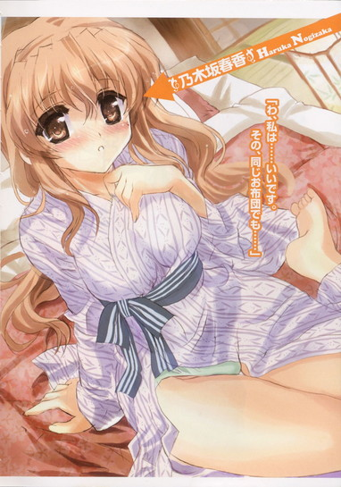

| [五十嵐雄策] 乃木坂春香の秘密10 | |
| 五十嵐雄策 | |
| (2015) | |
|
乃木坂春香の秘密 10
五十嵐雄策
|
底本データ
一頁17行 一行42文字 段組１段
乃木坂春香の秘密⑩
容姿端麗で才色兼備、『白銀の星屑』という二つ名まで持つ超お嬢様、乃木坂春香。彼女を巻き込んだ聖バレンタインの夜に開催されたオーディション騒動も、終わってみれば二人の新たな秘密として良い想い出になったのだが......。家に帰ってみるとなぜか、夕方別れたはずの椎菜がコタツの中から困ったように微笑みかけていた。しかも外は大雪。かくして聖バレンタインの夜に椎菜の綾瀬家お泊まりが確定したのだった。
そして後日。俺は春香と共に京都の人になっていた。なんでも那波さんの実家の旅館にご招待ということだが、どうも那波さんの様子がおかしくて──。
お嬢様のシークレットラブコメ第十弾（はあと）
五十嵐雄策
イラスト：しゃあ

乃木坂春香の秘密 10
物事ってのは大抵何の前触れもなく発生する。
いや実際はどこかでそれに該当するもんがあるのかもしれんが、大抵はその肝心の時には気付くことはできない。後になってああきっとあれがそうだったのか、と事後的に納得するだけである。
それはほぼあらゆる場面にあてはまるというか。
その物事が身近な事象であろうとどこか遠くで発生した事象であろうと、等しくそんなもんである。
「......」
むしろ身近な発生源な方が気付きにくいかもしれん。
常に近くで見ているものだと、かえってそういった断続的というか小さな変化には気付きにくいというか。
たとえてみるならば毎日会っているクラスメイトの微妙な髪型の変化に気付かないみたいなもんか。
「......」
まあその程度のことなら気付かなくてもさして問題はない。
相手としては気付くことを期待していないだろうし、逆に気付いてほしくない変化（たとえば寝癖とか）だってあるだろう。
だがそれでは済まない、気付かなければならいことってのも世の中にはあるわけで......
「............」
いやまた色々とワケの分からんことを言ったが。
いつものごとく結局最終的に何が言いたいのかというと、そういった前触れにほとんど気付くことができなかったサプライズフルな物事が、この二月の後半に俺たちの前に発生したってことなんだがさ。
第三十七話
０
キツネにハリセンで頬を思いっきりはたかれた気分だった。
とりあえず目の前でコタツに寝そべるアホ姉の言っている意味がこれっぽっちも分からなかった。
二月十四日。
色々と大変だった春香のオーディションが終わり家に帰り着いた先にあった光景。
それはなぜか数時間前に一度別れたフレンドリー娘が酔っぱらったアホ姉たちに囲まれてコタツで困った笑みを浮かべているというものであり──
「だから何度も言っているだろう。天宮さんは今日ウチに泊まっていくことになった。ゆえに丁重におもてなしをしろ。そう言っている。お前は日本語が分からんのか？」
「いやそうじゃなくてだな......」
それくらいは分かる。
そうじゃなくてその超展開でトンデモな結論に至ることになった経緯がさっぱり分からんというか、何だって『Chocolate Rockers』のライブを見ていたはずの椎菜がここにいるのかって話である。
ワケが分からずメガネの下の目を瞬かせるしかない俺に、
「あのね～ん、椎菜ちゃんは私たちの命の恩人なのよ～」
と、一升瓶片手のセクハラ音楽教師がそう言った。
「命の恩人......？」
「そうなのよ～。実は今日、ルコと二人でお外のお店で飲んでたの～。で、そしたらほら、雪が降ってきたじゃない？」
「それを見ていたら急に雪見酒がやりたくなってな。適当に酒を買い込んで辺りを徘徊していたところ、ちょうどいい公園が見つかったのだ、わはは」
「それで二人でどんちゃん盛り上がってたんだけどね～。どうもその途中でおねいさんたち寝ちゃったみたいなの～。そこをたまたま椎菜ちゃんが通りかかって～」
「優しく丁重に介抱してもらったというわけだ。お前も少しは見習えというくらいの見事な介抱具合だったぞ。そしてそのまま家まで送ってもらって今に至るといったところか」
座イスにふんぞり返りながら偉そうにそんなことをのたまいやがる。
「......」
いや胸を張って言うことじゃこれっぽっちもないと思うんだがな......
まあそれはともあれ。
「そうなのか、椎菜......？」
とりあえず酔っぱらいの意見はあまりアテにならない可能性もあったため確認すると、
「う、うん、だいたい合ってるかな。ライブの掃り道にたまたま見かけたんだけど、なんか二人とも普通じゃない感じだったから......。ルコさんは半分くらい雪に埋もれながら何だろ、刀？みたいなのを振り回してたし、由香里先生は雪だるまに向かって『あらやだ、裕くんたらこんなに色んなところがかちんこちんになっちゃって～、うふふふふふー』とか言いながら虚ろな目で服を脱ごうとしてたから、ちょっとまずいのかなって思って......」
「......。......そ、そうか、スマン......」
この二匹のアルコール生命体の生命力的にはそのまま一時間くらいは放置していてもまったくもって問題はなかったろうが、周囲に与える被害を考えたら家まで連行してきてくれたのは大正解だろう。ったく、ホントにこのアホ二人は......
今年で成人四年目の大きな子供たちの問題行動にとことんまで呆れていると、
「それじゃ裕人、あたしはそろそろ──」
「お」
「裕人も戻ってきたし、帰ろうかなって......。ルコさんたちはああ言ってくれてるけど、やっぱり悪いし......」
そう言った椎菜がコートとマフラーを手に立ち上がろうとして、
「あらん、どこ行くの、椎菜ちゃ～ん？」
がしっ！ と、コタツに寝転がったままのセクハラ音楽教師がゾンビのように椎菜の足首を掴んだ。
「え、どこって、あの、帰ろうかと......」
「何を言っている。さっきから言っているだろう。今日はもう遅い。それに雪も降っているため今から帰るのでは大変だ。だから泊まっていくがいい」
ルコも隣でそう言ってくる。
「で、でもそんなの悪いです。急なことで迷惑になるかもですし......」
「こちらのことなら心配することはない。私たちは一向に構わないし部屋も余っている。ご家族の方には由香里から連絡を入れさせれば問題なかろう。これでもこいつは教師だしな」
「そうよ～、私は先生なのよ～ん♪」
床に倒れた状態でリズム感のないダンシングフラワーのようにくねくねと身体を動かしながらアホ教師がそんなことを口にする、
「そ、それはそうですけど......。だけど明日も学校だし、制服とか......」
「それもだいじょぶ～。制服だったら私がぴっちぴちの高校生だった頃に着てたやつが置いてあるはずだから～。そうよね～、ルコ～？」
「うむ、ちなみに私のもある」
二人揃ってそんなことを言う。
そういえば割と忘れがちだったが、この二人白城学園のＯＢだったんだよな......
「というわけで決まりだな。よーし、今夜は天宮さんの歓迎パーティーだ！ぱーっと盛り上がるぞ！おお！」
「は～い、せっかくだから朝まで飲むわよ～ん。椎菜ちゃんには色々と訊きたいこともあるし～、うふふ～♪」
一升瓶を天高く突き上げる酔っぱらい二人。
「え、ええと、い、いいの、かな......」
椎菜がうかがうように見上げてくる。
「まあ実際夜ももう遅いし、雪もかなり降ってきてる。だから椎菜がどうしても帰らないとマズイっていうんじゃなければ、俺もその方がいいとも思う」
時間的にさすがに椎菜のマンションまでは送っていけないし（帰りの電車がない）、そもそもこの雪だと電車がまともに動いているかも分からない。何となく釈然とはしないが、ルコたちの意見に従う方が賢明だろう。
すると椎菜は遠慮がちに小さくうなずいて、
「そ、そっか。だったら......お願いしても、いいかな？」
「ああ、遠慮するなって」
「う、うん。ありがと」
ちょっとだけ安心したようにそう椎菜が笑って、
そういった次第で、椎菜がウチに泊まっていくことが最終決定となった。
１
「......うん......うん、こっちは大丈夫だから......お父さんもちゃんとあったかくして寝ないとだめだよ？毛布は押し入れに入ってるからそれを使って......え、だからあたしは平気だって。べ、別にお赤飯とか炊いて待ってる必要とかないから！何かあったら携帯にメールするしお家の人にもちゃんと了承はとってるから......うん、分かった。じゃあおやすみなさい」
最後にそう言って、椎菜が携帯をコタツの上に置いた。
「どうだった？」
「ん、だいじょうぶ。事情を説明したらちゃんと分かってくれたよ、お父さん。ちょっと慌ててたっていうかどたばたしてた感じだったけど......」
苦笑しながら首をかたむける。
まああの椎菜溺愛の少しばかり娘コン（？）気味な親父さんじゃあなあ......
「う～ん、由香里先生の出番はなかったみたいね～。ざんねんだわ～」
コタツのテーブルにどこぞの垂れた大熊猫みたいに顔を乗っけながらセクハラ音楽教師が残念そうな顔をする。
「......由香里さんが口出しすると余計に面倒なことになったと思うんですが」
「え～、何で～？」
「何でもなにも......」
現在の姿（服がはだけた状態で一升瓶を胸元に挟み込んでいる）が全てを体現してると思うんだが。
「まあ由香里の教師としての存在意義はともかく、これで晴れて天宮さんの宿泊が確定したということだな。ほら裕人、料理が足りんぞ。何か作ってこい」
ルコが一升瓶を振り回しながらそう命令してくる。
「はいはい......」
ったく、いつものことながら人使いが荒いな。
ため息を吐きながら台所に向かうべく歩き出そうとして、
「あ、裕人。あたしも手伝うよ」
「お」
「ご飯作るんだったら人手があった方がいいかなーって。あんまり大したことはできないけど、何か手伝えることがあれば何でもやるから」
椎菜がにっこりと笑いながらそう言ってきてくれた。
「そうか？ じゃあ悪いが少しだけ手伝ってもらえるか？」
「うんっ♪」
笑顔の椎菜の返事を受けて、
コタツからこれっぽっちも動こうとしない酔っぱらい×二をヨソに台所へと向かう。
台所はすでに荒らされていたのか一升瓶の空き瓶が散乱していて（もうこんなに飲んでやがったのか......）、ボウリングができそうな状態だった。
「それで何作るの、裕人」
椎菜がこっちを見ながらそう訊いてくる。
「ん、とりあえず海鮮鍋にでもしようかと思ってな。ちょうど昨日スーパーで銀鱈（北海道産）が安売りしてたし、ちょっと前からルコたちがやれ鍋が食いたい鍋が食いたいってうるさくて......」
毎日毎日育ちすぎて大きくなりすぎた縁日のヒヨコ（＝ニワトリ）のように大騒ぎなのである。いいかげんに与えるもんを与えて静かになってもらいたいところだ。
「へー、海鮮鍋かー。うん、いいよねー。こういう寒い日にはぴったりっていうか♪」
楽しそうに笑みを浮かべる椎菜。
「ああ、栄養バランスもいいし身体もあったまるしな。──あ、スマンがそこの醤油を取ってもらってもいいか？」
「はーい」
そんな感じで海鮮鍋作りが始まった。
「ねえ裕人、このお皿はここに置いておけばいい？」
「ああ、すまんな」
「こっちの薬味は切って種類ごとに取り分けておけば平気？あ、それともまだ冷蔵庫に入れておいた方がいいかな？」
「ん、いや大丈夫だ。分けておいてくれ」
「了解、じゃあ向こうに置いとくね」
テキパキと受け答えながら色々と手助けをしてくれる椎菜とともに作業を進めていく。
その姿は何だか新鮮だった。
いや別にテキパキと動く椎菜が新鮮というわけじゃないんだが（基本的に椎菜はいつもこんな感じだしな）、なんか普段は一人きりで料理をしている台所に他のだれかがいっしょに立っているってのが不思議な光景なんだよ。それが普段は教室で机を並べているフレンドリー娘ならなおさらというか......
「......」
何となくその姿を目で追ってしまっていると、
「ん、どうしたの、裕人」
「え？」
「なんかこっち見てたけど、何か用かな？ みりん取る？」
「あ、い、いや、何でもない」
慌てて首を振る。
実際少しばかり見ていたのは事実なんだが、わざわざそれを伝えるのは少しばかりこっ恥ずかしい気がしたんだよ......
「そう？ ならいいんだけど......」
ちょこんと首をかたむけた椎菜が流し台の方へ戻りかけて、「──あ、でも裕人、関係ないけどそのエプロン似合ってるよね」
と、そこでちょっとだけイタズラっぽく笑いながらそう言ってきた。
「え？」
「着けてるエプロン。いい感じだよ」
「え、これか？」
「うん、さっきから気になってたんだ。何だかすっごく着慣れてる雰囲気だし、何ていうか柄もかわいくって、マメな主夫みたい♪」
「マメな主夫......」
......って、それは所帯じみてるってことじゃないのか？
なんかそこはかとなくダメ出しされてる気がするんだが......
微妙に複雑そうな顔の俺に気付いたのか椎菜は笑いながら首を振って、
「あ、違う違う。そういう意味じゃなくて──確かにちょっと所帯じみてるとこは否定できないかもだけど──でもそれっていい意味でだよ。料理とか家事ができる男の子ってかっこいいって思うし」
「そ、そうか？」
「うん、あたしは好きだな♪」
にっこりと笑いながらそう言ってきてくれる。
それはいちおう褒めてくれている......のか？
よく分からんがまあそういうことならここは素直に受け取っとくべきなんだろう。とはいえそれもそれで少し照れくさい気がするが......
微妙にどう反応していいものやら戸惑っていると、
「──あれ、もしかして裕人、照れてる？」
「う？」
「あー、やっぱりそうだ。照れてる照れてる。ふふ、かわいー」
椎菜がにやりと笑いながら後ろで手を組んで下から見上げてきた。
「そ、そんなんじゃなくてだな......」
「えー、違うの？ なんか顔が漬け立てなホタルイカの沖漬けみたいに赤くなってるけどー？」
さらに小悪魔っぽい笑みでつんつんと俺の脇腹をつついてくる。
メッタに見せないすげぇ楽しそうな顔だ。
「だ、だからこれはだな......」
「別にそんなに照れなくたっていいのに。ほんとにそういうのっていいなって思ってるんだから」
「あ、あー、も、もういいだろ。とにかく早く鍋を作るぞ」
「ふふ、はーい♪」
やたらと弾んだ声を上げる椎菜。うう、なんか負けた気分だ......
とはいえこうして二人でする他愛もないやり取りは楽しかった。
そもそもがこんな風にだれかと肩を並べて料理を作ることってのは今まで皆無だったし、やはり相手が椎菜だってこともあるんだろうね。基本的に明るく元気で話が合うフレンドリー娘とは、いっしょにいてなんか落ち着くんだよな。
で、そんなこんなで鍋作りを続けていき、
「おい裕人、まだなのか！ 早くしろ！ もう腹が減って目の前の由香里の胸がマスクメロンに見えてきたぞ」
「もうおねいさん待ちきれないの～。ガマンしすぎてピュッて出ちゃいそう～（胃液が）」
「......」
合間にコタツの方から一升瓶を箸で叩く音とともに連呼される駄々っ子のようなアホ姉たちの声（だったら少しは手伝えよ......）を受けながらも手を動かして、
「裕人、そろそろコンロの準備しちゃっていいかな？」
「ああ、悪い。ガスがなくなってたと思うから交換してくれるか？」
「うん、りょーかい」
作業を続けることおよそ三十分。
そして、
「──よし、こんなもんだろ」
「わ、美味しそー♪」
無事に海鮮鍋（銀鱈入り）は完成した。
「おお、やっと来たか！ 鍋！ 鍋！」
「世の中にお鍋とお酒とかわいい男の子が存在すればおねいさんもう他に何もいらないわ～」
出来上がった鍋を運んでいくと、それまでコタツで粗大ゴミになっていた酔っぱらい二人が給餌時間の動物園のマンドリルのようにがばっと起き上がった。
「むう、いい香りだ。やはり冬は鍋に限るな......がつがつ......ばりばり......」
「そうね～。冬といえばイケメンとお鍋っていうか～......むしゃむしゃ......もぐもぐ......」
そんな歓喜の声とともに鍋に浮かぶ数々の魚介類に貪りついていく。
まるで真冬のオホーツク海を蹂躙するアザラシ（漁師の敵）のごとき勢いである。
「す、すごいね、由香里先生たち......」
「まあ、あれはあまり気にせんでくれ......」
見た目は見苦しいことこの上ないが、とりあえずエサを与えてる間はこの餓えたハラペコどもも少しは静かにしてるだろう。
「そ、そうなんだ......。あ、じゃ、じゃあ、あたしたちも食べよっか」
「ああ、そうだな」
うなずき合って、
野性に根ざした食欲を発揮する海獣たちの横で俺たちも鍋を食べ始める。
「あ、このアオリイカ、美味しい」
口元に手を当てて声を上げる椎菜。
「お、そうか？ こっちのヤリイカもいけるぞ。いい感じに身がプリプリしてる」
「それって洗うのに苦労したやつだよね。冷たいしぬめりがあったから滑って......」
「ああ、でもその分だけ確実に美味しく茹で上がってるな」
「へへー、やっぱりイカだけに甲斐甲斐しく下ごしらえした成果があったかなー」
互いに顔を見ながら笑い合う。
まあやたらとイカの話題が多いのはご愛敬ってことで。
「ふふ、でもちょっと不思議な感じ。こうやってバレンタインの夜に、裕人の家でお泊まりしてるなんて」
と、ふと楽しそうな声で椎菜が言った。
「そもそも裕人の家に来るのってこれが初めてなのに、その初めての日にお鍋を囲んでイカを食べてるってのも、ちょっと面白いよね」
「そうだな......」
それは俺もまったくもって同感だった。
数時間前にライブ会場で別れた時にはまさかこんなイレギュラーというか予測外な事態になるなんて、これっぽっちも想像してなかったというか。まさに予定は未定であって決定でないってやつである（少し違うか）。
「だけどなんかこういうのもいいなー。あったかいっていうかほっこりした感じがするっていうか......お鍋の効能かな？」
「ああ、きっとそうだ」
鍋中央の真イカを箸でつまみながらうなずき返す。
二人（＋オマケの海獣二匹）で鍋をつつく穏やかな時間。
それは椎菜の言う通りどこか温かくてとても心地が好いもので──
そのそこはかとないまったりとした空気に浸っていると、
「おい裕人、このエビは何だ！」
「......」
横から飛んできたアザラシの声に遮られた。
「殻がやたらと取りにくいくせにちまちましていていちいち身を出すのが面倒だ。うまいこと取り分けて食べやすくしろ。ああ、ちゃんとミソは分別するんだぞ」
「ねえ裕く～ん、この銀鱈の頭、骨がとっても多くて硬いの～。もうびんびんでぎんぎんでおねいさん声が出ちゃいそう～。だからきれいに身をほぐして骨を取り除いて『あ～ん』って食べさせて～」
「......」
赤く茹で上がったアサヒエビ（小笠原産）と銀鱈の頭部（北海道産）を振り回しながらぎゃーぎゃーとそんなことをのたまう酔っぱらい二人だった。
......ったく、ホントにこの大食い生物どもは。のんびりとした気分が台無しっつーか。これでも食べやすいように殻に切れ目を入れたりできる限り骨を取ったりと色々やってるってのに......
とはいえこの大きな駄々っ子どもにそんなことを言ってもヌカミソに釘打ち機である。
心の中で御影石のような重いため息を吐きつつ仕方ないのでそのアホクレームに従おうとして、
「──はい、ルコさん。殻、剥けましたよ」
「お......」
「おお、すまんな」
「由香里先生も。頭の骨は複雑だから全部取るのはムリですけど、大きめなのは取っておきましたから」
「あ～ん、ありがとう～、椎菜ちゃ～ん♪」
それよりも先に椎菜が動いていた。
手際よく箸を動かしてアホ姉どものダメ人間リクエストに応えている。
「椎菜......」
「あ、ごめん、勝手なことしちゃって。おせっかいだったかな？」
「え、いや、そんなことはまったくこれっぽっちも。それより悪いな、面倒かけて......」
この二人の理不尽な命令に慣れている俺以外にとっては、こんなもんクレーム以外の何でもないと思うんだが......
しかし椎菜はふるふると首を振って、
「ううん、それこそ全然。こういう風にだれかのために何かをやるのって、好きだから」
にっこりと笑いながら楽しげに言ってくる。
本当に心からそう思っていることが窺える屈託のない笑顔だった。
「うーむ、天宮さんはよく気が付く娘だな。どこぞの空気の読めないＫＯＳＭメガネとは大違いというか。代わりに妹になってほしいところだ」
殻の剥けたアサヒエビをもぐもぐと口にしながらルコがうんうんとうなずく。
いやだれがＫＯＳＭメガネだ（てか何で知ってやがるんだよ......）って突っ込みはともかく。
──そうなんだよな。
椎菜は気遣いがうまいというか、とにかく気が利くんだよ。
さっきの鍋の準備の時もそうだったんだが、こっちがやってほしい絶妙なタイミングで皿を並べてくれたり調味料を取ってくれたりしてくれた。それもこの上なく自然でさりげない間の取り方で。なんつーかそういった心遣いが気負うことなく身に付いているというか......
今も自分から率先して鍋のアクを取ってくれているそのナチュラルでジャストフィットな気配りに改めて感心していると、
「............う～ん、やっぱり男の子はこういうよく気が付く気立てのいい女の子の方が好きなのかしら～......はぁ～......」
「？」
と、今度は何やら隣のセクハラ音楽教師がキャラに合わないそんなアンニュイなため息を吐いていた。
「気が利いて素直でかわいくて......かゆいところに孫の手が届く感じっていうか......。男ってみんなそうよね......。知り合った当初は『飾らないそのままの魅力が素敵ですね』とか言ってるクセに、いざちょ～っとほんとのおねいさんを見せると手のひらを返したみたいに冷たくなって～......ひっく」
「......」
ぐぴっと一升瓶をあおりながらそう吐き出すように言う。
どうもまたなんかやらかしたらしいな。まあこの人のことだからどうせいつものごとく酔っぱらってくだを巻いて半裸になりつつ得意の火炎放射を披露したとかなんだろうが。
「うう、何でこうなるのかしら......。きっと幸せの神様が女神様で美人のおねいさんには厳しいからだと思うんだけど、そのせいで気付けばいつも一人ぼっち......。家に帰ってもだれもいない。ご飯を食べるのもロンリーで話しかけてくれるのはテレビの中のイケメンたちだけ......。だったらせめて話し相手にかわいいインコちゃんでも飼おうかと思ってもアパートはペット禁止だし～......」
「......」
「寂しさを紛らわせようとお風呂でラブソングを歌ってたら近所からうるさいって苦情が来る......切なさを忘れようとお酒を飲めばビンのゴミ出しの日を間違えて大家さんに怒られる......。結局私をなぐさめてくれるのはお池の徹平くん（金魚・♂）だけで......。もう毎日が灰色の日々......。人間ってこうやって年を取っていくものなのかしら......。だとしたらそんな生活、おねいさんもう耐えられない......。そろそろ心が折れちゃいそうな二十四歳の夜......うっ、うう、おうっおうっ......」
一升瓶を右手に握り締めながらコタツのテーブルに顔を伏せる。
なんか泣いてるみたいだった。
ていうかマジ泣きだった。
う、うーむ、この人もこの人で色々とたまってるもんがあるんだな。ほとんどは自業自得のような気もするが。
泣き崩れる三十路まであと六年のセクハラ音楽教師＠彼氏ナシ（ちなみに同条件のその親友は特に気にした様子もなく隣でアサヒエビを貪り食い続けている）を見つつ、少しだけ同情的な気分になっていると、
「......でもこんなんじゃダメよね。泣いてたってなんにも解決しないし、落ち込んでばかりいられないっていうか。やっぱりどこかでこの負のスパイラルを抜け出さなきゃ。──うん、そうよね。決めた。もうおねいさん、裕くんのお嫁さんになる！」
「は？」
突然またワケの分からんことを言い出した。
「だってそうすればおねいさん、もう一人じゃないもん......！それで裕くんが住み込みでご飯を作ってくれたりお掃除をしてくれたりお洗濯をしてくれたりして、一生おねいさんの面倒を見てくれるの～♪」
「......」
......いや、ちょっと待て。
「朝も毎日優しく起こしてもらって～、お昼にはお弁当を作って届けてもらって～、それで夜には美味しいディナーとお風呂を用意してもらって～......ああ、めくるめくバラ色の生活。おねいさん、きっと楽しいと思うの。いいでしょ～？ね、ね～？」
それまでの号泣も何のその、エサをねだるトドのように身をすり寄せながら迫ってくる。
てかそれ単に家事をやるのがイヤなだけだろ。しかも現段階ですでにその九十パーセント（炊事、洗濯、掃除）を俺がやってるんだが......
だがそんな俺の内心の突っ込みなどどこ吹く季節風でアルコールにまみれた音楽教師は、
「ね、いいでしょ裕く～ん♪ お嫁さんにしてくれたらお返しにおねいさん、とってもい・い・こ・と♪してあげるから～。スイートコースがいい～？それともデラックスハニートーストコース？何でもよりどりみどりよ～」
耳元でささやきながらしなだれかかるように抱きついてくる。はあ、鬱陶しい......
「......だからですね──」
いいかげんに熱海の金色夜叉のごとく振り払おうとして、
「──ちょ、ちょっと、ま、待ってくださいっ！」
「お？」
「あら～ん？」
「む？」
と、そこで意外なところから制止の声がかかった。
直近というかほぼ真横からの声。
その出所は──
２
「あ、え、ええと......」
「椎菜......？」
──アク取り用のお玉片手のフレンドリー娘だった。
右手でお玉の柄をぎゅっと握り締めながら、困惑したような顔で真っ直ぐにこっちを見つめている。
「え、ええと、よ、よく分からないですけど、そ、それって、なんか違うと思います。そ、その、先生と生徒じゃないですか。そんな、お、お嫁さんとか同棲とかって、ま、まずいっていうか......」
「......」
「そ、それに、それだけじゃなくて、その、何ていうかこういうことで一番大事なのはお互いの気持ちだと思いますし......。だ、だからその、勢いとかそういうのだけで決めるのはよくないことだと......。......あ、あたし、何を言ってるんだろ......」
そう言いながらもにょもにょとパプリカみたいに赤い顔をしながらうつむいてしまう。
むう、椎菜がこんな風に動揺した感じになるなんて珍しいな......
と、それを見ていたダメ音楽教師がとろんとした目で、
「な～に～、椎菜ちゃん、それってもしかしておねいさんの代わりに椎菜ちゃんがお嫁さんになりたいってこと～？」
「え？」
にやにやと笑いながらいきなりそんなことを言い出した。
「だって私が裕くんのお嫁さんになるのがだめってことは、そういうことじゃないの～？『美人で優しくて気立てのいい由香里おねいさんは裕くんにはもったいないわ～、代わりに自分がお嫁さんをヤる～』ってことでしょ～、ひっく」
「え、あ、そ、その、あ、あたしはそんなつもりで言ったんじゃ......」
「あらん、違うの～？ う～ん、な～んかそこはかとないらぶの匂いを感じたような気がしたんだけどな～。ま、いいわ～、違うんならおねいさんが裕くんのお嫁さんになるだけだも～ん。ね、裕くぅ～ん（はあと）」
「う、うわ！」
今度は服を脱ぎつつ再度がばっと抱きついてきやがる。
「ほらほら～、よいではないかよいではないか～。口では色々言っても身体は正直なんだから～。おねいさんといっしょに添い遂げましょ～♪」
「だ、だから......」
そんな添い遂げという名の隷属家政夫（人生の墓場）はこれっぽっちもお断りだってのに。
アルコールで顔が赤くなり普段の三倍タチが悪くなっているセクハラ音楽教師（着崩れ→半裸）を何とか振りほどこうとして、
そこで、
きゅっ......
「？」
背中のところに何か引っ張られるような感触がした。
そこまで強くはないのだけど確かに意思を感じさせる感触。
見てみると......さっきよりもさらに顔を赤くした椎菜がうつむきながら服の端を握っていた。
「椎菜？」
「............っ（真っ赤）」
顔を伏せて、こっちから目を逸らしたままふるふると小さく首を振っている。
「あら、やっぱり椎菜ちゃんがやりたいの～？お嫁さん」
「......あ、え......そ、その......っ......」
「うんうん、分かったわ～。みなまで言わなくてもいいっていうか、青春ね～、ひっく。おねいさん胸にどきゅ～んときちゃった。いいわよいいわよ～、そういうことなら今日のところおねいさん、涙を呑んで譲ってあげる～。こういうのって何だったかしら～？すわっぴんぐ～？」
「......」
いやもう前提からして意味が分からないというかそもそもこの人は本当に教員採用試験（特に英語）に合格したのかと疑惑の眼差しを向ける俺をヨソに、
「さ、それじゃあ二人とも並んで並んで～。お嫁さんってことは夫婦で新婚さんなんだから、もっとぴったりむっちりくっつかないと～♪」
「お......」
「あ......」
ぐいと腕を引っ張られ二人して半ば強引に隣同士に密着して座らされる。
少し動けば吐息が交わるほどの近距離。
思わずお互いに顔を斜め下四十五度に逸らしちまう。
「うふふふふ～、初々しくっていいわね～、おねいさん、こういうの見てると楽しくなってきちゃう～。さ、そしたらまずは新婚さんの基本プレイ、桃色いちゃつきプレイよ～！二人していちゃいちゃらぶらぶで絡み合うの～！」
いやプレイとか言うな......
というかこの人はもうダメだった。
酒と不運と生来のセクハラ回路とで、脳細胞がすっかりどぎついピンク色に染まってやがるみたいである、
こうなったらもう残る頼みの綱は──
「ル、ルコも何とか言ってくれ！」
この際もう回避手段は選んでられん。
全般的に人間的にはセクハラ音楽教師と同レベルだが、このアホ姉はこういう貞操だとか道徳だとかにだけはムダに厳粛なため（ただし自分に関することは除く）、いちおう助けを求めてみたんだが......
「んー？ 別にいいんじゃないか？ ひっく」
そんな答えが返ってきやがった。
「由香里が義妹になるなんてのはあり得んし、天宮さんは見た通り非常によくできた娘だからな。由香里に気を遣って合わせてくれてるんだろう。そういうのもありと言えばアリクイの大五郎だな、ひっく」
「......」
ていうかすでにセクハラ音楽教師以上の酔いどれ状態だった。
一升瓶とアサヒエビの殻の墓標に囲まれながら、据わりまくっていつもの六倍ぐらい焦点が合わなくなった目でこっちを見ている。いやアリクイの大五郎って何なんだよ......
絶望的な気分になる俺に、
「あはははは～、さ、それじゃ新婚さん、いらっしゃ～い♪」
どこまでも楽しげに笑いながらセクハラ音楽教師が高らかにそう宣言したのだった。
「ほらほら～、早くヤる～。とりあえず新婚さん桃色いちゃつきプレイの初歩中の初歩、お互いに愛称で呼び合いながら『あ～ん』でもやってもらおうかしら～♪」
「え？」
「愛称......？」
またいまいち意味の分からんことを......
「そうよ～。二人で新婚さんらしいらぶらぶなあだ名で呼び合いながらご飯を食べさせっこしてあげるの～。この場合だったらとりあえずは椎菜ちゃんが裕くんのことを『あなた～（はあと）』とか『裕ちゃ～ん（はあと）』とか呼びかけながら優しく食べさせてあげるのが基本常識かしら～」
「......」
何だそれは......
どこのセクハラ世界の常識かって話である。
思わず胡乱な目になる俺に、
「え～、裕くんノリわる～い。ていうかかた～い。男の子が硬いのはあそこだけでいいのに～」
「......」
くねくねと身体を動かしながらそんなことを言いくさりやがった。
もういっぺん馬車にでも轢かれて生まれ変わればいいと思う、この人。
「あ～ん、何でそんなに怖い顔するの～。先生、裕くんたちが将来こういったアバンチュールな場面に直面しても困らないように身を犠牲にして指導してあげてるのに～。ここまで愛する生徒のためにがんばってるのに、その気持ちが伝わらなかったのかしら～......」
「......」
「切ない......切なすぎるわ......ああん、学級崩壊......。やってくれなかったらもうこれ以上先生を続けてく自信がないかも......ぐすん......」
今度はあからさまな泣き落としを仕掛けてくる。ったく、バレバレだってのにホントにこういうところだけムダに芸が細かいな......
「......ハァ、だから何度も言いますが......」
心の底からため息を吐きつつたしなめようとして、
「あ、え、ええと、そ、そんなことはないと思いますよ！」
「え？」
椎菜がそう声を上げた。
「あ、あの、由香里先生はいい先生だと思います。とっても面倒見がいいですし授業も分かりやすいですし、転校してきた時からすごくお世話になっています。だ、だから先生をやめるとか、そんな......」
困ったようにきょろきょろと周りを見ながらそうフォローをしようとする。
本当にこのセクハラ音楽教師が落ち込んでいると信じている顔だ。
「あー、椎菜、何ていうかこれはな──」
こめかみに指をやりつつ説明しようとするものの、
「そうなの？ ほんとにそう思う？」
「え？」
それよりも早くがばっと起き上がった由香里さんが椎菜の手をがっちりと握った。
「ほんとにほんとに心からそう思ってくれてるの？それってつまりおねいさんの先生としての情熱が伝わったってことなのよね～？うんうん、嬉しいわ～。ってことは新婚さんプレイもやってくれるってことよね～？」
きらーんとメガネを光らせながら詰め寄ってくるセクハラ音楽教師。
「あ、え、ええと......？」
「だって先生の情熱が伝わったってことはそういうことじゃな～い？いいからほら、早くあだ名で呼んで食べさせっこするの～。やってくれなきゃおねいさん落ち込んで立ち直れない～！」
一升瓶を両手で振り回しながらじたばたと床に転がり始める。
その実に大人げないアクション（てか子供か......）に椎菜は少しの間あたふたと何かを考え込むように顔を動かしていたが、
やがて何かを決意したかのように、
「あ、あのさ、裕人......」
「お？」
「え、ええと......」
おずおずと遠慮がちにそうこっちを見て、
「あ、あ～ん......〝あ、あなた〟......」
ちょっとだけ様子をうかがうようにして、テーブルの上にあったヤリイカのゲソを箸で差し出してきた。
いつもは絶対に発せられることのない、シチュエーション超限定な呼び名。
「......」
む、むう、思ったよりも耳に引っかかるっつーか、インパクトフルだな。ただ呼ばれ方が変わっただけだってのに、それだけで新鮮というか何か微妙にこそばゆい感じが......
「あ、あの、裕人......？」
「え、あ、ああ」
......っと、いかんいかん。予想外の付加効果に思わず思考がプチ停止状態になっちまってた。
慌てて頭を振って、こっちに視線を向ける椎菜の箸からヤリイカのゲソを受け取る。
「ど、どうかな？」
「ん、ウマイぞ、ヤリイカ」
さっきも言ったが、弾力あるゲソが適度な歯ごたえを醸し出していい感じである。
だが椎菜は小さく首を振って、
「あ、そ、そうじゃなくて......」
「え？」
「い、今みたいな感じでよかったのかな？ その、〝あなた〟で......。そ、それとも〝裕ちゃん〟って呼んだ方が、よかった......？」
少しだけ赤くなった頬で見上げながらそう訊いてくる。
「あ、い、いや、それは問題ないと思う」
「え、そ、そう？」
「あ、ああ。なんか新鮮だったしな」
「そ、そっか、よかった」
安心したように胸に手を当てて微笑む椎菜。
その表情はどこかいつかのカラオケの時のようにいつものフレンドリー娘とは違うものというか、女の子らしいもので......なぜか少しだけ胸の鼓動がアクセルオンするのを感じた。
「いや～ん、もうたまらな～い。この熟す前の果実の甘酸っぱい感じっていうか、青春で思春期なこそばゆい波動におねいさんの心の青春ゲージはびんびんだわ～（はあと）」
そんな俺たちの横で一升瓶を抱えながら身悶えする酔っぱらい音楽教師（やかましい......）。
「いいわねいいわね青い春ね～、おねいさんもあと五歳若かったらな～......ひっく。──さあ、こうなったら次もどんどん行くわよ～ん！新婚さんプレイその二。椎菜ちゃんが裕くんをひざまくらをしてそのまま頭をなでなでよ～♪」
「は？」
ちょっと待て。
何をさらっと「その二」とか言い出してるんだこの人は。
「え～、だってせっかく場が盛り上がってきたところなんだからこんな序盤戦くらいで終わるわけないじゃな～い。新婚さんなんだから、個人的には初夜まで突っ走ってほしいくらいよ～♪」
「............」
ホントにもう牛車にでもはねられて輪廻転生すればいいのに。
「とにかくヤるの～。細かいことはいいからヤるの～」
「お......」
再びぐいっと腕を引っ張られる。
ふいに引かれた俺はバランスを崩して、そのまま仰向けに倒れ込むカタチで椎菜のヒザの上に軟着陸した。
ポスン。
柔らかい感触と柑橘系を思わせる柔らかないい匂いがふっと鼻先を漂う。
「は～い、そこで椎菜ちゃんは裕くんの頭をなでなでする～」
「あ、え？」
「ほらほら早く～。彼女ネコが彼氏ネコを毛繕いするみたいに愛情たっぷりでね～♪」
「あ、は、はい」
そうすることがさも当然のごとくそう言う由香里さんの勢いに流されたのかこっくりとうなずく椎菜。
そして、
な、なでなで......
次の瞬間、そんな優しげな感触がどちらかと言えば直毛気味な俺の髪を柔らかく揺らした。
「し、椎菜？」
「え、ええと、こんな感じで、だいじょうぶ......なの、かな......？」
さわさわと頭頂部を撫でつけながらそう尋ねてくる。
「え、あ、いや気持ちはいいが......」
強すぎもせず弱すぎもしない絶妙な力加減の手は普通に心地いい。
しかしこの場で問題になってるのはそういうことじゃないと思うんだが......
だけど椎菜はその言葉に表情を緩めて、
「ほ、ほんと？ ちょ、ちょっと嬉しいな。えへへ......」
この上なく嬉しそうな笑顔を見せる。
うーむ、突っ込みたいことはいくつかあったが......そんな椎菜の顔を見ていたら若干どうでもよくなってきた。
頭の後ろにある柔らかくて温かいヒザの感触。
嬉しそうに笑いながら優しく撫でてきてくれる椎菜の手の感触。
それは思いの外リラクゼーション効果が高いというか、なんか落ち着く感じで──
「......」
由香里さんのアレな思惑に乗せられるのは多少シャクなんだが、こういうのも悪くないかもしれん......
少しばかり夢見心地な気分でいると、
「ん～、なんか物足りないのよね～」
と、また脳内がアルコール漬けの音楽教師が何やらそんなことをつぶやき始めた。
「愛称で呼びながら頭を優しくなでなで。新婚さんの基本的要素としては及第点なはずなのに、絵面的に何かが足りないのかしら～？新婚さんに足りないもの、足りないもの......あ、そうだわ～！おねいさん、分かっちゃった！」
そこでぱちんと手を叩き、
「何が足りないって、子供よ～、子供が足りないの～！」
「は？」
「新婚夫婦と言えばやっぱり子供よね～。べいび～ちゃんよ！」
すげぇいいこと思いついちゃった的な顔でまたそんなロクでもないことを言い出した。いやそれ単に出来ちゃった婚だろ......
もう色々突っ込むのにも疲れて無言になる俺の横で、
「うん、そうよ、そうに決まってるわ～。パパとママに甘えるかわいらしいべいび～ちゃん......それこそが欠けていた最後のパーツなのよ～。よ～し、そうと決まればじゃあここはかわいらしくて愛らしい魅惑のべいび～ちゃん役はおねいさんがやる～。ばぶ～☆」
「え、きゃっ」
後半いくつかの形容に異論を挟む間もなく、
そんな極めて頭の悪そうな声を上げながら、セクハラ音楽教師が覆い被さるように椎菜に抱きついてきた。
「ゆ、由香里先生!?」
「わ～、やわらかくていい気持ち～。ままのおっぱい、おちつく～」
「あ、あの、先生、な、何を──」
「せんせいじゃないの～。今はぱぱとままのべいび～ちゃんの、ゆ・か・り☆ねえまま～、ゆかり、おなかすいちゃった～。ままのおっぱい飲みたい～☆」
「え？ あ、ちょ、ちょっと、や......っ......」
「ね、いいでしょ～、まま～。おっぱい飲ませて～☆」
「だ、だめです......そ、そこは......やっ......」
「あ、あんた、何やってんだ!?」
抱きつくと同時にむしゃぶりつくように椎菜の胸に一直線に向かっていきそのまま服の中にぐりぐりと顔を突っ込み出した外観上はほとんど変質者（自称べいび～ちゃん）を慌てて引き剥がす。
「何って、おっぱいに決まってるじゃな～い。分かりやすく言うと授乳～？べいび～ちゃんなんだからお母さんのおっぱいを欲しがるのは当然でしょ～？」
「......」
そんな局所的なとこだけリアリティを求めなくていい。
「とにかく～、おねいさんは今、無性に椎菜ちゃんのおっぱいが欲しいの～。椎菜ちゃん、ちょっと吟味したところによると思ったよりおっきいみたいだし～。それにいいカタチしてるのよね～、じゅるり......」
「......」
獲物を狙うウマヅラコウモリ（バナナ好き）みたいな視線でぎらぎらと椎菜の全身（主に胸）を舐め回してくる。もう限界だ......
「し、椎菜、こっちに！」
「え？ あっ──」
もはやこれ以上この場に留まっていると色々な意味で危険だろう。
はだけた胸を押さえる椎菜の逆の手を引いて居間から走り出す。
「あ～ん、ちょっとどこ行くの～。おっぱい～、おねいさんのおっぱい～！ぐらまらすでぼい～んな私のおっぱいぃいいい～！」
背後からセクハラ音楽教師のおっぱい連呼（最低だ......）が聞こえてくるが、当然日光の三猿の一匹のように無視。
「と、とりあえず俺の部屋にまで行くぞ！」
「あ、う、うんっ」
そううなずき合って、
ひとまず二階の俺の部屋にまで緊急避難することにしたのだった。
ちなみにそんな一連のおっぱい騒動の間、
「ふむ、いい夜だな......」
ルコはずっと一升瓶の大吟醸を飲みながら一人我関せずな顔でアサヒエビをつまんでいた。
３
「あー......ホントにスマンかった！
ヒザに手を着きながら椎菜にガバッと頭を下げる。
「せっかく楽しい気分で鍋を食ってたってのに、いつの間にかなんかあんなよく分からん変態劇場に付き合わせることになって......」
「あ、え、ええと......」
ちょっとだけ困ったように口ごもる椎菜。
もはやこっちとしては何一つ申し開きできる立場じゃない。
前半の新婚プレイとやらはともかく（いやまああれもあれで単体で見るとたいがいなんだが）、それと比べても最後のアレはどこまでも最悪だった。ある意味セクハラで訴えられても文句は言えないっつーか......
「で、でも大丈夫だよ。その、ちょ、ちょっと色々びっくりして大声を上げちゃったりしたけど、相手は由香里先生だし......」
「だがな......」
「き、気にしないで。あたしは平気だから」
「そう言ってもらえると助かる......」
もう一度頭を下げながら力なく息を吐く。
ちなみに今でも部屋の外では追いかけてきたセクハラ音楽教師（変態べいび～ちゃん）がばんばんとドアを叩きながら「おっぱいおっぱいおっぱい～」と卑猥なエロゾンビのようにうめいている。もう心から涅槃を越えて来世の果てまで飛んでいけばいいと思う......
「あの酔っぱらいセクハラ魔には後でたっぷり注意しとく......。ったく、三日は夕食抜きでもいいくらいだ......」
「あ、だ、だから、ほんとだいじょうぶだよ。途中でちゃんと裕人も止めてくれたし」
フォローするように笑いながら首を振って、「そ、それにお嫁さんって呼ばれたのは......ちょっとだけ、嬉しかった、から......」
「？ なんか言ったか？」
「！ う、ううん！ 何も言ってない！ ゆ、裕人の気のせいだよ！」
「??」
「そ、それより、これが裕人の部屋なんだ？」
俺に背を向けるようにして部屋をぐるりと見回しながらそう声を上げる。
「ん、ああ。椎菜は入るの初めてだよな？」
今までは意外にウチまで呼ぶ機会がなかったというか、実のところこの部屋に入った女子自体がそう多くはないんだよな。春香に美夏、葉月さんたちメイドさんに、それとルコと由香里さんくらいか。
「うん。でもきれいにしてるんだねー。お父さんがだらしないから男の子の部屋ってなんかごちゃごちゃしてる印象があったけど、全然そんなことないよねー」
「え、そうか？」
個人的には特にキレイにしてる意識はなくて、ただ子供の頃から放っておくと部屋どころか家全体を完膚無きまでに汚しまくる天然ダストメイカーみたいな二人を身近で見てきたため、一定以上散らかり始めると反射的に片付けたくなるだけなんだが。
だけど椎菜はそうだよー、と大きくうなずいて、
「これくらいキチンとしてるのは女の子の部屋でもなかなかないんじゃない？お父さんとか実家の弟とかにも見習わせたいくらい」
「む、むう......」
なんか今日は意外なところで褒められて対応に困るな。まあそれが全部家事絡みっつーか所帯じみたところに集中してるのは若干アレだが。
そこはかとなく微妙な気分になっていると、
「だけどほんとすごいなー。見えないところのホコリとかもちゃんと取ってあるし、本棚もきれいにしてるし......。あ、そういえば男の子ってよくこういう本棚の百科事典の間とかにえっちな本とか隠してるって聞くけど、裕人はどうなのかなー？」
微妙にイタズラっぽい目でこっちをじーっと見てくる。
「あー、何を期待してるのか知らんが、別にそんなのはないぞ」
「そうなの？」
「ああ、残念ながらな」
というかあったとしてもそんな分かりやすいところに隠しておくはずもない。唐突なツインテール娘の来襲とか日頃のアホ姉たちの侵入とかもあるわけだし。
「えー、つまんないなー。男の子なんだから少しくらいそういうのがあっても別に普通だと思うんだけど──あれ、これは？」
「？」
と、そこで椎菜が何かを発見したかのように本棚の奥に目をやった。
「何だろ？ ええと、なんかＤＶＤみたいだけど、タイトルは......『お兄ちゃんといっしょ（はあと）』!?」
「!!」
それは!?
「こ、これって......？ な、なんか中学生くらいの女の子が制服姿で恥ずかしそうな顔しながら色んなポーズとかとってて......。──も、もしかして、裕人!?」
「い、いや、違うんだ！ それはそういうもんじゃなくて、な、なんつーか......」
椎菜が手に取っていたＤＶＤ。
それはつい先日知り合った野々原野乃ちゃんのイメージビデオ（アイドル写真集の映像版のようなもの）だった。
いやもちろんこれは自分から喜び勇んで発売日に購入したとかじゃなく、事務所に何度か行ってた時にたまたま本人から「あ、これ裕にぃにあげますねっ。主に宣材として使ってたやつで、けっこうレア物なんですよっ」と言われてもらったものなんだよ。
まあ確かに『フラッシュ＆フレッシュガールズキャラバン☆』でグランプリを獲って名実ともにアイドルとしての道を歩むことになった今後、このＤＶＤは色んな意味で貴重で得難いものになるかもしれんが......って今はそういう話題はどうでもよくて！
「と、とにかく、誤解だ！ これはそういった怪しいものじゃないし、そもそも買ったわけじゃなく本人からもらったわけだから......」
何とか申し開きしようとするものの、
「だ、だいじょうぶだよ。あたしは裕人がどんな趣味を持ってたって、その、友達だから......」
「は？ い、いや、そうじゃなくて......」
「う、うん。そういった趣味嗜好は人それぞれだもんね......。そういえば裕人、美夏ちゃんとかともすごく仲がいいし、それってやっぱり根底にそういった好みがあったからなのかな......」
遠い目をしながらそんなことを言う。
「だ、だからだな......」
ヤ、ヤバイ、なんか妙なレッテルを貼られかけてないか......？
とはいえ強力極まりない物的証拠（外見上の）が目の前にある以上、あまり強く反論はできない。いや当然のごとく手元のこれはそういった特殊嗜好な人向けの内容のものじゃなくて（タイトルと見た目はともかく）、普通の宣伝用ＤＶＤなんだがさ。
どう説明すればいいのか般若湯を前にした修行僧のごとく頭を悩ませていると、
「......ぷっ」
「え？」
と、そこで椎菜が小さく息を吐いた。
「ぷっ、ふふ、あはは......。冗談だよー。そんなに真剣な顔にならなくても、分かってるって」
「じょ、冗談......？」
その言葉に椎菜は手で目元を拭って、
「うん、そ。裕人に別にそういう趣味がないことくらい分かってるってー。何かのついででもらったとかだよね？でも裕人、面白かったー。本気で焦ってるんだもん。もしかしてほんとにそういう趣味があるのー？」
茶化すように笑いながらそんなことを言ってくる。
「......」
やられた......
完全に騙された......
まさか美夏や澤村さんならともかく、このフレンドリー娘がこんな小技を繰り出してくるとは......
目の前でなおも面白そうに笑い続けるフレンドリー娘に苦い気分になりつつ俺は、
「あー、も、もういいだろ。ほら、返してくれ！」
現状のネタとなった元をさっさと回収しようとして、
「え、まだいいじゃーん。もうちょっと見せてよ♪」
「ダ、ダメだ！ いいから返せって」
「えー、そんなこと言わないでさー。せっかくだから写メに撮って良子とかに送っちゃおっかなー、高画質で♪」
「あ、なっ、そ、それはナシだ！」
んなことされたら後でどんなことを言われてからかわれるか。
そんなことを言い合いながらＤＶＤを取り合う。
手を伸ばす俺に対してその分だけ椎菜が身を引く感じ。く、ここは負けるわけにはいかん......
「ほ、ほら、いいかげんに諦めろって！」
「えー、諦めるのは裕人の方だよー。どうしても返してほしいんだったら取ってみなよー」
「い、言ったな？ こればかりは譲れんから本気で行くぞ」
「あはは、いーよ。どんと来いって感じ」
ＤＶＤを間に押したり引いたりを繰り返す。
一進一退の攻防。
と、その時だった。
ポロリ。
「あっ」
「お」
持ったまま前に後ろに動かしている内に手を滑らせたのか、椎菜の手からＤＶＤが落ちた。
支えを失い、ケースに包まれたＤＶＤは当然のごとく地球の引力に従って落下する。
「......っと」「......あっ」
俺はそれをキャッチしようと手を伸ばし、やはり椎菜も落とすまいと手を伸ばして、
ピタッ......
ちょうど床に墜落しかけたところで手が重なり合った。
「お......」
「あ......」
ナイスタイミングな接触。
瞬間、二人の動きが止まり、
「あ、あー......」
「あ、え、ええと......」
目が合う。
肩が触れ合う。
気付けば互いの身体がほとんど重なり合うほどの至近距離にあり──
それは単に手が触れ合っているというよりも......ほとんどＤＶＤを挟んで互いの顔を見つめ合っているような状態だった。
「......」
「......」
沈黙だった。
辺りが真空になってしまったみたいな沈黙。
ＤＶＤを真ん中に挟んで顔を向かい合わせたまま、二人とも数時間放置したコンクリートのように固まってしまっている。
少しの間を置いて、
「あ、わ、悪い！」
「あ、う、ううんっ！」
二人同時に飛び跳ねるように身を引いた。
急な動きで支えをなくしたＤＶＤがポトリと床に落ちる。
「あー、その、あれだ、これはなんつーか、たまたま偶然で......」
「う、うん、それは分かってるっていうか......」
「......」
「......」
お互いに次の言葉が出てこない。
何となく気まずいような据わりが悪いような微妙な空気になる。
「......」
う、うーむ、普段ならこの程度の突発的＆アクシデント的接触に別にそこまでどうこうすることはないんだが、やはりさっきのセクハラ音楽教師のお嫁さんうんぬんのやり取りが尾を引いてるんだろう。ふとした拍子になんかムダに意識のスイッチが入っちまうというか......
「......」
「......」
再びの沈黙。
気が付けばいつの間にか（諦めて酒盛りにでも戻ったのか）ドアの外のセクハラ音楽教師の卑猥な声も聞こえてこなくなっている。
しばしのそんな静寂を挟んで、
「──あ、そ、そうだ。え、ええと、ＤＶＤ、か、返すね」
「え？」
と、椎菜が微妙な空気を振り払うようにしてそう声を出してきた。
「ご、ごめんね、別に本気でメールを送ったりするつもりじゃなかったんだけど、つい調子にのっちゃって......」
「ん、あ、ああ」
まあそれは分かってるが......
何となくモヤモヤとした気分を感じながら受け取ろうとして、
ハラリと何かがＤＶＤケースの中から落ちた。
「お」「あ」
落ちてきたのは便せん。それは野乃ちゃんがこのＤＶＤをくれるにあたり添えてくれたメッセージカードで、そこには女の子っぽいかわいらしい字で『たまには真尋に連絡してあげてくださいねっ。裕にぃに全然会えないって、すっごく寂しがってましたからっ』と書かれていた。
「真尋、ちゃん......？」
と、それを見た椎菜が怪訝な顔になる。
──ああそうか。椎菜は知らないんだっけか。
「ん、真尋ちゃん──朝倉真尋ちゃんは信長の妹なんだよ」
「信長って......朝倉くん？」
「ああ、一つ年下でな、幼馴染みなんだ。幼稚園くらいからずっと仲良くしてて、ちょっと前まではよくいっしょに遊びに行ったりしてたんだよ。このＤＶＤをくれた子とクラスメイトでもあって......。もっとも最近は何ていうかタイミングは悪くて、あまり会えてないんだが......」
あれはタイミングが悪いというかもうほとんど運命（ダメな意味での）の領域かもしれんが。
実のところ今日も真尋ちゃんはチョコを渡しにわざわざウチまで来てくれたらしいんだが、あいにくその時間は俺はライブに行ってしまっていて不在だった。門限ギリギリまで粘っていてくれたらしいが、最後にはタイムオーバーで諦めてしょんぼりと帰っていったとルコたちが言っていた。悪いことしたな......
「タイミングが悪い、か......」
と、椎菜が何かをかみしめるようにしてぽつりとつぶやいた。「分かるな、それ......」
「？」
「タイミングって、ほんとに大事だよね。それがだめだともう色々なことが全然うまくいかなくて......」
「椎菜？」
どうかしたんだろうか？
怪訝に思って声をかけると、
「あ、う、ううん、何でもないよ。ちょっと考えごとをしてただけで......」
ぶんぶんと顔の前で手を振りながらそう言って、
「でも......そうだよね。せっかくタイミングが巡ってきてるかもなんだから、ムダにしたら......だめ、だよね」
「？」
「ねえ──裕人？」
と、そこで椎菜は一度言葉を止めた。
そして俺の目を真っ直ぐに見ると、
「あのさ、これからあたしがいいって言うまで......ちょっと目をつむっててくれないかな？」
何かを決意したかのようにそう言ってきた。
「目を？」
「うん。えっと、たぶん十分くらいだと思うけど......」
「十分......」
「だめ、かな......？」
「いやダメってことはないが......」
そんな長い間目隠し状態にして何をしようってんだ？
思わず疑問の表情を浮かべる俺に、
「それは......秘密。目を開けてみてのお楽しみ、だよ」
「むう......」
まあ相手はツインテール娘（お嬢様＆白城学園版）とかではなく椎菜だから、まさか目をつむっている間に家捜し（ガサ入れ）されるだとか気付けばそのまま忘れられて放置目隠しプレイだとかはないだろうが、それでも気になるっちゃ気になるな。
若干怪訝な顔になる俺に椎菜は、
「じゃ、じゃあ......いい？ ぜ、絶対開けたらダメだからね。途中で開けたら......裕人のこと、き、きらいになっちゃうかもしれないからね......」
赤い顔できゅっと目をつむりながらそう言ってきた。
......何なんだろうね。
なんか妙な気分だった。さっきも感じたことだが、恥ずかしがるようにこっちを見つめてくる椎菜の姿はこれまで見たことがないほど女の子らしくて、あのカラオケボックスで、その、逆エロマウントポジションになった時のようにどこかいつもと違う雰囲気がして、有り体に言えばかわいくて......
「......」
......はっ。
いかんいかん、俺は何を考えてるんだ！
椎菜はただ何かをしようとしてくれてるだけだってのに......
頭に浮かんだ出所不明の所感を振り払うようにギュッと目をつむる。
「あ、あー、これでいいか？」
「う、うん。そのまま......ちょっと待っててくれるかな」
そんな椎菜の声とともにカチャリとドアが開く音が聞こえた。
む、部屋から出て行ったのか？
視界が閉ざされている分だけ敏感になった俺の耳に、やがてトントンと階段を昇る音が聞こえてきて、再びドアの開閉音が小さく響く。
部屋の中に椎菜の気配が戻ってきて、
何やらかすかな物音は聞こえてくるが、何をやっているのかまでは分からない。
「......」
むう、見えないだけになんか気になるな......
そのまましばし暗闇状態で物音だけが聞こえる状況が続き、
そして時間にしておそらくきっちり十分ほどして、
「──もう目、開けていいよ」
「お」
そんな椎菜の声が聞こえてきた。
「準備、できたから」
「あ、ああ」
椎菜の声に従って目を開ける。
するとそこにあったのは──
４
「おお......」
目を開けた先にあったのは......真っ暗になった視界のあちこちに灯された無数の光だった。
電気が消されて黒一色になった部屋の中でオレンジや黄色の光がチラチラと競うように瞬いて、まるで何かのアトラクションのようにきらびやかに浮かび上がっている。
「これは......」
暗闇を覆う光の洪水。
見ているだけでため息が出てしまいそうな幻想的な光景だった。
「えっとね、これ、キャンドルのイルミネーションなんだ」
「キャンドル......？」
「うん。実はね、裕人が行っちゃった後の『Chocolate Rockers』のライブで、これと似た演出をやってたの。会場の照明が消えて真っ暗になったところにキャンドルが一つ一つ順に点いていくっていう演出で......。会場中で、それこそ何百っていう数のキャンドルが瞬いていって、その中で姫宮みらんがアンコールの新曲『巡り会いキャンドルオンザケーキ』を歌って......。すっごくキレイでロマンチックで......裕人にも見せたいなって、思ったんだ。それでちょっとだけマネしてみたんだけど......」
「......」
「でもさすがに何百個もキャンドルは用意できなかったし、一つずつキャンドルを点けていくのはムリだったんだけどね。おまけにキャンドルは裕人が帰って来る前にたまたま見つけて、ルコさんに使っていいって言われたお仏壇用のやつなんだけど......」
ロウソクの箱（『お仏壇のはせやま』と書かれている）を手に、あははと笑う。
「椎菜......」
「えっと、こんな急ごしらえで、しかもすこーし微妙な感じだけど......でも、ほんのちょっとだけでもあの素敵な気分を味わえてもらえたら嬉しいな」
驚きで言葉を失う俺に、にっこりとそう笑いかけてきてくれる。
その笑顔はやっぱり心の底からそう思ってくれていることが分かる真っ直ぐなもので......
「......」
それはこのキャンドルイルミネーションはライブでの本格的な演出に比べれば拙いものかもしれないし、確かにロウソクの特性上多少は怪談的百物語的な要素を醸し出しているような気がしないでもない。
技術や仕掛けの上では本物に及ばないのかもしれない。
だけどそんなものは......些細な問題でしかなかった。
この光景を見せたいと思ってくれた椎菜の気持ち。
それを実現するために一生懸命にがんばってくれた椎菜の行動。
そのことは何よりも俺の心に染みこんで......嬉しくさせてくれるものだった。
温かい気持ちになる俺に、
「あ、それでね、もういっこあるんだ」
「え？」
「──えっと、はい、これ」
椎菜の背中からおもむろに差し出されたかわいらしい紙袋。
それは......ついさっきまで机の上に置かれていた、数時間前に一度椎菜から受け取ったチョコレートの入った紙包みだった。
「バレンタインの、チョコレート。あの時は色々とばたばたしてたからあんな慌ただしいかたちになっちゃったから、やっぱりできればちゃんと渡したいなって」
「チョコレート......」
「う、うん。物自体は同じだし、日付ももう変わっちゃったから厳密にはバレンタインじゃなくなっちゃったかもしれないけど......」
そう言って一度言葉を切ると、
「もういっかい、受け取って......くれるかな？」
ちょっとだけはにかんだような表情をしながら真っ直ぐに差し出してくる。
笑顔ながらも緊張した面持ち。
質問の形式をとってはいるが......そんなもん〇・〇〇〇〇〇〇一秒たりとも悩むまでもなく返す言葉は決まっていた。
「──もちろんだ」
「え......？」
「日付とかそんなもん、関係ない。ありがたく受け取らせてもらうな。サンキュ」
「あ、う、うん」
目をぱちぱちとさせてうなずく椎菜に、
「なあこれ、開けてみてもいいか？」
「あ、い、いいよ。その、初めて作ったチョコだから、ちょっと恥ずかしいけど......」
「ん、じゃあ──」
少しうつむきかげんになる椎菜の前で紙包みを開く。
丁寧に包装されたかわいらしい包みから出て来たのは、様々な形に細工された手作りチョコレートの数々だった。
「おお......すごいな」
「え、そ、そんなことないって」
「いや、このデザインとかよくできてると思う」
定番の星の形をしたものや月の形をしたものがあれば、ハートの形をしたものもある。まあそれらに混ざって明らかにどこぞの十本足の水棲生物型チョコもあるんだが、それは何だ、実にこのテンタクル娘らしいってことで。
「食べてみてもいいか？」
「あ、う、うん。ど、どうぞ」
うなずく椎菜を確認して、
無数のキャンドルに照らされた淡い光の中で、ぼんやりと浮かび上がるチョコを口にする。
「お......ウマい」
「え、そ、そう？」
「ああ、ホントに初めて作ったのか？ とてもそうは思えんのだが」
それは心からそう思ったことだった。
手作りだというチョコ。
マイルドすぎずビターすぎることもないほどよい甘さが、心地よく身体に染みこんでいくようだった。
「え、えへへ......お世辞でもそう言ってもらえると、嬉しいな......」
椎菜が両手を胸にきゅっと当てながら本当に嬉しそうに小さく笑う。
「チョコレートを作ったのも初めてだったけど......それ以上に、こんなにだれかのことを想って何かを作ったのって、今までなかったから......」
泣き笑いみたいな不思議な表情。
その表情はひどく印象的で、何だかこの上なく......胸の鼓動をアクセラレートさせるもののように見えた。
「......」
......何だろうね？
なんつーかさっきの『愛称＆あーん』といい『ひざまくら＆なでなで』といい、あのカラオケでのリバースエロマウントポジションの一件以来、時折椎菜の表情がこれまでと違って見える。別に椎菜自体は何も変わっていないはずなのに......
「............」
む、むう、本当にこれは何なんだ......？
今までにあまりないフレンドリー娘に対するブランニューな印象。
自分でもよく分からない不可解な胸のリアクションに困惑していると、
「あ、裕人、見て！」
「ん？」
と、椎菜が小さく声を上げた。
「ほら、あれ」
「お......」
椎菜が指さしていた先の壁。
そこには俺の手にあるチョコがロウソクの光に照らされて、まるで影絵の星のように鮮やかに映っていた。
「すごいな、キレイだ......」
「うん、素敵......。子供の頃に見た童話の世界みたい......」
二人してそうつぶやきながら息を吐く。
ゆらめく炎を光源にして壁に映るいくつもの星や月。
それは何というかこの上なく神秘的で、この部屋だけに広がった小さな夜空のようだった。
「──裕人、今日はありがとね」
「え？」
と、椎菜がぽつりとつぶやいた。
「何だか成り行きでこんな夜にお邪魔することになっちゃって、お鍋をごちそうになっちゃったりでそれだけでもお世話になったのに、こうしてあたしのワガママに付き合ってもらっちゃって......」
「や、そんなことは」
まったくないっつーか。
むしろこっちの方こそあのアホ姉たちの面倒を見てくれたりセクハラ音楽教師の暴走行為に耐えてくれたりしてくれたことに、そしてこんな素晴らしい光景を見せてくれたことに、グランドキャニオンの渓谷部分よりも深く感謝をしたいくらいだ。
そのことを伝えると、
「......。裕人はやっぱり、優しいね......」
「え？」
「うん、すっごくそう思う。優しくてあったかくて......。それにこうやっていっしょにいると、何だかとっても落ち着く気がする。気持ちがすっと自然になる感じっていうか......」
そっと微笑みながらそう言ってきてくれる。
「そ、そうか？」
「そうだよ。自分では気付いてないのかもしれないけど、裕人って最初っからそうだったよ。いつだって優しくて気遣いがすごく上手。どんな時もだれかのことを考えて行動してて、でもそれが気持ちよくて......」
「む、むう......」
思いもよらぬ椎菜の一連の言葉にリアクションに困る。
な、何だ、今日は俺の褒め殺し大会か何かか？だとしたらかなり効果的なんだが......
予想外の攻撃の連続に困惑状態になっていると、
「......そんな裕人のこと、あたし──」
「？」
そう言うと椎菜は一度言葉を止めた。
ほんの一瞬の僅かな静寂。
そしてふっと少し顔を上げたかと思うと、
「──あたし、好きだよ」
小さく息を吐くようにそう言った。
それは本当に小鳥の呼吸のように、さりげない一言だった。
「......」
......
............
..................
一瞬、何を言われてるんだか分からんかった。
椎菜の発した言葉。
いやその発音自体は頭に入っているんだが、その意味を脳内でうまく変換できていないというか。
そんな俺に椎菜はもう一度、
「あたし......裕人のことが好き。たぶん、もうけっこう前から」
「え、あ......え？」
完全に認識の範囲外な言葉に思考が一時的にショート状態になる。
すきって......隙とか鋤とか数寄......じゃないよな？
一瞬そんなことが頭に浮かぶ。
だがそれらは前後の文脈上おかしい。おかしいというか、特に後半二つに至っては日常会話であまり使われる単語ですらない。
ゆえに候補の内二つは即消去。
そして一つ目に関しても、この場合は明らかに不適切だ。
とすると残る候補としては......『好き』ってことになる。
「............」
い、いや、それってどういうことだ......!?
『好き』って言葉には色々な意味があって、それはイナダがワラサになるようなものからそれこそブリレベルのものまで多種多様で色々あるものであって......
「............」
意味自体はほとんど理解できない。
だけどなんか......顔が熱いような気がする。
いや顔だけじゃない。身体の血流全体が電子レンジにでもかけられてボイルアウトしたかのようにドクンドクンと妙な動きを示している。
「......」
こ、これは何なんだ？
熱射病で身体全体が熱を持ってしまったみたいな感覚。
それは風邪の時や筋肉痛の時とかの熱ともまた違う不思議な感覚で......
メラメラ......
「......」
何が起きているのか自分ではほとんど分からない。
現状の何がこの熱さの原因となっているのかさっぱり認識できない。
ただ目の前で真剣な表情でこっちを見つめてくれている椎菜の顔に、俺の何かが反応していることだけは確かであって......
メラメラメラ......
「............」
椎菜は黙ったままじっとこっちを見てきてくれている。
その真っ直ぐな視線は心に直接何かを訴えかけてくるかのようであり......
それを感じているだけでさらに身体の熱は上昇度を増してくるような気がする。
メラメラメラメラ......！
「...............」
ほ、本当にこれは何なんだろうね？
考えても考えてもさっぱり分からない。
まるで顔から身体から燃えさかる火が出ているかのように本当に熱くて──
メラメラメラメラメラメラメラメラメラ！
「......って、ホントに燃えてるのかっ!?」
「えっ!?」
ふと移した視線の先。
見ればいつの間にそうなっていたのか、ロウソクの一本が倒れていてそのままカーテンに燃え移りかけていた、
「きゃ、きゃあっ!?」
「や、やばい！ み、水だ、水！」
慌てて二人とも動き始める。
「え、えっと、ど、どこから持ってくればいいの!?れ、冷蔵庫？そ、それともお風呂場とか──っ」
「お、落ち着けって！ こ、こういう時は窓を開けて雪を中に投げ込めば......！」
二人してプチパニック状態。
ほとんどライオンに襲われたシマウマの群れみたいになる。
幸いなことにこのすぐ後にルコと由香里さんがいつだったか外で酔いつぶれて帰ってきた時に腕に抱えていた消化器の存在を思い出し、おかげで事なきを得ることができた。どこから持ってきたのかは謎だが、あのどうしようもない酔っぱらいどもでもたまには役に立つこともあるんだな......
「ふう......」
消火器片手に安堵の息を吐きながらその場に腰を下ろす。
火はもうすっかり消えていてカーテンも端を少し焦がしただけで済んだが、辺りには消火液の真っ白な粉が飛び散って割と悲惨な状態になっていた。
「ご、ごめんね、裕人！ あたしがこんなこと思い付かなかったら......」
椎菜が両手を顔の前で合わせてがばっと頭を下げてくる。
「あ、いや、俺がボーっとしてたのも悪くてだな......」
実際ロウソクが倒れて炎上寸前になるまでまったくもって気付かんかったわけだし。
だからこれはだれが悪いとかじゃなくて、単純に運というかタイミングが悪かっただけだろう。
ゆえにこの件はそれで置いておくとして。
それよりも......俺には気になっていることがあった。
それは──
「あー、さっき言ったことは......？」
「あ、え......？」
「その、何だ、ロウソクが倒れる前に......」
椎菜が言った言葉。
その言葉の意味と意図。
それが......今この場に至ってみてもやっぱり分からん。
「あ、そ、それは......」
その問いに椎菜はもごもごと口ごもるように少し顔をうつむかせた。
戸惑うような何かに迷うような逡巡。
だがやがて顔を上げたかと思うと、
「そ、それはその、そ、そのままの意味、かな......」
「え？」
「だ、だってほら、あたしは今日は、その、裕人の、お、お嫁さんなんだから。そ、それも新婚さんの。お嫁さんが旦那さんのことを好きなのは、当たり前だよ」
何かを誤魔化すように笑いながらそう言った。
お嫁......さん......？
いやそれってさっきセクハラ音楽教師が言ってた......
「そ、そうだよ。な、何ていうか、そういう雰囲気かなーって思って言ってみただけで、そ、その、だから深い意味とかはなくて......」
「あ、ああ、そういうことなのか......」
新婚さんだお嫁さんだののトンデモ発言（Byセクハラ音楽教師）の延長。
それならまあ......さっきの言葉もうなずける、のか？
理屈の上ではそれで正しい。正しいんだろうが......何となくスッキリとしない気分が残るのは何でなんだろうね。いや理由は分からんのだが何かが心に引っかかる気がするというか、うーむ......
微妙にモヤモヤっとした気分でいると、
「──あら～ん、何やってるの～、裕く～ん」
「！ 由香里さん」
普通に日常会話をするだけでセクハラな声が再びドアの向こうから飛び込んできた。
「さっきまでは二人だけで静かに部屋に籠もっちゃって中に入れてくれないと思ったらな～んか今度はどたばたと騒がしいし、もしかして何かおねいさんたちに言えないようなことをやってたりしたんじゃ......あ、ああっ、カーテンに白い液体が！ゆ、裕くんの持つ赤黒くて太い物体から迸った真っ白な飛沫が椎菜ちゃんの顔を汚して～！」
「......」
本当に最後の最後までロクなこと言わないな、この人......
もう呆れを通り越してほとんど諦めの境地になる俺に、
「と、とにかく、片付けちゃおうよ、裕人。消化器の粉とか、早く拭き取った方がいいと思うし......」
「ん、ああ、そうだな......」
そう言ってくる椎菜の言葉にうなずき返して、
一人で興奮しながらワケの分からんセクハラ発言を繰り返すセクハラ音楽教師はとりあえず放置して部屋の掃除を始める。
手分けして消火液を拭き取ったり汚れた部分を水拭きしたりと、
それはまあ、どこにでもあるといえばどこにでもある、普通の光景（いや厳密にはそこまでどこにでもあるもんじゃないかもしれんがさ）。
特に何がどうってわけじゃないんだが......
「...............」
だけどどうしてだろうね。
隣で熱心にせっせと掃除を手伝ってくれる椎菜の姿が、その表情が......何だか今までとは違って見えたんだよ。
＊
──何で最後まで言えなかったんだろう。
カーテンに飛び散った消火液を拭き取りながら、あたしは自分の心へと問いかけていた。
「......」
裕人へ伝えようとした言葉。
伝えようとした──自分の中の想い。
どうして最後の最後で誤魔化してしまったのか......
それが自分でもよく分からない。
ただ言葉を繋げようとしたら、何気なく机の上に置いてあったチョコレートとＣＤが目に飛び込んできてしまった。
きっとあれは──から渡されたもので......
「......」
──そっか。
どうして言えなかったのか、少しだけ分かったような気がする。
自分の気持ちを伝えて断られるのが怖かったからだけじゃなくて、
断られることで今の関係が壊れるのが怖かったからだけでもなくて、
きっと心の奥底で引っかかっていたことが──気になっていたことがあったからだったんだ。
気になっていたこと。
それは──乃木坂さん。
いつも裕人の隣で笑っている、彼女の存在。
それに向き合うことをせずに自分だけ何かするのは、なんかずるい気がするから。
フェアじゃない気がするから。
「......」
だってあたしはまだ伝えていない。
おそらく自分と同じ気持ちを持っているだろう相手に......この気持ちを言っていない。
いつも笑顔で純真無垢な乃木坂さん。
きっとあたしの気持ちにはこれっぽっちも気付いていないだろう。
そして......もしかしたら彼女自身の気持ちにも。
だけどこれだけは言える。
彼女の気持ちは間違いなく裕人の方に向いている。
それは直接確認したわけではないけど、あたしには分かってしまった。......ううん、同じ想いを抱いているあたしだからこそ、分かって......
「............」
同じ男の子に対して、同じ気持ちを抱く相手。
だったら。
まずあたしのやるべきことは──
第三十八話
０
それは春香のオーディションやら椎菜のお泊まりやらで色々とエキサイティングかつインタラクティブ（？）だった二月十四日から数日が経ち、二月も中旬から後半に差しかかった如月でフェブラリーなある日のことだった。
放課後の一コマ。
学校帰りで制服姿の俺は......なぜか私立双葉女学院中学校の校門前にいた。
「......」
以前に来た時とまったく変わらずにどこぞのヴェルサイユ宮殿のようにそびえ立つ巨大な門。
相変わらず来る者を威圧するかのように偉そうにドン！と鎮座している。
ただ今回違うのは──
「わあ、素敵な門ですね、裕人さん♪」
耳に優しく響いてくる弾んだ声。
鼻元をふわりと漂うフローラルないい香り。
隣で両手を胸の前で合わせながら目の前の校門を見上げるお嬢様（姉）の存在だった。
「五メートルくらいあるでしょうか？ 以前にも見たことがあるのですが、まるで中世のお城みたいです」
「ん、ああ、そうだな」
きらきらとした目でそう言ってくる春香にうなずき返す。
まあ俺の目には城というよりもどこかの砦とか監獄とかに見えるんだが、それは前回のプチ逮捕体験のせいだろう。
「でも美夏、どうしたんでしょう。急に裕人さんと私を呼び出すなんて......」
と、春香がちょこんと首をかたむけながらそう尋ねてきた。
「分からん。だけどまあ、大した理由じゃないんじゃないか？」
歩きながらそう答える。
今までの経験上、あのツインテール娘からの呼び出しが文字通りの緊急事態だったことはない。
いつかのハッピースプリング島前の招集しかり前回の双葉女学院訪問時しかり。
ちなみに今春香が言った通り、俺たちが二人してこんな白城学園から電車で四十五分くんだりのところまで来ているのは美夏に呼ばれたからである。
放課後に教室で帰り支度をしていた時にいきなり俺の携帯にかかってきた以下のような電話。
『はろはろ～、おに～さん、元気してた～？』
『美夏か？ どうしたんだ、突然......』
『ん～、ちょ～っとおに～さんとお姉ちゃんに相談したいことがあってさ～。悪いんだけど今からうちの学校まで来てくれない？』
『は？ 今から？ 何でまた......』
『詳しいことはこっちに来てくれてから話すからさ～。とにかくいい？あ、ついでに途中で銀果堂の抹茶シフォン買ってきてくれる？中身が紅茶のやつね。じゃあ待ってるから～♪』
『あ、おい......』
『しーゆ～♪』
『......』
いつものごとく肝心なことは何も言わず、そんな感じに通話は終わった。
加えて待ち受け画面と着信ボイスがまた勝手にメイド服着用ツインテール娘と『着信だよ、おに～さん♪早く出てくれないとぷりてぃ～メイドな美夏ちゃんがおしおきしちゃうんだから～♪』に替えられてたことについては......もう突っ込みようもない。
「............」
とまあ、思い出すと頭皮が痛くなることこの上ないそういった過程を経て。
今こうして、春香と二人でこの似非ヴェルサイユの前で並んで立っているのである。
「とにかく行ってみよう。直接美夏に訊いてみんことには何も分からんからな」
「そうですね。はいです」
うなずき合って、
二人並んで校門へ向かって歩き出す。
──それにしてもまたこのどこぞの網走監獄みたいな校門を通るハメになろうとはね。
以前は警備員に強制捕獲されて三十分ほど拉致監禁された苦い思い出のポイント。
頭をよぎるのはあまり思い出したくない記憶だが、まあ今回は春香がいっしょだし、いちおう二度目の来訪でもあるわけだから前のようなことにはならんと思うからその点は安心──
「ちょっと待て、そこのお前！」
「え？」
──しかけたところで、野太いそんな声が辺りに響き渡った。
「なにしれっとした顔をして通り抜けようとしているんだ。ここは女子校だぞ！お前、男だろう！」
「え、いや俺は......」
「そんな怪しいメガネなんかかけて不審なヤツだな！......ん、というかお前、前にも見た顔だな。ふん、前回は運良く見逃されたからといって今回も行けると思ったら大間違いだ！ちょっと事務所まで来て話を聞かせてもらおうか！」
「や、だから俺はここの知り合いに呼ばれて......」
「知り合い？ ふん、どうせそんなものはお前の脳内知り合いだろう！そうに決まってる！」
「は？ の、脳内ってな......」
何とか釈明しようとするも古代ローマのグラディエーターみたいな警備員（×二）はまったくもってこっちの話を聞こうとしない。
こ、こうなったらもう──
「は、春香、説明してくれ！ 俺は怪しくないって──」
助けを求めるべく視線を隣へ遣ってみると......
「──って、春香？」
つい二十秒前まで横でにこにこぽわぽわと笑みを浮かべていた春香の姿が消えていた。
見ればいつの間にか校門から少し離れたところで、たくさんの女子中学生（双葉女学院生）に囲まれて困った顔をしている。
「わー、素敵なお召し物ですね。色遣いがとてもきれいで......」
「とっても似合っていますー！」
「あ、え、えと......」
「そ、その、よろしければ私のお姉様になっていただけませんか......」
「か、髪の毛を、で、できれば、一本もらえませんでしょうか......っ......？」
「こ、こちらが私の携帯電話の番号になります。よ、よろしければ今晩にでもお誘いしてもらえれば......」
「あ、あの、で、ですから、その......」
「............」
ほとんど追っかけに囲まれるアイドル状態だった。
すさまじいばかりの女子校オーラというか白百合色の空気に包まれて、困惑したような表情を浮かべる春香。ダ、ダメだ、とりあえず助けを求められそうな状況じゃない......
と、
「む、さっきから何を見ている！ ──貴様、麗しの小鳥ちゃんたちに卑猥な視線を......っ！」
「は？ いや違──」
「黙れ！ その目は確実に変態の目だ！言い訳は事務所でたっぷり聞いてやるから、いいから来い！」
「あ、ちょ──」
左右からガッチリと関節を極められつつヒジを掴まれると、
そのまま半ば引きずられるように事務所へと連行されていき──
結局何とか女生徒たちの追っかけ（？）から解放された春香がいなくなった俺に気付き慌てて捜しに来てくれるまでの四十分間、再び軟禁＆尋問をされることとなったのだった。
１
「あはは、大変だったね、おに～さん」
二年紫陽花組の教室。
疲れ切って塩をかけられたエスカルゴのようにぐったりとした俺を、美夏は楽しそうに笑いながら迎えてくれた。
「うちはいちおう品行方正純粋培養がウリだけあって、外からの訪問者には厳しいからね～。でも貴重な経験じゃないかな～。こんな短い期間に二度もあそこの警備員さんに拿捕されるなんて、たぶんおに～さんが最初の一人だよ？」
「......」
そんな初めて嬉しくねぇ......
ムダにマッチョで体育会系な警備員たちと過ごす濃密で暑苦しい時間は、すでにトラウマを越えてＰＴＳＤの領域である。
「す、すみませんです......。私がもっと早く気付けていれば......」
春香が本当に申し訳なさそうな顔でおずおずと頭を下げてくる。
「ゆ、裕人さんがいなくなられたことに気が付かないなんて......」
「あー、いや、あの場合はしょうがないさ」
「で、ですが......」
なおもすまなそうな目を向けてくる春香。「いえ、やっぱり猛反省です......」
本人は納得できていないみたいだが、あれだけの女子中学生に囲まれていてはどうしようもなかっただろう。むしろどちらかと言えばそれをフォローできずに拿捕＆連行されるだけだった俺の方こそふがいない。
ちなみに教室に来る途中でも春香のインパクトはすごかった。
校庭や昇降口、廊下や階段、至るところで周りからの視線がまるで百合色レーザービームのようで......
『素敵......あのキレイなお方、どなたなのでしょう......』
『まるでどこかの姫君みたいで......』
『か、かっこいいですぅ......』
『一人でどのようなご用でここにいらっしゃったのでしょうか......？』
そんな賞賛と憧憬のハリケーン。
あまりに目立ちまくっていて、隣にいる俺なんかはすでに視界どころか認識の範囲外にはね飛ばされているようだった。いや前みたいに無条件に変質者扱い（プラス見るだけで結膜炎を発症する歩くウイルス扱い）されるよりはいいんだがさ......
「......」
そんな春香だが、今でも教室の各所から遠巻きに憧れと賛美の入り混じった熱い視線がスプリンクラーのように注がれているのがプテラノドン並に鈍い俺にでも感じられる。やっぱりすごいな......
才色兼備で完全無欠な天然ぽわぽわお嬢様（姉）の醸し出す影響力に改めて感心していると、
「やっほー、おにーさん、お久しぶりでーす☆」
「お」
ふいに後ろから声がかけられた。
お嬢様学校には若干マッチしない元気な声。同時に両腕に僅かばかりの重みがのしかかる。
見てみるとそこにいたのは、
「光、美羽、エリ......」
「はーい。前に来た時から一ヶ月ぶりくらいですねー。元気にしてましたかー？」
「ねえねえ、美羽たちに会えなくて、さみしかったぁ？」
「こんにちは。ご無沙汰しています」
光、美羽、エリの中学生三人組だった。
前に会った時とまったくもって変わらない三者三様のノリでそれぞれ挨拶してくる。しかも光と美羽の二人はなぜか人の両腕に全身を預けながらぶら下がるカタチで。
「お、おい」
思わず身じろぎをする。
いや何だってわざわざ腕にぶら下がってくる必要があるんだかがまったくもって分からんのだが。
「えー、別にこれくらいいいじゃないですかー。挨拶代わりっていいますか、両手に花ってやつですか？」
「そうだよぉ。おに～さんも嬉しいよねぇ？男の子はちやほやしてもらってるうちが花なんだからぁ」
「ぬ......」
ほとんど等身大な抱っこちゃん状態で腕をぎゅ～っと握りながら楽しそうにそう言ってくる。むう、さすがにツインテール娘の友達だけあって相変わらずマイペースだな......
「す、すみません、綾瀬さん。光と美羽が失礼なことをして......」
エリだけが一人すまなそうな顔でぺこぺこと頭を下げてきてくれていた。
「まあ硬いこと言わないで、深く考えずに楽しみましょうよー。とりあえず立ち話もアレですし、座っちゃってくださーい☆」
「うんうん、座るのぉ♪」
「あ、おい」
リアル抱っこちゃんをされながら引っ張られるようにして空いていた席の一つに座らされる。
いやそれだけなら特に突っ込みどころはないんだが、なんか知らんがそのまま二人ともさも当然って顔でぽすんとヒザの上に飛び乗ってきた。
「わー、やっぱりおにーさんのひざは座り心地がいいですねー」
「えへへぇ、この絶妙なふわふわ感がたまらないよねぇ」
「......」
......いや、立ち話がアレって自分たちのことかい。
それ以前に座る＝俺のヒザがデフォルトになってるところもたいがいどうかと思うが。
柔らかな感触をヒザの上に覚えながらも若干不条理な気分になる俺に、
「あ～、光も美羽っちもなにやってるの～。おに～さんのおひざはわたしの指定席だってゆったじゃ～ん！」
そんなことを言いながらツインテール娘までもがぴょこんとヒザに飛び乗ってきた。
そのまま三人で競うようにヒザの上の場所を取り合う。
「だから～、真ん中はわたし専用のリクライニングシートなの～」
「んー、じゃああたしは右に座るんならいいのー？」
「だったら美羽はこっちにするぅ」
いやいつの間に俺のヒザはこの三人の指定席になったんだ？俺は人間ソファじゃないんだぞ......
そんな俺の感想をヨソに、ようやく陣地取りが終わったのかそれぞれ中央と左右に分かれてまったりと満足そうにヒザの上でくつろぎ始めるちびっこ三人。
甘い香りと一人分増えた十四歳の感触をヒザの上に感じながらけっこう不条理な気分になっていると、
じ～......
「！」
と、そこで春香が目をぱちぱちとさせながらこっちを見ていることに気付いた。
なんか新しい動物を見る植物学者みたいな視線。
「あ、い、いや、これは！」
慌てて両手を振って否定する。
やばい、変な誤解を与えちまったか!?とはいえ客観的には女子中学生三人をヒザの上に乗っけてくつろいでいるという厳然とした条例違反的な事実が存在するため（あくまで客観的にだが！）、まったくもって言い訳のしようがない。
背中にイヤな汗をかく俺に、だが春香はちょこんと首をかたむけて、
「裕人さん、光ちゃんたちとお知り合いだったんですね♪」
にっこりと笑いながらそう言った。
「え......」
「知らなかったです。お話に出たこともなかったですし......。でも仲がよさそうで、何よりですね♪」
光ちゃんって......春香、光たちのことを知ってるのか？
心の中で首を捻る俺をヨソに、
「春香お姉さんもこんにちはでーす☆」
ヒザの上から光が明るい調子でそう声をかけた。
「あ、はい。お久しぶりですね」
「この前お邪魔した時は差し入れをしてくれて、ありがとうございましたー。また色々お話をしてくださいー」
「春香おね～さんの紅茶、とってもおいしいんだよねぇ」
「よろしければぜひコツを教えていただきたいです」
「あ、いえ、そんな......」
少し照れたように微笑みながら美羽、エリとも仲良さげに笑い合う。
......そういえば美夏とこの三人はけっこう前からの友達なんだよな。だったらこれまでにどこかでニアミスなりニアコンタクトなりしてたとしても、これっぽっちも不思議はないかもしれん。
楽しそうに話をする春香と光、美羽、エリの三人という、そのパッと見はレアに思える光景を見ながらやはりお嬢様同士は話も合うもんなのかね......と何となく思っていると、
「──あ、それでね、おに～さん。今日おに～さんたちに来てもらった理由なんだけど～」
「お」
と、美夏がヒザの真ん中からこっちを見上げながらおもむろにそう切り出した。
「えっとね、今日おに～さんたちに来てもらったのは、ちょっとおに～さんとお姉ちゃんに相談に乗ってほしいことがあるからなんだ～」
「相談に乗ってほしいこと？」
「うん、そ」
ヒザの上からぴょんと飛び降りつつそう言ってくる。「もう少し言えば助けてほしいことかな～」
「助けてほしい......？」
むう、このツインテール娘が正面切ってそんなこと言うなんて珍しいな。あまり人に弱みというかマイナスポイントを見せんタイプなのに。
「あ、てゆっても正確にはわたし個人じゃないんだよね。わたしも相談を受けた方ってゆうか──」
「？」
「ん～、こっから先は本人に話してもらった方がい～かな。その方が早いし。──お願い、エリちゃん」
「え？」
「あ、はい」
と、そこで耳心地のよい澄んだ声が上がった。
それまで春香たちのお喋りをにこやかに聞いていたエリが、おずおずと遠慮がちに前に出て来ると、
「えと、今日はすみません。前回に引き続きご足労をおかけしてしまって......」
「あ、いや......」
別にそれはいいんだが。
それより助けてほしいことってのは何なんだ？
そのことを訊いてみると、
「......あの、実は私の所属しているラクロス部のことなのですが......」
エリが少しだけためらうように口を開いた。
「ラクロス？」
ってあの虫捕り網みたいなのを使ってボールを運ぶスポーツ（？）だよな？
よくは知らんがたぶんそれで間違ってはいないと思う。ふむ、エリはそんな部に入ってたのか。ん、というかそれ以前に確かエリは『現代舞台芸術文化研究会』とやらの部長だったと思ったんだが......
一見すると矛盾するような事実に微妙に首を捻っていると、
「あ、エリちゃんはね、うちとかけもちでラクロス部でも主将をしてるんだよ～」
「双葉では部のかけもちは基本自由なんです。けど部長のかけもちをしてるのはエリだけなんですよー」
「すごいよねぇ、さすがエリちゃんだよぉ」
美夏と光、美羽がそう補足してくれる。ふむ、そういうことなのか......
そこはかとなく納得する俺に、エリは続ける。
「......実はそのラクロス部が、今存続の危機にさらされているんです。夏に三年生の先輩たちが引退してしまってからめっきり勢いというか活気がなくなってしまって......。部員数もぎりぎりで、試合でも目下のところ負け続きの十九連敗中で......このままだと部費削減は確実で、さらには次の練習試合で負けたら同好会への格下げも決定されてしまっていて......」
「むう......」
よく分からんがそれは大変だな。どこの学校でもそうだが、部と同好会の間には意外と大きな格差があったりする。ランク的にはキャビアと明太子くらいに大違いなのだ。
聞かされた窮状に同情していると、
「あのね、おに～さんたちに助けてほしいってのはそこなんだよ」
「え？」
と、美夏がぴっと指を立てながらそう言った。
「おに～さんも分かってるかもしれないけど、一度同好会になっちゃうとほんとに大変なんだよ～。部室も物置みたいなところになっちゃうし、備品とかも中古品とか使い回しとかになっちゃう感じだし。特に今のラクロス部の部室は場所がいいだけに大奥先生に狙われてるからね～。うまく立ち退かせて自分が顧問をやってるホットヨガ部の第二部室を作ろうとしてるんだよ。まさに今ラクロス部は未曾有の危機状態。──というわけで！」
「お？」
そう声を上げると美夏はびしっ！ と俺たちの顔を指さして、
「そこでおに～さんとお姉ちゃんに白羽の矢が立ったってわけ。この部存続の危機をおに～さんとお姉ちゃんの力で何とか助けてほしいな～って思って。もちろんい～よね？」
ぱちりとウインクをしながらにっこりと笑いかけてきた。
「は？ いやちょっと待て」
話がおかしな方向になってきた。
いや助けを求められてそれに応えるのは別にいい。
そりゃあもちろん大変なことではあるが、エリの頼み事ならば少しでも助けになってやりたいという気持ちはある。
だが春香も俺もとりあえずラクロスの経験なんてもんはない。
百歩譲ってもともとの運動神経が抜群の春香は何かの足しになるかもしれんが、俺に至ってはラクロスはそもそも何人でやるスポーツかも分からんっていうレベルである。それで何を助けさせようってのか......
そう伝えると美夏はちょこんと首をかたむけて、
「え～、だってお姉ちゃん最近よく見てたじゃん、ラクロスがどうのこうのってテレビ」
「え、『ノクターン女学院ラクロス部』のことですか？」
「あ、そうそう、それそれ。よく分かんないけどあれってラクロスがテーマになってるんだよね？ってことは、きっと詳しいんじゃないの？コーチとかできるくらいには」
何の疑いも持たない顔でそう言ってくる。
「え、それは、え、ええと......」
その言葉に困惑したようにこっちを見てくる春香。
そりゃあそうだろう。ラクロスのアニメを見てるだけでそのコーチをできるんだったら、世のプロラクロス選手（がいるのかは分からんが）の立つ瀬がリアス式海岸ほどもないってことになる。世の中のナイター好きの九割九分が別にプロ野球のバッティングコーチとかじゃないのと同じように。
「あー、美夏。それはさすがに......」
どう答えていいのか困っている春香に代わりそう言いかけて、
「あの、お願いします！ もしよろしければぜひぜひ助力を......っ。今は可能性があるなら、どんな助けでもお願いしたいところなんです！」
エリが真剣な顔でそう訴えてきた。
「え、で、ですが......」
「面倒なことを頼んでいるのは分かっています。本当は春香さんや綾瀬さんにこんなことをお願いするのは筋違いなのも......。でもそれを踏まえてお願いします......。どうしてもムリというのでないのなら、助けてもらえると......！」
懸命に頼みこんでくるエリ。
むう、そこまで言われると知らん顔はしてられないな。ましてや困っている人を放っておけない春香はなおさらだろう。今も実際戸惑ったような顔をして「え、えと......」と小さく声を上げているし。
困惑気味な春香と顔を見合わせていると、
「んー、じゃあさ、とりあえず今からグラウンドに行ってやってみるだけやってみるってのはどう、お姉ちゃん？」
「え？」
「ほらここでロダンさんの彫刻みたいに考えてても始まらないし、実際にお姉ちゃんがラクロスを体験してみてから考えてみればい～じゃん。てゆうかわたしはお姉ちゃんなら何とかなると思うんだよね～。テニスとか乗馬とかはすっごいうまいんだし、基本的にスポーツは万能だしさ～」
「あ、は、はい。その、やってみるだけでしたら......」
美夏のその提案にこくりとうなずく春香。
「おに～さんもそれでいい？ ひとまずは案ずるよりもパパになるが易しってことで」
「ん、ああ。俺は春香がいいって言うなら構わんが」
なんか話を聞く限り俺にはあまりできることはなさそうだし。
「んじゃ決まり～。それじゃエリちゃん、グラウンドまで案内してくれるかな～？」
「あ、うん」
美夏の言葉にうなずくエリ。
というわけでとりあえずお試しラクロス（？）をすることになったものの、
「......」
正直俺としてはこればっかりはそうそううまくいくもんじゃないと期待はしてなかったんだが──
「わあ......す、すごいです......」
ラクロスのユニフォーム姿のエリが歓声を上げる。
放課後の運動部で賑わうグラウンドの一角。
そこにあったのは......ラクロスの一見すると虫捕り網のようなラケットを手に軽やかに動き回る春香の姿だった。
とりあえず教室を出た俺たちはエリの案内でラクロス部の練習場所である校庭の隅へと向かった。
そして最初の話通り、ひとまず春香がお試しラクロス（？）をやってみることになったわけだが。
何て言うか──春香はすごかった。
最初こそ『わ、わあ、これが本物のラクロスのクロスなんですね。す、すごいです、春琉菜様が使っているのと同じもので......』などとおっかなびっくりだったものの、
「え、ええと、確か春琉奈様はこうやって......」
「お」
「ここをこうして、内側にひねる感じで......」
いざクロス（ラクロスではラケットのことをそう呼ぶらしい）を握り締めて開始したその動きは──
「！」
「わ、わあ......」
ラクロスについてまったくもって素人な俺が見ても一目で分かるくらいの、見事なものだった。
流れるような身体の動きとそれに伴う華麗な足さばき。
すぐに軽やかにクロスをも使いこなし始め、今は制服のスカートを翻しながらまるで自分の手足のように自由自在に扱っている。
「す、すごいです！ あのクロステクニックは大学生でもなかなかできる人はいない高等技術なのに......」
「エ、エリ先輩、ど、どなたなのですか、あの方......」
「だ、代表の方とかじゃないですよね？」
「す、素敵です......」
その場に居合わせた他のラクロス部員からも次々に賞賛の声が上がる。
やがてお試しラクロス（？）もひと段落して、
「お、驚きましたっ！ 春香さん、ここまですごいなんて......っ」
「え、そ、そうですか？ その、春琉菜様の動きを真似てみただけなのですが......」
クロスを腰のところで握りしめながら恥ずかしそうに答える春香。
そうは言うものの普通はそんなに簡単にいくもんじゃない。やはり基本の運動神経が抜群にいいだけあってこそなせる業なのか......
隣では美夏も、
「うんうん、やっぱお姉ちゃんならだいじょうぶだと思ったんだよね～。昔からこうゆうスポーツ関係はすごいってゆうか、ビデオとかテレビとかで見ただけなのにだいたいの動きをマスターしたりとかしてたから。今回もきっとそうだろうと思ったんだ～♪」
などと言っていた、
むう、やはり春香の超絶お嬢様スペックには凡人とは比較できんもんがあるんだな......
とりあえず感心するしかない俺の横で、
「あ、あの、春香さん。改めてお願いしますっ！ラクロス部のコーチをしてくださらないでしょうか？」
「あ、え、ええと......」
「春香さんがこんなにラクロスに精通していたなんて、初めて知りました！今まで見ただれよりも見事で華麗で......。春香さんなら、きっとこれ以上ないくらいに適任です！次の練習試合に勝てるように、どうかご指導をお願いします！」
がばっと頭を下げながらエリが一生懸命に頼み込んでくる。
「あ、あの......ど、どうしましょう、裕人さん」
どう答えていいのか分かりませんって顔でこっちを見上げてくる春香に、
「ああ、いいんじゃないか。もちろん春香さえよければだとは思うが、俺もできることは協力するし」
「あ、そ、そうですか？ え、えと、でしたら......」
「ほ、本当ですか!?」
「は、はい。どこまでできるかは分かりませんが、私にできる限りの協力はさせてもらえればと......」
「あ、ありがとうございます！ 本当に助かります......っ！」
そう言いながら何度も何度も頭を下げてくる。
「よかったね～、エリちゃん。あ、もちろんわたしたちも協力させてもらうから～」
「他ならぬエリのためだもんねー」
「うん、美羽もがんばるのぉ♪」
「美夏、みんな......」
エリが嬉しそうに声を詰まらせる。
そういう次第で、春香と二人してラクロス部の期間限定の臨時コーチとして協力することとなったのだった。
２
「──あの裕人さん、今日ってお時間ありますか？」
ラクロス部への協力で双葉女学院に通うことになってから数日が過ぎたある日の放課後。
真剣な顔をした春香がそう話しかけてきた。
「ん、今日か？」
「はいです。何かご用事が入っていたりとかは......」
「や、別に大丈夫だが......」
これまで何度も何度も何度も言っているが、放課後の俺の予定などアホ姉とその親友の（以下略）なのである。加えて今日はラクロス部の練習も休みの日であるので、時間を空けることにこれっぽっちも問題はないんだが。
「本当ですか？ あの......でしたらこれから、私の家までいっしょにいらしていただけないでしょうか？」
「春香の家まで？」
「はい、実はエリちゃんのラクロス部についてちょっと考えていることがありまして......そのことで裕人さんのお力を借りたいと思っているんです」
そう口にしながら窺うようにこっちを見上げてくる。
力を借りたいことって......
「それって......練習方法のことだよな？」
その言葉に春香はこくんとうなずく。
「はい。その、今よりももっといい方法を探したくて......」
「......」
やっぱりか。
そのことについては何となく予想はついていたというか、俺も気になってはいたところだ。
春香といっしょに練習に参加するようになってから今日で早四日。
連日の春香の熱心な指導の甲斐があってか、ラクロス部の力量は少しずつではあるが上がってきていた。
元々の実力が、主将であるエリを除いてほとんど素人同然だったってこともある。
ラケットを扱うのにもあわあわと慌てておぼつかないレベル。初めから中級の実力を短期間で上級にまで引き上げるのはかなり難しいが、初心者の実力を初級のそれにまで促すのには意外と何とかなるもんだったりする。体長一メートルの巨大ロブスターが一・二メートルに成長するまでにはかなり時間がかかるが、十センチの短小ロブスターが十二センチになるのにはさして時間がかからないみたいなもんか。
だけど一番の要因は、春香の教え方が部員たちに受け入れられたってことに尽きると思う。
自分で動いて手本を見せながら、懇切丁寧に相手が完全に理解するまで優しく教えていく。
まるで指導の見本のような教え方。
まあ春香を見る部員たちの眼差しにところどころぽわんとした百合色の光（お姉様......）が宿っているのが見えたり見えなかったりしたが、それでも着実に部員たちの技術は進歩していた。
とはいえまだ足りなかった。
なぜならラクロス部の進退をかけた練習試合があるのは相談を受けた日から二週間後──すなわち今日からちょうど十日後らしい。
ということはつまりはそれまでに何とかもう何段階かのレベルアップを図らなければならないわけなんだが......
「確かに今のままだと......厳しいかもな」
それが正直な感想だった。
エリから聞いたところ、今度の練習試合の相手校はなかなかの強豪らしい。毎年の都大会常連の成績。いかに調子が上向きになってきたとはいえ、今の伸び率では到底届かない高い壁であり......
春香もそれに同意見なのか、
「......はいです。エリちゃんたちはとってもがんばってくれています。ですが、やっぱりただ漠然と練習するだけではだめだと思うんです。その、効率的なやり方や、より個人の長所を伸ばす指針とかも考えないと......」
「そうだな......」
春香の言う通りだった。
本来ならばそういったものは顧問やら専門のコーチやらの仕事なんだろうが、それが見込めないからこそ俺たちに助っ人の要請が来ているわけであって。
「それで、あの、一つ思いついたことがあるんです」
「思いついたこと？」
「はい。それをお話しするにあたっておうちまでいっしょに来ていただきたくて......どうでしようか？」
こっちを見上げながら控え目にそう言ってくる。
......ふむ。
詳細は分からんが、現状が割と袋小路である以上何であれプラスに働くことは間違いないだろう。
俺は顔を上げると、
「そうだな、教えてもらえるか？」
真っ直ぐに視線を向けてくる春香にうなずき返して、
乃木坂邸へと向かったのだった。
およそ一週間ぶりに訪れた乃木坂邸は、いつものごとく豪華仕様だった。
「座ってくつろいでいてくださいね。今、紅茶を淹れますから♪」
「あー、お構いなく」
そう答えて部屋の中央にあるソファに腰を下ろす。
ウチの安物ソファ（税込み九八〇〇円）では味わえないソフトバウンドっぷりを堪能していると、春香はすぐに大きめのティーポットとカップ二つを持って戻って来た。
慣れた手付きでポットから紅茶をカップへと注ぐと、おもむろに話し始める。
「それでお話なのですが──この四日で感じた印象なのですが、エリちゃんの動きはすごくいいと思います。基礎体力もテクニックも十分で......。他のみなさんもだいぶ上達してきています。ただお互いの連携がまだうまく取れていないように見えるといいますか......」
「むう......」
俺にはそこまではよく分からんのだが、おそらく春香のその見解は間違ってはいないんだろう。美夏たちから聞いた話によるとラクロス部は二年生がエリ一人で、他の部員は全て一年生であるらしい。やはり先輩後輩という関係上の問題もある上に、単純に一年生は試合というか実戦経験が少ないためうまく息を合わせるのが難しいんだと思われる。
「だから思ったんです。あと十日で練習試合に勝てるようになるためには、エリちゃんを中心としたコンビネーションプレイを磨いていくのが一番の近道なのではないかって......」
「ふむ......」
それはいいアイデアだと思う。
あまり時間的余裕のない現状で今さら色々と手を出してもどれも中途半端に終わってしまう可能性もある。一つのテーマに絞って集中的にそれを鍛えていくのは悪くないんじゃないかと思う。
「それでですね......そのための練習方法を考えるにあたって、裕人さんにいっしょに見ていただきたいものがあって......」
「？」
そう言って春香が取り出してきたもの。
それは......ケースの表面に手書きで『ノクターン女学院ラクロス部』と書かれたＤＶＤの束だった。
「......」
いや、これってあの......
「？ 裕人さん？」
「え？ あー、いや、これは？」
おおよそ想像はついているもののいちおう確認のために訊いてみる。
すると春香はにっこりと笑って、
「『ノクターン女学院ラクロス部』のでぃ～ぶいでぃ～です♪テレビでやっていたのを録り溜めたもので......。ラクロスについて色々と解説してくれていますし、何かヒントが得られればと思いまして、裕人さんといっしょにもう一度見直してみたいと思ったんです」
「......」
......まあ、そういうことだよな。
いやこの場面でこの選択は正しい......の、か？
若干というか多分に引っかかるところはあるものの、しかし春香がそう言う以上もしかしたらレアで五ツ星な知識の宝庫なのかもしれん。先日アフレコとやらでエリマキトカゲ役をやった時も周りの他のキャラはラクロスについての台詞がだいぶあったような気もしたし......（割と苦い思い出なんであまり覚えてないんだよ......）
「......分かった。じゃあ、見るか」
「はいです♪」
笑顔でうなずき返してくる春香。
というわけで『ノクターン女学院ラクロス部』のＤＶＤを見ることとなったのだが......
──二時間後。
「──それでですね、ここで春琉菜様が言うんです、『まだ時間はあるわ。諦めたら......そこで試合終了よ』って。それを聞いた他のメンバーたちが奮起して......」
「ん、あ、ああ」
「そのあとがもうすごいんですよ！ 春琉奈様の言葉でみなさんの心が一つになって、ロスタイムからの大逆転です。それで県大会へと進めるようになって......」
「そ、そうか......」
「ちなみにこちらの第十話からが一クール目で最大のクライマックスとなる県大会編になっています」
一生懸命な口調でそう説明してきてくれる春香。
この上なく楽しそうというか嬉しそうというか、魚肉ソーセージを前にしたイワトビペンギンのような半ば暴走一歩手前の顔だ。ホントにこの『ノクターン女学院ラクロス部』とやらが好きなんだな。そういえばバレンタインの夜にサイン入り台本を渡した時もすげぇ喜んでたし......
まあそれはともあれ。
予想外だったのは、思っていた以上にその内容が役に立ちそうなことだった。
アニメ本編の内容自体意外なほどラクロスというスポーツについてフィーチャーしてるものだったし（タイトルからして当然っちゃあ当然なんだが）、加えて毎回番組の最後に行われる『春琉菜様役の声優さんによるエリマキトカゲでもできる一分間ラクロス講座』とやらが驚くほど本格的で実践的だったのだ。
「あそこの場面で出て来たコンビネーションとか使えるんじゃないか？もうちょっと簡略化する感じで......」
「あ、裕人さんもそう思いますか？」
「ああ、いけると思ったんだが」
「本当ですか？ 良かったです。私もそう感じてエリちゃんの背の高さを活かしたポストプレイとかをいくつか考えたんですけれど、一人では確証が持てなくて......」
その感想に嬉しそうにこくこくとうなずく春香。
「もちろんこれだけではまだまだ不十分だと思います。でもこの他にも色々とラクロスに関する本や資料などを読みましたので、それを併用して応用すればきっと役に立つはずです」
こっちを見ながらにっこりとそう付け加えてくる。
「本と、資料？」
「はい。図書館で借りてきたんです。少しでも参考になればと思って」
見れば春香の机の上には何やら『ラクロス大全』や『スポーツ生理学』と書かれた専門書らしき分厚い本がたくさん積まれているのが目に入った。
ううむ、知らぬ間にそこまでやってたのか。がんばるんだな......
その熱意に思わず感心していた俺に、
「やっぱり......エリちゃんたちにはがんばってほしいですから。だって好きなものを失くしてしまうのは、好きなものを楽しんで共有することができる場所がなくなってしまうのは、とっても寂しいことです......」
「春香......」
胸の前できゅっと手を握って小さな声でそう言ってくる。
そうか......春香もずいぶん長い間好きなもの──趣味を楽しむことができなかったんだよな。それもだれかとその秘密を共有できるわけでもなく一人で。もしかしたらその頃の自分に今のラクロス部を重ねているのかもしれん。
そんな春香に俺は、
「がんばろうな──春香」
「え？」
「ラクロス部、何としても存続できるように」
「あ──は、はいっ♪」
大きくうなずき返してくる春香。
それからも二人で練習方法の模索を続け、
「お、やってるね～、お姉ちゃん、おに～さん♪」
「お二人とも、ごくろうさまです～」
「......差し入れを持ってまいりました」
「──（こくこく）」
「お、美夏」
「那波さんに、葉月さん、アリスちゃんも」
途中で美夏たちによる差し入れを受けたりもしつつ、
「えへへ～、おに～さんとお姉ちゃんが二人っきりでなんかしてるって葉月さんから聞いてね～。もしかしたらなんからぶらぶイベントでも発生してるんじゃないかと思って差し入れがてら来てみたんだけど～♪」
「あ、なっ......」
「こ、こら、美夏」
「ん～、そんな雰囲気じゃなかったのかな～。エリちゃんのためにがんばってくれてるのは嬉しいけど、ちょっと残念かも～」
「そんな残念さはお茶菓子で紛らわしましょう～。京都特産の八つ橋が勢揃いですよ～。ソーダ味などの珍しいのもありますのでどうぞ～」
「......ソーダだけに美味しそうだ、です」
「──（こくこく）」
そんないつも通りのやり取りをやったりもして。
その日は遅くまで、練習方法についての相談を続けたのだった。
３
翌日。
「す、すごいです、春香さん、綾瀬さん！こんなに詳しく練習方法が書かれていて......」
「わ、わたしたちのためにがんばってくださったのですね、コーチ......（きらきらとした目）」
「さすが麗しの春香コーチ......（とろんとした目）」
「感動です......（ぼんやりとした目）」
練習内容の書かれたお手製の冊子──『楽々ラクロスのしおり』を見て声を上げるエリをはじめとしたラクロス部の子たち。
そんなこんなで春香とともに新しい練習プランを作ってみたわけだが、出来はおおむね好評のようだった。
「へ～、これが昨日作ってたやつなんだ～。やるね～、おに～さんもお姉ちゃんも。......表紙の隅に描かれてる大鎌を振りかざした死神みたいなイラストはアレだけど」
「うん、すごいですよー。分かりやすいです☆」
「おに～さん、やればできる子なんだねぇ」
美夏たちもそう言ってきてくれる。
「えと、それじゃあ練習を始めてよろしいでしょうか？今日からコンビネーションのテクニックを中心に進めていこうと思っています。詳細は『楽々ラクロスのしおり』の五ページにありまして......」
周りを見渡して春香がそう呼びかけ、
新しい『楽々ラクロスのしおり』を使った練習が始まった。
「......」
練習はとりあえず試合形式で行われることがほとんどだった。
練習試合当日までもう時間があまりないため、個々の基礎練習よりも実戦を意識した集団練習を重視した方が有効だと判断したのだ。
エリたちラクロス部チームと、春香をはじめとした美夏、光、美羽、そして俺（なぜか......）で構成された混成チームとで、ミニゲームをいくつもこなしていく。
こっちの混成チーム側はほぼ全員がラクロスに関しては素人だったが、春香は例の通りもはやこの場にいる全ての者（エリ含む）の中で一番上手いと言ってもいいレベルである。そして残りのメンバーも美夏や光などの運動神経がいい者が揃っていたため、総合力としては二つのチームはほとんど拮抗していた。
「いっくよ～、ぷりてぃ～美夏ちゃんあた～っく♪」
「はーい、こっちこっちー、フリーだよー☆」
「美羽も美羽もぉ、ボールに触るのぉ」
制服のスカートをひらひらとさせながらツインテール娘たち十四歳ズがグラウンドをところ狭しと動き回る。
ちなみにエリたちラクロス部員チームはラクロスのユニフォームなんだが、美夏たちヘルプ組は普通に制服のままなのである。何でも本人たち曰く「だってジャージはかっこ悪いんだも～ん」とのことらしい。まあそれ自体は別にいいんだが......
「......」
......気が散る......
何せ制服姿のままってことは当たり前のごとく下はスカートのままってことである。ミニゲーム中は当然として、個別のコンビネーション練習に入った今でも俺の目の前ではひらひらちらちらと短めの布地がはためいているわけであって......
「......あー、美夏。やっぱり着替えないか？」
「へ、何で？」
俺の言葉に、休憩しつつ近くに水を取りにやって来ていた美夏が不思議そうに首をかたむける。
「何でって、その格好は、なんつーか色々とアレだろう。周りから見て、その、気になるというかな......」
色々と問題があるのである。
するとこのツインテール娘は何を勘違いしたのか、
「はは～ん、にゃるほど～♪ つまりおに～さんははぷりてぃ～美夏ちゃんたちのせくし～でこけてぃっしゅな魅力で、胸の奥に眠っていたケダモノな欲情と劣情をめらめらと刺激されちゃったってことかな～？」
なぜかにやにやと嬉しそうにそんなことを言いやがった。
「うんうん、そっかそっか。おに～さんもとうとうほんとの女の魅力ってやつが分かってきたんだね～。ちょ～っと遅いような気もするけど、ま、気付けただけえらいよ、うん。ほらほら、気になる気になる？」
スカートの端を指でつまみながらひらひらと挑発してくる。
「い、いや、だからそういうことじゃなくてな......」
だがそれを聞きつけた光たちも、
「へー、そうだったんですかー、おにーさんがそんなに興奮してたなんて......」
「うんうん～、気持ちは分かるよぉ。でもだいじょうぶだよぉ。女の子はねぇ、こういう時はちゃ～んとうまく見せないようにする技術を身につけてるんだからぁ」
顔をうなずかせながら楽しそうな声でそんなことを言ってくる。はあ、相変わらずこの二人もツインテール娘と同レベルの耳年増十四歳っつーか......
だがそんな俺の内心のぼやきなどまったくもって素知らぬ顔で、三人でさらにひらひらとスカートをはためかせてくる。それもこの上なく楽しげにきゃっきゃっ♪と声を上げながら。
そのかしましぶりに心の中で疲れた息を吐きつつこめかみを指で押さえていると、
ドンッ、
「うにゃっ」「あ、きゃっ」「いたぁい」
「お」
と、横で小さな声（×三）が上がった。
見るとこっちを向きながらにまにまと後ろ歩きをしていた美夏と光と美羽の三人が、グラウンドの真ん中で衝突していた。
「あー、大丈夫か？」
余計な耳年増リアクションばかりしてるから注意散漫になるっつーか。
半分くらいは自業自得だろうとは思いながらも、そのままぺたりと地面に座り込む三人娘を助け起こそうとして、
「む......」
そこで思わず手が止まっちまった。
言わんこっちゃないというか、ぶつかって倒れた拍子に三人のスカートがめくれてその下の太ももとかが微妙に露わになりかけていて......
「あー、ほ、ほら、早く立てって」
だからジャージにしとけばよかったってのに。
微妙にメガネの焦点をズラしながら改めて右手を差し伸べようとすると、
「......おに～さんの、えっち」
「え？」
美夏がささっとスカートの裾を直しながらそんなことを言ってきた。
「......今、見たでしょ？ さりげなく目そらしたし」
「へ？ あ、いや」
確かに目は逸らしたが、光線の加減でストライクポイントは微妙に見えはしなかったんだが。
だがその言葉に光と美羽も、
「そうなんですか？ そっか、やっぱりおにーさん、そういう性癖が......。......でも、見たんですから、責任取ってくださいね」
「うん、責任取ってぇ、お嫁さんにしてもらうのぉ」
声を揃えて神妙な顔でこっちを見上げてくる。や、責任って言われてもな。
だがそんな俺の突っ込みなどお構いなしで、
「しくしく、おに～さんはいたいけで愛くるしい女の子たちの恥ずかしいところを凝視して辱めても知らん顔するような変態さんなんだ？見損なったよ......」
「おにーさん、最低です......」
「ゲスで外道で人間のクズなのぉ......」
泣きマネをしながら勝手なことを口にしてくる美夏たち。
む、むう、別にこっちに非はない（と思う）んだが、それを見てるとなんか罪悪感的な感情が微妙に浮かんでくるな。心なしかこっちを見る他のラクロス部員たちの視線が痛いような気もするし......
「あー、だからその、今のはだな......」
チクチクと地味に刺さるマチ針のムシロに座らされたような気分になっていると、
「──な～んちゃって、冗談だよ～♪」
「......へ？」
にぱっと顔を上げた美夏がそんなことを言いやがった。
「ふふふ～、ほんきにした？ ほんとに責任とってお嫁さんにしようとか思った～？えへへ、も～、おに～さんってばうぶうぶなんだから～♪」
「おにーさんが見てないことくらい分かってますってー。それにおにーさんになら見られても別にいいかなーって思いますしー☆」
「うんうん、おに～さんだったら美羽もありかなぁ。言ってくれればいつでもおっけ～だよぉ♪」
「............」
美夏に加えて光と美羽までもがそんな追撃をしてきやがる。
完全にからかい口調っつーか遊んでいる口調。
く......中学生に完膚無きまでに弄ばれてる俺って......
三歳年下のかしまし娘たちの容赦ない口撃による敗北にこの上なくやりきれない気分でいると、
「ん～、でもな～んか反応がいまいちだったよね～。切れかけの蛍光灯みたいだったってゆうか、せっかくかわいらしい美夏ちゃんたちのせくしぽ～ずが見られそうだったってゆうのに～。やっぱお姉ちゃんじゃないとおに～さんはだめなのかな～」
「え？」
「ん、そだね～、こうゆう時は試してみるのが一番分かりやすいか～。──おね～ちゃ～ん」
と、そこで手を振りながら大きな声で呼びかけた。
呼び声に応えて春香が「はい？」とこちらに向かって駆け寄ってくる。
「えと、どうしたんですか、美夏？ 何か問題でも......」
首をかしげながらすぐ隣までやって来たところで、
ぴらっ。
「!?」
にんまりと笑みを浮かべた美夏が、春香のスカートの裾をつまんでそのままめくり上げた。
冬服の若干厚い布地がはためいて、一瞬だけ白い健康的な脚とその上にある禁断の領域が無防備に露わになり──
「み、みみみみ美夏!? な、何するんですかっ!?」
瞬時に顔を真っ赤にしながら春香が慌ててばっ！と両手でスカートを押さえた。
「ん～、何って、お姉ちゃんのせくし～し～んをおに～さんが見たがってたからそれを実現させてあげただけなんだけど～」
「ゆ、裕人さんがって、そ、そそそんな......」
「......」
「でも試してみるまでもなかったかな～。もう見るからに一目瞭然ってゆうか。ね、おに～さん？」
「............」
「おに～さんってば」
「......。......え？ あ、な、何だ？」
美夏の声にハッと我に返る。
あまりに衝撃的な出来事に、瞬間的に頭の中が空気を完全に抜かれた真空パック状態になってたみたいだ。
それを見た美夏は再びにんまりと笑って、
「ん～ん、何でもな～い。やっばおに～さんはお姉ちゃんがルアーだったら入れ食いなんだって再確認しただけだから♪」
「だねー。目が完全に釘付けでしたもん☆」
「うんうん～、あれは完全に変態さんの目だったよぉ」
口々にそんなことを言うかしまし十四歳ズ三人。む、むう、好き勝手なことを......
「あ、あー、もう。とにかく練習を続けるぞ！あんまり時間がないんだから」
「そ、そうです！ れ、練習に戻りましょうです！」
春香と二人で声を揃えてそう言い返して、
「は～い♪」
「分かりましたー☆」
「了解なのぉ♪」
ものすげぇ楽しそうに返事をする三人。
いや本当に分かってんのかね......
まあそんな感じに練習を続けていき、
「はい、それでは今から休憩時間にしますね。みなさん、お疲れさまでした♪」
春香の声とともに、休憩時間になった。
前半の練習と後半の練習との間の、およそ三十分の休息タイム。
それぞれ思い思いの場所に座りながら、皆のんびりゆったりと身体を休めつつお喋りをしている。
それ自体は普通の休憩時間の光景。
ただその中で唯一、砂漠に置かれたストーブのように珍妙だったのが......
「......」
いや何でグラウンドにも関わらず脚付きのテーブルとかがあるんだろうね。それも立派なクロスがかかって花とかが載せられた。おまけにその上にはティーカップだのお茶菓子だののお嬢様御用達の午後のティーセット一式なんかが備えられていて......
「............」
......うーむ、何回見ても見慣れん光景だな。
お嬢様たちのお茶会ではこれが常識なのかもしれんが、細胞の核まで一般市民な俺には軽いカルチャーショックレベルというか。
楽しげに談笑する春香や美夏、光や美羽たちを見ながらそんなことを考えていて、
「......ん？」
と、そこで気付いた。
ラクロス部の中にあってなお目立つ美夏たち『現代舞台芸術文化研究会』四人組。
その中に──エリの姿が見当たらなかった。
む、さっきまで皆に混じっていっしょにいたはずなのに、どこに行ったんだろうね？
カップに入ったホットティーを飲みながら首を捻る。
と、
「ん、どしたのおに～さん？ 山火事から助けられた後に一心不乱に水を飲むコアラみたいな難しい顔して」
お茶うけのオレンジマフィン片手にこっちへ近づいてきた美夏が不思議そうにそう尋ねてきた。
「あ、いやちょっとな」
「ふ～ん。あ、もしかしてさっきのお姉ちゃんのちらりずむし～んを思い出してたとか？さすがおに～さん、やっぱり脳内レコーダーにしっかりと焼きつけておいたんだね～♪」
「そ、そうじゃなくてだな......」
てかその話はもういい。
軽く咳払いをしつつ、エリのことを訊いてみたところ、
「あ～、うん。エリちゃん、ここんとこ一人で考え事してることが多いんだよね～」
ちょっとだけ声のトーンを落としたそんな声が返ってきた。
「ほら、おに～さんも知ってるかもしれないけど、エリちゃんってすっごく真面目なんだよね～。何てゆうか色んなことを一人で抱え込んじゃうタイプ？だからラクロス部の今の状況にすっごく責任を感じてるんだと思う」
「むう......」
まあ現状がかなり崖っぷち（それも割と断崖絶壁）だからなあ。
腕を組みながら首を捻っていると、
「あ、そうだ。おに～さん、よかったらエリちゃんを励ましてあげてよ」
と、美夏がそんなことを言い出した。
「励ますって......俺がか？」
「うん、そ。きっとエリちゃん、今も一人で落ち込んでるだろうからさ。おに～さんが何か一言声をかけたりしてあげたらきっと喜ぶんじゃないかな～」
「って言ってもな......」
俺はそこまでエリと親しいわけでもない。
会ったことがあるのも前回と今回の数回くらいで、まともに話をしたのはこの前の演劇うんぬんの時くらいである。そんな俺に励ませと言われても......
「ん～、きっとおに～さんならだいじょぶだって。那波さんも葉月さんもアリスちゃんも認める天然モノのスケコマシだし、それに何回か会っただけであんなに光と美羽っちに好かれてるくらいなんだから～」
「スケコマシって......」
何を人が知らないところで勝手に認定してるんだ、あのメイドさんたちは。
おまけに光と美羽は色んな意味で例外な気がするぞ、キャラクター的に。
だが美夏はまったく気にした様子もなく、
「ほら、いいから早く早く～。てゆうかおに～さんはまだ自分のスケコマシ的な潜在能力に気付いてないのかな～。ま、とにかく問題ないからさ～」
「あ、お、おい」
ツインテールをふりふりしながらぐいぐいと背中を押してくる。
まあエリと話をすること自体は別に構わんのだが。
「あー、分かったって。やるだけやってみるからそんなに押すなって」
「ほんと？ わ～、さすがスケコマシおに～さん。それでこそスケコマシの中のスケコマシだよ～♪必殺のスケコマシテクニックでよろしくね～」
「......」
だからそうスケコマシスケコマシ言うなっつーの。
摘み立てのニガヨモギのように苦々しく思いつつも、エリを探すために歩き出したのだった。
辺りを探してみると、意外にもエリはすぐに見つかった。
「お......」
グラウンドからは少し離れた大きな温室の近く。
その傍らで一生懸命な表情でラケットを振っている......エリの姿があった。
「......」
こんなところで一人で練習をしてたのか。
真面目というか頑張り屋というか......。だけどそもそもエリ自身はラクロス部の中でダントツで一番と言っていいくらいのレベルである。そこまでやらなくとも大丈夫だと思うんだが......
思わず足を止めてそんなことを考えていると、
「──あれ？ 綾瀬さん......ですか？」
こっちに気付いたのか、エリの方から声をかけてきた。
「ん、ああ」
「どうされたんですか、こんなところに......」
不思議そうに首をかたむけながらとことこと近づいてくる。
「どうしたって、それはこっちの台詞っつーか......」
「え？」
「こんなところで一人で何してるんだ？ みんな休憩してるってのに......」
そう尋ねるとエリは少しだけ顔をうつむかせて、
「それはそうなんですけど......。でも何だか落ち着かなくて。休んでいるヒマがあったら、少しでもうまくならないとですし......」
「え？」
「だって部がこんな状況になってしまったのは、主将の私がしっかりしていなかったせいですから......」
声を小さくしながらちょっと寂しそうに笑う。
やっぱり美夏の言った通り現状にかなり責任を感じてるのか。その気持ちは分からんでもないんだが......
「だからってな......」
こんな休憩時間にまで一人皆から離れて自主練をすることもないだろう。
その言葉にエリは小さく頭を振って、
「それに......それだけじゃないです。やっぱり私......ラクロスが好きですから。勝手なわがままかもしれないですけど、部というカタチを失いたくない......。みんなが楽しんで自由に大好きなラクロスができる、その場所をなくしたくないんです」
少しだけ声音に力を込めてそう言ってきた。
その表情は真剣で、この上なく直向きなものだった。
「春香さんと綾瀬さんには本当に感謝しています。お二人が手助けしてくださらなかったら、きっとラクロス部はどうにもできずに、ただ同好会に格下げされるのを待つだけだったと思いますから......」
「いや、それは......」
春香はともかく、俺はまったくもって役に立ってない気がしてならないんだが。そもそもラクロスについてはこれっぽっちも知らんかったわけだし、やったことと言えばせいぜい『楽々ラクロスのしおり』の製本（ホチキス綴じ）に協力したくらいである。他はソバ屋におけるタヌキの置物のようにゴーリー（サッカーにおけるゴールキーパーのようなもの。決してゴリラの愛称ではない）の役を請け負ったくらいか。
だがそう言ったところエリはふるふると首を振って、
「──そ、そんなことないです！」
「お？」
「綾瀬さんが色々とやってくださっていること、私、知ってます。もちろん毎日練習を見てくださったりプランを考えてくださったり......。でもそれだけじゃなくて、みんなの見ていないところで備品の用意や後片付けをしてくれたり、グラウンドの整地やお掃除をしてくれたりしてることも知っています。美夏も光も美羽も、そんな綾瀬さんだからああやって信頼して......」
思った以上に強い口調でそう返してきた。
言われたこっちの方が驚いて思わずメガネの位置を直してしまうくらいの予想外な勢いだった。
「──あ、ご、ごめんなさい。つい興奮してしまって......」
「あ、いや」
「でも私は本当にそう思っているんです。綾瀬さんには本当に心から感謝していて......」
「むう......」
個人的にはそんな大したことをしてるつもりはなかったんだが。てか練習参加メンバーで男は俺しかいないわけだし、力仕事や汚れ仕事を率先してやるくらいは当たり前だと思うんだが......
そう告げると、
「......綾瀬さんって、優しいんですね」
「え？」
「前に演技を見てくださった時も今回も......。美夏たちが頼りにしているの、少しだけ分かるような気がします。近くにいてくださるだけで何だか安心できるっていうか......。............もっと早く会えてたら、よかったのにな......」
ぽそりとそうつぶやく。
最後の方は小さな声でよく聞こえなかったが......しかし面と向かって頼りにされてるだ何だと言われるのは恥ずかしいもんだな（それも中学生女子に）。
「あー、とにかくあれだ。まあ試合も近くなってきて焦る気持ちになるのも分かるけど、もう少し力を抜いて楽にした方がいいと思うぞ。がんばりすぎてケガとかしたら元も子もないしな」
「......そうですね。はい。綾瀬さんがそう言うのなら、そうします」
俺の言葉に真っ直ぐに目を見ながら素直にそう答えてくれるエリ。
むぅ......俺の言葉がどれほど役に立ったのか分からんが、少しでも元気になってくれたならいいんだが。
まあそんなこんなで日にちはあっという間に過ぎていき。
とうとう......練習試合当日がやって来た。
４
その日は朝からいい天気だった。
空は抜けるような青一色で、視界に入ってくる中には雲一つ見当たらない。
気温も低すぎず高すぎず、絶好のラクロス日和（？）と言える。
そんな中、試合場所である相手校のグラウンドに......ラクロス部一同及び俺たち助っ人組が集まっていた。
「み、みなさん、だ、大丈夫です。お、落ち着いて、深呼吸をしましょう。い、今まで練習してきたことを出せば大丈夫ですから......」
春香が皆を見回して震えた声でそう告げる。
「お姉ちゃん......落ち着くのはお姉ちゃんの方だと思うよ」
「え？ わ、私は落ち着いていますよ？ あ、あいむ、び、びーくわいえっとです」
「全然だめだめじゃん......」
あきれ顔になる美夏。
まあ春香はいつもの通りこういった本番前の緊張で石像のようになっていたが（自分が出るわけじゃないのにも関わらず）、他のラクロス部員たちは思いの外に落ち着いているようだった。
「私たちのために粉骨砕身してくれた春香コーチのためにがんばります（はあと）」
「春香コーチにこの勝利を捧げられれば......（はあと）」
「はあはあ......春香コーチ......春香コーチ......春香コーチ......はあはあ......（はあと）」
「......好きです......（はあと）」
まあそこはかとなく落ち着き方の方向性が間違っているような気もしたが、その対象となっているコーチ当人のように緊張でがちがちになるよりはいいってことで。
なのでまあそれはそれとして。
実のところ......それよりももっと気になることがあった。
それは、
「う～ん、エリちゃん、遅いな～」
美夏が時計を見ながら小さく声を上げる。
現在の時刻は午後一時過ぎ。
試合開始まであと五十分ほど。
だが、肝心のエリがまだやって来ていなかった。
「どうしたんだろうねー？ エリ、こういった時間にはすっごく律儀なのにー」
「う～ん、お寝坊さんとかしてるのかなぁ？」
光たちも心配そうに顔を見合わせる。
と、その時だった。
～～～♪
どこからか着信音が鳴った。
「あ、エリちゃんからだ」
美夏がポケットからピンク色の携帯を取りだし、耳元に当てる。
「もしもし、エリちゃん？ どしたの？ 今どこにいるの？早くしないともうすぐ試合が始まっちゃう──え、電車が止まってる？」
と、そこで美夏の声音が変わった。
「停電で全線が当分の間運休......？ え、しかも双葉女学院前駅って、何でそんなとこにいるの？直前まで練習してたらクロスが折れてスペアを学校まで取りに行ってたって......と、とにかく、それだったらそれでタクシーとかで......え、タクシーも渋滞しててとても乗れる状態じゃない？だからそのまま走ってこっちまでくる？え、だ、だって、そこ双葉前なんでしょ？そこからじゃ──」
「......」
聞こえてくるそんなやり取り。
詳細までは分からんが聞こえてくる声の断片から判断するに、どうやら電車がアクシデントで止まってしまい足止めされてるみたいだった。
「もしもし、もしもしエリちゃん？ ──あ、切れちゃった......」
携帯を見ながら美夏が困ったように声を落とす。
何度かリダイアルしているようだが、繋がらないようだ。
「──なあ、美夏。エリは今どこなんだ？」
携帯の画面に目を落とすツインテール娘に尋ねる。
「え、双葉の最寄り駅だって言ってたけど......」
「そうか......」
美夏が口にしたのはここから電車で三つほど離れた駅の名前だった。
距離にしておよそ十キロ。確かに走ってきたんじゃ試合終了間際に間に合うかどうかくらいの絶望的な場所だ。
だが──
「──だったら、俺が迎えに行ってくる」
「え？」
「今日はここまで自転車で来てるんだ。全速力で走れば何とかギリギリ開始時間には間に合うと思う」
状況的には厳しいが、勝算がないわけじゃない。
エリも向こうからこちらに向かって来ているわけだし、単純計算として速度は自転車の速さプラスエリの走る速さと考えていいはずだ。いわゆる旅人算ってやつである。
「そ、それはそうかもだけど......。で、でも双葉女学院前駅からここまで電車で十分くらいかかるんだよ？自転車を使ったってけっこうな距離で......」
「分かってる。だけどやれるだけのことはやらんと後悔するだけだ」
せっかくここまで練習をがんばってきたのに、このままエリが間に合わずに敗退なんてことになったら悔やんでも悔やみきれないだろう。
「お、おに～さん......」
「おにーさん......」
「おに～さん......」
美夏をはじめとして光、美羽たちが声を寄せてきて、
「ゆ、裕人さん......」
「大丈夫だ、春香。エリは必ず連れて来るから！」
中でも一番心配そうな顔できゅっと両手を握ってくる春香にそう答えて、
「皆は準備とかウォームアップとかしててくれ！」
俺はダッシュで校門を飛び出したのだった。
「ハア......ハア......」
全身から汗がナイアガラのように噴き出していた。
呼吸は肩どころかもう全身で息をしている感じになっていて、肺と心臓はすでに稼働率一八〇パーセント状態になっている。
「ハ、ハアハア......フウフフ......」
む、むう、なんかここ最近体力を使う場面が多くなってきてる気がするな......。前の春香のオーディションで全力疾走した時といい今回といい。その割には乾期のアマガエル並の俺の基礎体力にまったくもって変化がないのが遺憾なことこの上ないところだが。
「ハアハア......さ、坂が多いな......」
おまけに経路的にもなかなかにしんどいものがあった。
都内だけあって全体的に勾配が多くしかもやたらと急な上り坂がたくさんありやがる。歩きならともかく自転車には地味に辛い。まあ帰りは下り坂になって相殺されることを考えれば少しは気が紛れるんだが......
ともかくそんな感じでフルスロットルを続けていく。
そして立ちこぎやら座りこぎやらを繰り返してペダルを踏み続けること三十分。
「！ エリ！」
ようやくエリの姿を発見した。
クロスが飛び出した大きめの荷物を肩にかけて、道路脇の歩道をひた走っている。
「エリ、こっちだ！」
「え？ あ、綾瀬さん？」
エリがこちらに気付いて驚いたような声を上げた。
その脇に自転車を止めて、
「迎えに来た、乗ってくれ！」
「む、迎えにって、え、え？」
何が何だかよく分かりませんって顔。
まあそれはムリもないと言えばムリのない反応なんだが、今はそれを説明している時間ももったいない。
「事情は走りながら話す！ とにかく急いで乗ってくれ！」
「あ、は、はいっ！」
いまいち状況が掴めない様子ながらも大きくうなずいたエリを後部席に乗せて、
カバンなどの荷物をカゴと荷台に固定すると、今来たばかりの道を再び全速力で走り出した。
「あ、あの綾瀬さん、どうして......？」
「ん、ああ。美夏から事情を聞いてな、それで少しでも時間が短縮できればと思って、迎えに来たんだ」
ペダルをこぐ足は緩めずにおおまかにここに来ることになった事情を説明する。
それを聞くとエリは申し訳なそうな声になって、
「そ、そうだったんですか......。す、すみません、また綾瀬さんにご迷惑をおかけしてしまって......」
「え？」
「こんなことになるなんて思わなくて......。ご、ごめんなさい......何とか自分だけでやれるようにがんばったんですけれど......。本当に私、ダメですね......」
しゅんと声を落としてそう言ってくるが──
「迷惑って、そんなことは全然ないぞ」
「え......？」
「ああ、まったくもってない。そりゃあまったく大変じゃないとは言えんが、こうした方がいいって、こうしたいって俺が思ったからやってるだけだ。間違っても強制的にやらされてるわけじゃないしな」
それは別にフォローでも何でもなかった。
エリを助けることが面倒だとか迷惑だとかなんて俺はこれっぽっちも思っていない。結局は直向きで一生懸命なエリにがんばってほしいから自発的に協力しているだけであって、それはひと仕事であっても面倒では決してないってことだ。
「それに好きなことができる場所が無くなりそうになるってのは辛いことだからな。できるならそれを応援したいとも思う」
その気持ちは理解できるというか。
まあ言葉自体は春香の受け売りなんだけどさ。
「だからエリが申し訳なく感じることなんてこれっぽっちもない。ああ、もちろん罪悪感とかじゃなくて、単純にありがたく思ってくれるならそれはそれで大歓迎だけどな」
「あ、綾瀬さん......」
震える声が小さく響く。
同時に背中から腰に回されていた手にきゅっと力がこめられたような気がした。
柔らかな感触が背中に感じられ、女の子らしいフローラルな香りがふわりと鼻先へと飛来してくる。
「ありがとう......ございます。そ、そう言っていただけるとそれだけでとても嬉しくて......」
「......」
「う、嬉しくて......な、何でしょう、何だか不思議な気分です......胸がいっぱいになってしまって......」
少しだけ声を詰まらせながらそう言ってきてくれる。
それを聞きながら何となく思う。
......むう、生粋のお嬢様で才色兼備ってとこもそうなんだが、この子は何となく性格の根本が春香に似ているような気がするんだよな。普段はこの上なくしっかりしているように見えるのにいまいち自分に自信を持っていないところや、こうして何かが起きた時にはまず自分を責めるところとかが。だからますます放っておけない気にさせられるのか......
「ご、ごめんなさい......こんな、泣いてしまうつもりじゃ......」
「あー、いいって。つーか、ムリはしなくていいから」
「は、はい......ありがとう、ございます......」
少しの間エリは黙ったまま肩を震わせていた。
額を背中にくっ付けながらの小さな泣き声。
いや俺は前を向いたまま一心に足を動かし続けていたから直接見えたわけじゃないんだが、背中から伝わってくる感触でだいたい分かる。
──この子もしっかりしているように見えてまだ中学生なんだよな。
本来は不安定で、まだまだ幼い十四歳。
ちょっとしたきっかけで弱い部分が表に出たってちっとも不思議じゃない。
だから俺は、
「──エリはもう少し、肩の力を抜いた方がいいと思うぞ」
「え......？」
「なんつーか、もっとわがままを言ったり、周りを頼ったりしてもいいんじゃないか？一人でがんばるのもいいが、エリはまだ小さな女の子なんだから......」
こんな時にまでどこか遠慮がちに声を詰まらせている姿を見ていると本当にそう思う。
美夏の言っていた通り、どこまでも生来の頑張り屋気質というか......
背中に伝わる重みを感じながらそんなことをそこはかとなく思っていると、
「......〝お、おにーさん〟......」
「え......？」
ぽそりとそんな声が聞こえたような気がした。
思わずペダルを漕ぐ足を少しだけ緩めて後ろを振り返るとエリは我に返ったように口元に手を当てて、
「あ、ご、ごめんなさい！ し、失礼ですよね、め、目上の方にこんな......」
「あ、い、いや」
別にそう呼ばれること自体はまったくもって構わんのだが......。ただ少しばかり驚いたというか、美夏たちから呼ばれるのとはまた違ったむずがゆい感覚が背中の辺りをビビビッと奔っただけで......
「あ、あー、今ので、大丈夫だ」
「え......」
「その、何だ、今の呼び方で。美夏たちと同じように気軽に呼んでくれれば......」
「あ......」
その言葉にエリは少しの間だけ戸惑っていたようだったが、
「は、はい。わ、分かりました、〝おにーさん〟......」
すぐに小さくうなずいてそう返事をしてきてくれた。
どこか恥ずかしそうではあったものの、嬉しそうな声だった。
「......」
「......」
とまあ、そんなどこかむずがゆいようなやり取りをしながらその間も全力でペダルをこいでいき、
試合会場に戻って来られたのは、試合が始まる本当にギリギリの五分前だった。
「よ、よし......着いた......ぞ！」
息を切らすというかほとんど酸素欠乏状態で校門前に自転車を停止させる。
「あ、綾瀬さん!?」
「だ、大丈夫だ......」
半ば自転車に寄りかかるようにしながらエリの声に答える。
一人乗りから二人乗りになった復路は思った以上にしんどかった。
エリ自体はほとんどスズメの羽毛と言ってもいい軽さだったんだが、いっしょに積み込んだラクロスの荷物が曲者だった。かさばってバランスが取りにくかった上に重さ自体も意外にあって、下り坂の恩恵があってもかなりの重労働だったのだ。
おかげで体力ゲージはほぼレッドシグナルである。
「で、でも顔が真っ青です......。それにすごい汗で......ほ、保健室に行かないと......」
「い、いいから......俺のことより、早く美夏たちと合流して準備を......！」
「で、ですけれど......」
「せ、せっかく間に合ったんだから、それをムダにしないようにせんと......！」
もう試合開始まで五分しかない。
その俺の言葉にエリはしばし迷う様子を見せていたが。
やがて何かを決意したように顔を上げて、
「わ、分かりました！ わ、私、がんばりますから！〝お、おにーさん〟のためにも、絶対に勝ちますから！」
荷物を手に校庭へと向かって走り出した。
その後ろ姿を見送りながらスタンドを立てた自転車にもたれかかるようにして倒れ込む。
メガネ越しの視界が微妙に霞んでいて頭も少しボンヤリとしているが、少し休めば回復するだろう。おそらくは日頃の運動不足による貧血が原因と思われる。
「がんばれよ......」
おぼろげな意識の中そうつぶやく。
きっとエリならやってくれるはずだ。あれだけがんばっていたんだし、その努力が報われないはずがない。
数時間後に訪れるだろう喜ばしい結果を想像して思わず笑みがこぼれる。
そんな俺の横を通りかかっていた女子中学生（ここの学校の生徒だろうか？）の一団は、
「や、やだ、あの人、なんかこっちを見て笑いながらハアハア言ってるよ......」
「も、もしかして変質者......？」
「あ、怪しいメガネしてるし......せ、先生呼んできた方がいいかなあ......？」
そんなことをひそひそとささやきながら逃げるように走り去っていった。
「......」
いやそんなに俺のメガネは変質者仕様なのか......
５
「──それじゃあ双葉女学院ラクロス部の存続を祝して、かんぱ～い♪」
「かんぱーい☆」
「かんぱいなのぉ」
「あ、かんぱいです」
弾みまくった美夏の声に引き続いて、『現代舞台芸術文化研究会』三人娘の声、その後にラクロス部員たちの声が続く。
場所は双葉女学院内にあるラクロス部の部室。
そこでは今日の勝利を祝して、ささやかな祝勝会が開かれていた。
「でもすごかったね～、エリちゃん。もう〝はちめんろっぴ〟の大活躍ってゆうか、動きが神がかってたってゆうか」
「うんうん、思わず見とれちゃったよー☆」
「かっこよかったねぇ」
美夏たちが口々に賞賛する。
「あ、そ、そんなことは......それに春香さんのコーチがあったからあそこまでできただけで、私は......」
「あ、え、わ、私は、そんな......」
顔の前で手をぶんぶんと振って慌てる春香に、
「そんなことあります！ 春香コーチがいてくれたからこそ私たちはがんばれたんです（はあと）」
「春香コーチバンザイ（はあと） 春香コーチバンザイ（はあと）」
「春香コーチ、好きです......（はあと）」
「結婚してください......春香コーチ......（はあと）」
周りのラクロス部員たちが揃いも揃ってとろーんとした目で見つめてきていた。
相変わらずすごい人気だな......
「俺も春香はがんばってたと思うぞ。そこはもっと誇っていいと思う」
「裕人さん......」
春香が嬉しそうにこっちを見上げてくる。
練習試合は、最終的に何とかエリたち双葉女学院の勝利に終わることができていた。
逆転に次ぐ逆転の接戦だったが、最後には練習で決めていたコンビネーションが見事に決まり決勝点になったらしい。......らしいっていうのは俺がその場面を見てないからであって、見てない理由は女子中学生たちに呼ばれた教師に職員室に連行されてたからなわけだが。
そんな俺に、
「でもおに～さんってば、やっぱ肝心なところで詰めが甘いよね～。エリちゃんを連れてきたまではよかったのに、最後が締まらないってゆうか～」
「だよねー。でもそういうだめなところもおにーさんらしいっていうかー☆」
「だめだめな子ほどかわいいのぉ」
口を揃えてトドメを刺しやがる美夏、光、美羽。
く、相変わらずトムヤムクン並の辛口評価の十四歳ズどもだな......
生のアイスプラント（表面に塩が浮いている新野菜）を舐めさせられたようなしょっぱい気分になっていると、
「──あ、〝お、おにーさん〟は、そんなことないと思います」
「──え、えと、裕人さんはだめだめなんかではないと......」
「お？」
二つの声が重なった。
「〝お、おにーさん〟はすごくよくしてくれました。〝おにーさん〟がいなかったらきっと私たちはどうしようもなくて......」
「ゆ、裕人さんはとってもがんばってくださっていたと思います。裕人さんがいてくださったからこそ私もコーチをがんばれたわけで......」
エリと春香だった。
声を揃えて、何やら同じような内容のフォローをしてきてくれている。
そんな二人を見て美夏が、
「も～、エリちゃんもお姉ちゃんもかわい～んだから～♪一生懸命な顔でおに～さんのこと援護射撃しちゃって～。そんなにおに～さんのことが大事なの～？」
「あ、え、そ、その......」
「あ、え、えと、その......」
その言葉に揃ってもじもじと言葉を詰まらせるお嬢様たち。
やっぱり似てるな、この二人......
「ん～、てゆうかエリちゃん、そういえばいつの間におに～さんのこと〝おにーさん〟って呼ぶようになったの？」
「え......？」
「昨日までは普通に綾瀬さんだったよね？わたしたちがいっくら言っても変えなかったのに。それに話し方もなんか堅苦しくなくなってるし～」
「あ、そ、それは......」
さらに言葉を詰まらせる。
そんなエリを見た美夏はにやりと笑って、
「ほ～、なるほどなるほど♪ これはまたなんかツボを押しちゃったのか～。──も～、おに～さん、このスケコマシ」
「は......？」
「いつの間にエリちゃんまでその毒牙にかけたの～。これだからあんまり目を離せないんだよね～」
そんなことを言いながら人の頬を両手でぐいぐい引っ張ってくる（ちなみにけっこう痛いんだが......）。
「わー、おにーさん、けっこうほっぺ、柔らかいんですねー☆」
「大福みたいなのぉ」
それに光と美羽まで便乗してきて、
「............」
なんつーか......最後までこういう扱いなんだな......
まあそんな感じで、
およそ二週間にわたったラクロス部の助っ人も、頬の突っ張りとともに無事に終了したのだった。
第三十九話
０
目の前に巨大なタワーがドン！とそびえ立っていた。
高さにしておよそ一三〇メートルほどのどでかい灯台のような近代的尖塔。
遥か上空の展望台が若干偉そうな感じで、こちらを見下ろしている。
「......」
......いや何で俺の長方形をしたメガネのレンズの向こうにこんなもんがあるんだろうね。
ぼんやりと頭上を見上げながらそんなことを考える。
俺の記憶に間違いがなければ、これは東京から新幹線で二時間ほど走った距離にある某西日本ＪＲの駅にあるタワーであって、本来特に用事がなければこうして地蔵のように見上げることはないはずの代物なんだが......
「わ～い、京都京都京都～♪」
と、横でツインテール娘が嬉しそうにそんな声を上げた。
「へ～、すごいね～。これが京都タワーなんだ～。おおき～い、なが～い、でっか～い♪」
「美夏、あんまりはしゃぐと危ないですよ」
「は～い♪」
優しくたしなめる春香の言葉に素直にうなずく美夏。
その後ろには、
「......あれが有名な四つ葉マークのタクシー。ぷりてぃーです」
「あら～、さすが葉月さん、良いところに目を付けられましたね～」
「──（こくこく）」
マイペースにそんなことを言い合ういつものメイドさんたちの姿。
そしてさらにその隣には、
「ほう、京都駅か。懐かしいな、中学の修学旅行以来か」
「ほんとね～、おねいさんのピュアで無垢だった若かりし頃の思い出がよみがえるわ～」
個人的にはあまり連れだと思われたくない、缶ビール（と一人は日本刀も）片手の昼間っからすでに出来上がっているアホ姉とその親友。
この場にいるのは春香、美夏、葉月さん、那波さん、アリス、ルコ、由香里さん、そして俺の八人である。
この客観的にはある意味統一性がなく個性があふれまくっているメンバーで、なぜか京都の駅前を並んで歩いていた。
「ん～、おに～さん、なに宇宙人にキャトルミューティレーションされたヒツジさんみたいな顔してるの～。せっかくの京都旅行なんだから、心の底からぶいぶい楽しまなきゃ～♪」
美夏が服の袖を引っ張りながら言ってくる。
「......」
いやキャトルミューティレーションされたら普通に息の根が止まってるだろって突っ込みはともかく。
まあそれはもっともな意見ではある。
空気が白く煙る冬の京都。普段はなかなか来られるところではないわけだし、難しいことは考えずに素直にエンジョイした方がいいに決まってる。
ただ頭ではそうとは分かっていてもストレートに喜んでだけもいられない理由ってのが、ここに連れて来られた経緯にあるわけで。
それは遡ること今からおよそ一時間──
バラバラバラバラバラ......バラバラバラバラバラバラバラ......
頭の周りで微妙な振動が響いていた。
まるでどこぞのローズ科の花のような断続的な振動。
「......ん......」
耳の実底にまで響く音に眠っていた意識がお盆時のクラゲのように微妙に海面にまで浮上させられる。
何の音だ......？
目を閉じたまま心の中で一人問いかける。
またどこぞのアホ姉とその親友が何か近所迷惑な遊び（豆をＢＢ弾とエアガンとに代えたリアル豆まきごっことか）でもやってやがるんだろうか。昨日は昨日で夜中まで宴会をやって人にツマミのタコワサビを作らせたり酒を買いに行かせたりしやがったんだし、休日の朝くらいゆっくりと寝かせてほしいもんなんだが......
まだ一割覚醒な意識のままぼんやりと目を開けるとそこにあったのは──
「あ、お、おはようございます、裕人さん」
「ん、やっと起きたの？ おはよ、おに～さん♪」
「......」
少しだけ照れたように微笑む＆いつものように無邪気に笑う、乃木坂家のお嬢様姉妹の姿だった。
頭の上から覗き込むようなカタチで、二人して俺の顔を見下ろしている。
「........................」
..................
.........
......あー。
......いや。
状況がまったく理解できんのだが。
一瞬頭が血流ストップ状態になる。何だって朝に目を覚ましたらいきなり眼前に春香と美夏の顔があるんだ......？
しかもこの頭の後ろに感じられる柔らかくて温かい感触はもしかして......
「あ、う、動いちゃだめですよ。頭が落ちちゃいます」
「そ～だよ～。せっかくお姉ちゃんと二人でひざまくらしてあげてるんだから。〝ごぞ～ろっぷ〟の底から堪能しないと損なんだよ？」
「......」
やっぱりそうだよな......？
この限りなく心地よくて落ち着く感触。そして俺の寝癖で髪が微妙にはねた顔面から見た春香たちの位置関係。状況的にそれ以外あり得ない。
しかし何でまた目が覚めたらお嬢様（×二）にひざまくらをされているのか......？
降って湧いた妄想の産物のような状況に、半ば以上機能停止する頭をムリヤリ再起動しつつ周りを見回す。
周囲にあるのは見るからに座り心地の良さそうなソファと品のいい調度品の数々。
少なくとも俺の部屋でないことだけは確かみたいだが......
「ん、ここは『春一番』の中だよ」
と、俺の疑問に答えるように美夏が言った。
「『春一番』......？」
「うん、そう。簡単に言っちゃえば高速ヘリの中？ちなみに運転してるのは沙羅さん♪」
「高速ヘリ......」
いやいつの間に......？
昨日の夜は普通に部屋で寝てたよな、俺？
「ん～、つい三十分くらい前かな～。おに～さんの部屋から葉月さんと那波さんとアリスちゃんに頼んで運んでもらったんだよ～。最初は起こそうかと思ったんだけど、おに～さん、意識喪失したアルパカみたいにぐっすり寝てたから起こすのがしのびなくて♪」
その美夏の言葉に、
「......とてもかわいらしい寝顔でした（ぽっ）」
「まるで生まれたての子供みたいでしたね～♪」
「──（こくこく）」
なぜか頬を赤らめながらうなずく無口メイド長さんと、やたらと楽しそうなにっこりメイドさんとちびっこ戦闘メイド。いや春香たちがいるってことは当然それは予想してしかるべきものなんだろうが、このメイドさんたちもいたのか......
「で、その途中で居間の床に寝てるルコおね～さんたちも見つけたから、ついでにいっしょに来てもらうことにしたんだよ。それで今に至るってわけ。どぅ～ゆ～あんだすたん？」
人差し指を立てながら確認を求めてくる。
そういやあ視界の端に死んだように寝てるルコと由香里さんの姿もあるな......
「......」
いや客観的状況はだいたい分かった（内心納得できるかはまた別として）。
要するに俺は寝てる間に拉致されて運搬されてヘリに運び込まれたってことになる。
やり方としては相変わらずトンデモなことこの上ないが、そのくらいのことはこの乃木坂家のメイド隊的には正直よくあることなのでいちいち気にかけていてはやってられない。
だがそれは置いておくとしても、まだ不明な点がある。
それは、
「......で、これからどこに行くつもりなんだ？」
高速ヘリってことは近場に用事があるってわけではないんだろう。
まさかまたいつかのようにロンドンだとか赤道直下の島だとかに連れて行こうってつもりじゃないだろうな？
このツインテール娘が噛んでいる以上普通にそれもあり得るから困る。
内心不安になる俺に、
美夏はにっこりと笑ってこう言ったのだった。
「それは着いてからのお楽しみかな～。あ、でも今回はそんなに遠くじゃないよ。ただ、これからわたしたちとおに～さんたちとで一泊二日の旅行に行くだけだから」
１
そういう次第で、気付けば京都の人なのだった。
「............」
目の前にあるのは大勢の人で賑わう京都の駅前と京都タワー。
いやそりゃあ俺だって旅行は嫌いじゃないし春香と美夏のダブルお嬢様ひざまくらとかは、その、ゴホン、正直かなり役得だったが、いきなりこんな状況に放り込まれて純粋に楽しめと言われても脳下垂体の活動が付いてこない。もう少し準備期間というか前振り段階がほしかったっつーか......。
そしてそもそもの問題として何だって俺たちが京都くんだりまで行くことになっているのかというと。
「ん～とね、これ、那波さんの招待なんだよ～」
「......那波さんの？」
と、ツインテール娘がちらりと横のにっこりメイドさんを見ながら言った。
「うん、そ。那波さんが企画、立案してくれたの。京都を色々と案内してくれて、実家の旅館にタダで泊めてくれるんだって～」
「はい～。実は先日うちの旅館が創業三百年を迎え、その記念に色々と催し物をやることになったのですよ～。そこで日頃お世話になっている春香様や美夏様、裕人様にご恩返しの意味も含めて京都を楽しんでいただこうと思いまして～。それに春香様も美夏様も最近は色々とお忙しい日々が続いていましたからね～。リフレッシュの意味も兼ねて、この度ご招待させていただきました～」
にこにこと笑いながらそんなことを言ってくる。
「へえ......」
そういえばこのにっこりメイドさん、京都の旅館出身なんだったっけか。
それも確か地元では知らない者がいないほどの有名な老舗旅館。
少し前に聞かされてはいたんだが、何度見ても本人が京都ってイメージからはあまりにもかけ離れているため、あんまり実感が湧かないんだよな。
とはいえ前々から計画してたってんならこんな昨日の夜に思いついてＡＳＡＰで早速実行しちゃいましたみたいな強行軍じゃなくて、せめて事前に（最低三日前くらいに）連絡してほしかったんだが......
それを告げると、
「え～、わたし、連絡したよ？ 一週間くらい前に、最初おに～さんの携帯に電話したんだけど出なかったから、ルコおね～さんに電話しておに～さんに伝えといてって頼んだんだけどな～」
「............」
そんな話これっぽっちも聞いてねぇ......
どうせまた忘れてたとか面倒くさいから伝えなかったとかそんなんなんだろうが、にしたって相変わらずフタユビナマケモノ（ナマケモノ科）のごとき怠慢もいいところである。
缶ビール（六本目）をグビグビと飲みながらセクハラ音楽教師と大声で笑い合うアホ姉の姿を後ろから見つつ心の底の底からため息を吐いていると、
「さてさて、お話はそれくらいにしてそろそろ参りましょうか～。裕人様は京都はお詳しいですか～？」
那波さんがにっこり笑顔でそう訊いてきた。
「あ、いえ。実のところこれが初めてで......」
「あら、そうなのですか～？ ルコ様と由香里様もそう経験は多くないようですし、だとしたら春香様と美夏様も含めましてみなさんほとんど初体験のようなものですね～」
隣のお嬢様姉妹を見ながらイタズラっぽく笑う。
「お、春香も美夏も、そうなのか？」
「あ、はいです。恥ずかしながら......」
「そだよ。初京都初京都～♪」
二人揃ってそう返してきた。
「へえ......」
それは意外だな。まあ美夏はともかく、春香には何となく京都というか和風のモノには精通しているイメージがあるというか。それに俺の通っていた中学こそひねくれていて行き先が熱海だったが、関東圏の学校なら小学校か中学のどっちかの修学旅行はだいたい京都と奈良だと思うんだが。
すると、
「あ、えと、私はモナコ公国八日間の旅で......」
「わたしは北欧七泊九日だったよ～。オーロラがきれいだったな～」
「......」
目の前にいたのはブルジョワお嬢様（×二）だった。
モナコやらオーロラなんざ俺なんてテレビと夢の中でしか見たことがないってのに......
格差是正だ何だと言いながら一般人と上流階級との間に厳然と存在する格差社会に微妙に複雑な気分になっていると、
「ま、まあまあ～、そういうこともありますよ～。ですがみなさんそれほど京都にはお詳しくないみたいですね～。うふふ、その方が案内のしがいもあるというものです～。ちなみにみなさん、どこか行きたいところなどございますか～？」
「あ、わたし清水寺がいい！清水の舞台からバンジ～ジャンプするおに～さんが見てみたいな～♪」
「おい......」
それは俺に新聞に載れってことか......？
「え、えと、よろしければ金閣寺に行ってみたいです。『ドジっ娘アキちゃん～結婚詐欺集団を壊滅させろ！美人局編～』でアキちゃんが大活躍した場所で......」
これは春香。
「ふむ、新撰組縁の地がいいな。ぜひ彼らの熱い魂を肌で感じたい」
「私は祗園かしら～。やっぱり美人なおねいさんと言えば祗園、祇園と言えば美人なおねいさんだもんね～。私にぴったりだわ～♪」
ルコと由香里さんがこの人たちにしては比較的まっとうな意見を言い、
そしてなぜかアリスがその横で力強く「──（こくこく！）」とうなずいていた。いやそれ由香里さんの言葉に反応したんじゃないよな......？
そんな中、
「......二条城、せくしーです」
ガイドブック（『どきどき胸きゅん☆京都ガイドブック』）を胸に握り締めた無口メイド長さんがぼそりとそうつぶやいていた。この人、地味に毎回こういう旅行を楽しみにしてるんだよな......
まあそれはともあれ。
それらを聞いた那波さんはにっこりとうなずいて、
「は～い、だいたいみなさんのリクエストは分かりました～。うふふ、大丈夫です～、今みなさんが仰った場所は全て『那波さんと行く京都わくわくツアー：ぽろりもあるかもですよ～？』の内容に含まれていますので～」
そう言いながら皆に向かって笑いかけると、
「それではまいりましょう～！ 那波さんの那波さんによるみなさまのための京都観光、れっつご～ですよ～♪」
まあそういうわけで、にっこりメイドさんの案内による京都観光が始まった。
２
「わ～、これが清水寺か～♪」
京都市街を臨む急斜面へと面した木造の手すりから身を乗り出しながら美夏が弾んだ声を上げる（注１：危ないのでマネをしないでください）。
「へ～、すごいすご～い。いい眺め～。わ～、ほんとに台のところは木で出来てるんだね～」
最初に訪れたのはツインテール娘のリクエストである清水寺だった。
京都駅から東に車と徒歩で三十分ほど行ったところにある、ある意味日本で最も名前が知られていると言ってもいいのではないかという名刹。
その名声に違わず有名な清水の舞台は見事の一言であって......
「わあ、素敵です......まるで空に向かって開けているかのようで......」
春香も隣で感動したように声を上げる。
「うふふ～、驚かれましたか～？ こちらの清水寺は日本でも有数の観光名所なのですよ～」
「那波さん」
と、にっこりメイドさんが横からそう説明をしてきてくれた。
「およそ一千年前に造られたと言われる由緒正しい古刹で、世界遺産の一つにも数えられています～。平安時代にはかの有名な清少納言さんも参詣したと言われているのですよ～」
「へえ......」
さすがに詳しいな。
ほとんどガイドさんも顔負けというか。いや格好がメイドさんなだけにどこかヘンな感じなんだが。
そんな俺の感想に、
「こう見えて子供の頃からよくこの辺りには遊びに来ていましたから～。ほとんど庭のようなものでしょうか～？京都の歴史や観光スポット、隠れた見所などを覚えるのは旅館関係者として基本中の基本です～」
にこにこと首をかたむけながらそう言ってくる。ふむ、そういうものなのか......
微妙に納得する俺の横で、
「......那波さん、あちらの塔のようなものは何なのですか？」
「──（こくこく？）」
「あ、はい～。あれはですね、三重塔です～。高さが約三十一メートルで、三重塔としては日本最大級のものでして～」
「すまんな、メイドさん、この舞台の木組みはどういった造りになっているのか分かるか？」
「ねえねえメイドちゃん、あそこに勃ってるのはな～に～？」
「はいはい～、それらはですね～......」
葉月さんやルコたちからの質問に次々と淀みなく答えていた。やっぱり大したもんだな......
とまあ、そんなことを話し合いながら清水寺を見て回っていく。
清水寺というと見るべきところは清水の舞台だけだと思われがちだが、実のところそれ以外にも意外にたくさん見るところがあった。
音羽の滝や首振り地蔵、弁慶の錫杖。
そして......清水本殿の北にある地主神社。
大きめの鳥居が特徴的なそこは、何でも縁結びの神社として有名らしい。
「へ～、清水寺の近くにこんなところがあったんだ～。なんか楽しそうな感じだね～♪」
と、入り口横に書かれた「えんむすびの神」の看板を見るなり声を上げたのはツインテール娘。耳年増な十四歳ズの筆頭だけあってこういう類のものには興味津々な様子である。
「ええと～、こちらの地主神社は京都でも最古の縁結び神社としてよく知られていますね～。縁結びの神様である大国主命が主祭神とされていて、あちこちに良縁成就のスポットがいっぱいですが、中でも『恋占いの石』が有名です～」
「そなんだ？ わ～、面白そ～！行ってみよ～よ、お姉ちゃん、おに～さん♪」
「え？ あ、み、美夏」
「あ、おい」
春香と俺の手をぐいっと引っ張って美夏が鳥居に向かって走り出す。
「あらあら～、お待ちくださいな～」
「......お供いたします」
「──（こくこく）」
それに那波さんと葉月さん、アリスが付いてくる。
ちなみにアホ姉とその親友二人はこっちにやって来る気配すら見せずに清水の舞台に残って酒盛りを始めていた（注２：怒られますのでマネをしないでください）。いやなんつーか一番こういった神の助けが必要な二人（行き遅れ）だと思うんだがな。
神社の中はさすがに縁結びの名所というだけあって、各所に良縁祈願やら恋愛成就やらのスポットが目白押しだった。
「わあ、たくさんありますね......」
春香が口元に手を当てながら声を上げる。
見回してみれば目に入ってくるのは『しあわせのドラ』、『水かけ地蔵』『おかげ明神』、等々。
それぞれ通る人の目を引く独特の装いをしていて、若い女の人たちやたくさんのカップルたちが楽しそうに集まっている。
「あちらのあれは何でしょう？ 大黒様のようですが......」
「『撫で大黒』って書いてあるな。撫でてみればいいんじゃないか？」
「そうなんですか？ あ、向こうにあるのって、絵馬さんですよね？」
「ん、みたいだな」
「わあ、お馬さんのデザインがとってもかわいいです......」
楽しそうに歓声を上げる春香。
そんな春香とともにそれらを一つ一つ眺めながら、神社の奥へと進んでいく。
「えへへ、こういう散策って楽しいですね♪」
「ああ、分かる」
そして三十分ほど歩いて。
辿り着いたのが......数ある縁結びスポットの中でも特に見所だという『恋占いの石』とやらだった。
人が行き交う本堂の前で、向かい合うようにして大きな石が二つどっしりと鎮座している。
「この『恋占いの石』はですね～、一方の石から離れた場所にあるもう一方の石に目をつむったまま辿り着くことができれば恋の願いが叶うと言われています～。一度で辿り着ければ恋の成就も早く、また人の助けやアドバイスを受けた時には人の助けを借りて恋が成就すると言われていますね～」
にっこりと笑いながら那波さんが説明してくれる。
ふむ、要するによくある願掛けの石の恋バージョンで、さらに石に辿り着くまでの過程がそのまま結果に反映されるってことか。距離としてはそんなに離れていないとはいえ辺りには歩いている人も多いし、意外に難しそうだな......
しめ縄がかけられた石を眺めつつ何となくそう思っていると、
「ん～、せっかくだからおに～さんとお姉ちゃんでやってみれば～？」
「お？」
「え？」
美夏がふいにそんなことを言い出した。
「ほら、いい機会だし、どうせなら二人いっしょに手でも繋いでやってみればい～じゃん。だって二人とも、京都の二人の想い出に叶えたい恋の願いとかあるんじゃないの～？」
「え、や、それはだな......」
「え、想い出、ですか......？」
微妙に焦りを覚える俺とは裏腹に、その言葉に春香がきょとんとした顔になる。
生まれたての仔ウサギが初めてニンジンを目にした時みたいな顔だ。
それを見た美夏が「は～、これだからもうこのうぶうぶお姉ちゃんは......」と大きくため息を吐きながらちょいちょいと手招きをして、
「......お姉ちゃん、ちょっと」
「え、何ですか？」
「いいから、ちょっとこっち来る」
「は、はあ......」
首をかたむけつつ近づいてきた春香の耳元に顔を近づけると、こっちには聞こえない小さな声で何かをぼそぼそとささやいた。
それを聞いた春香の顔がぼっ！ と火の玉のように真っ赤になる。
「え、え、み、美夏、そ、そそそれは......!?」
「うん、そ。二人の想い出ってゆうとお姉ちゃんにはちょ～っと難しいかもしれないけど、つまりはそうゆうことなんだよ。でもそれならお姉ちゃんにも分かるでしょ？」
「え、あ、あの、それは......」
「どうどう？ そうゆうことならお願いしたいことの一つや二つくらいあるんじゃない～？」
「............（こ、こくん）」
照れたように小さくうなずく春香。
うーむ、何を言ったんだ、このツインテール娘......
怪訝な顔になる俺に、
「ほらおに～さん、お姉ちゃん、やるってさ～♪ってことはもちろんおに～さんも喜び勇んでやるよね～？」
「え？ いや俺は......」
別にそこまでノリノリなわけじゃないんだが。
だがその答えが気に入らなかったのかツインテール娘は、
「む～、だめだよおに～さん。こうゆう時は空気を読んで即答しなきゃ～。女に恥をかかせる男はサイテ～なんだよ？」
「む......」
さらに隣のにっこりメイドさんまでもが、
「そうですよ～。空気が読めない男性は廃材か産地偽装ウナギですから～。もしかしたら春香様と二人でこの『恋占いの石』にチャレンジできる今日という日は今しかないかもしれないじゃないですか～。それに私が提案した京都旅行でお二人が結ばれてくだされば那波さんとしましても忘れられない思い出になりますし～。裕人様が男らしく春香様をエスコートして見事に恋の運命を勝ち取る素敵なお姿を見せてくださいな～」
いつにない強い調子でお勧めしてきた。
普段よりもどこか言葉数が多いというか、うーむ、よく分からんがそこまでこれをやらせたいのかね......
「............」
......まあ、いいか。
春香たちの会話の内容が気になるんだが、俺としても決してやりたくないわけじゃない。というか最初に恋の願いだの何の言われたから微妙に抵抗感を覚えただけで、興味はあるっちゃある。なので俺はうなずき返して、
「分かった。そこまで言うならやってみる」
「ん、そうこなくっちゃ♪ じゃあまずは二人で手を繋ぐ～。で、スタート地点に立ったらそっからは目をつむってスタンバイだよ。準備はい～い？」
「ん、大丈夫だ」
「は、はいです」
「よ～し、それじゃあやるよ～！ おに～さんとお姉ちゃんの二人の恋の終わりなき旅路──名付けて『恋占いの石でお互いのらぶらぶ意思もげっちゅ大作戦（はあと）』......スタ～ト♪」
そんな美夏の楽しげな声が京都の空の下に響き、
というわけで『恋占いの石』とやらへの挑戦が始まった。
「あー、じゃあ行くか、春香」
「は、はい。よろしくお願いします」
返ってくる春香の一生懸命な声。
それを確認して、その小さくて華奢な手を握って歩き出す。
「え、えと、真っ直ぐですよね？ご～あへっどで......」
「ああ、それでいいはずだ」
石と石の間の距離は直線でおよそ十メートル。
距離自体はさっきも言った通りさほど長くはないんだが、目をつむったまま真っ直ぐに歩くってのは意外に難しい。暗闇の中で平衡感覚が失われるというか。
足下に注意しつつ慎重に進んでいると、
「──きゃっ」
と、横で春香が小さく声を上げた。
「！ どうした、大丈夫か？」
「あ、は、はい。ちょっとつまずいてしまって......」
少しだけ慌てたような声が返ってくる。
まあ下は多少だが起伏がある石畳だからな。元々の運動神経はいいとはいえ、ドジっ娘の下地がある（ありまくる）春香だとこうなってもムリはないかもしれん。
何にせよつまずくくらいならともかく、その拍子にコケたりしたら危ないことこの上ない。
だとしたらここは──
「あ、あー、だったら春香」
「はい？」
「その、何だ......も、もっとちゃんと掴まらないか？」
微妙に顔を逸らしながら（いや目をつむってるんだからどうせ春香には見えないんだがさ）俺はそう言った。
「え......？」
「あ、いや、そのだな、転んでケガでもしたら危ないだろ。だ、だからそれを避けるためであって、別に深い意味は......」
「あ......」
その言葉に春香は少しの間戸惑っているようだった。
だがすぐに何かに気付いたように、
「は、はいです......」
そう小さく返事の言葉を発して、身体を預けるようにしてきゅっと俺の腕にしがみついてきた。「お、お手数をおかけします......」
同時にふにゃんとした感触とヘリの中でも感じた春香のどこか落ち着く柔らかな匂いが視界の閉ざされた鼻元に飛来してきて......
「............」
む、むう、色々ヤバイな......
違う意味で俺の理性がつまずいて大転倒しそうである（人生とかに）。
そんな俺に、
「ほらほらお姉ちゃん、もっとしっかりおに～さんのか・ら・だ♪に掴まらなきゃだめだよ～。ひねりこむように寄り添うように～。せっかくの終わりなき旅路なんだから～♪」
「京都でバージンロードですよ～♪」
「......愛の失楽園です」
「──（こくこく）」
外野が好き勝手な声を飛ばしてくる。ぬ、相変わらず無責任な野次馬どもめ......
目をつむったまま渋面になっていると、
「で、でも裕人さんの腕......あったかい、です」
「え？」
「あったかくて落ち着いていて......。頼りがいがあるというか、何だかとっても安心できる感じで......」
「あ、そ、そうか？」
「はい♪」
見えなくともおそらくは満面の笑みだろう声でそう言ってくる。
うう、素でそう言ってきてくれるのは嬉しいんだが、それもそれでなんか気恥ずかしいな......
まあそんな感じで美夏が言うところの終わりなき旅路を進んでいき。
「あ、きゃっ」
「──っと、大丈夫か？」
「は、はいです。裕人さんが支えてくれましたから......♪」
「あ、ああ......」
途中で何回かまた春香がバランスを崩して、その度に倒れかかってくる、ゴ、ゴホン、柔らかな身体を抱きとめたりなんかしたものの、その後は何とか二人ともつまずくことなく（色んな意味で）歩き続けることができ。
そして、
「──お、この感触、石か？」
「や、やりました！ ちゃんと辿り着けました！」
無事に反対側の石まで辿り着くことができた。
「わ～、やったねお姉ちゃんおに～さん！ これで願いはきっとばっちり叶うよ～♪」
「おめでとうございます～♪」
「......今夜はお赤飯ですね」
「──（こくこくこく）」
美夏たちも両手を上げながらそう祝ってくれる。
「やったな、春香」
「はいです。裕人さんの......おかげです♪」
俺の言葉に嬉しそうにちょこんと顔をかたむけてくる春香。
その笑顔は相変わらず可憐でかわいらしくて......
「あ、あー。そういえば結局、春香は何をお願いしたんだ？」
「え？」
「最初にしてたお願いだ。その、美夏と何か話してただろ？」
照れ隠しにそう訊いてみたところ、
「あ、そ、それは......」
「？」
その質問に春香は少しの間もじもじとしていた。
はにかむような照れたようなかわいらしいためらい。
だがやがて下からちらりとこっちを見上げて、
「え、えと......秘密です♪」
ちょっとだけイタズラっぽい顔をして、そう微笑んだのだった。
そんなこんなで清水寺の見学が終わった後も、色々と京都各所の観光は続けられた。
「わ、わあ......本物の金閣寺です。この鏡湖池のほとりで舎利殿にマジカル火炎瓶を投げ込んで完全炎上させながら、ドジっ娘アキちゃんがメグちゃんといっしょに結婚詐欺のトリックを見破って......」
「え、炎上？ 結婚詐欺？」
「はいです。すごいんですよ、騙そうとした悪い人に『あなたのミドリカメムシのようにいやしい心なんてあの金ピカの成金寺といっしょに燃え尽きてしまえばいいんですぅ！』と毅然と言い張って......」
「ミ、ミドリカメムシ......」
金閣寺で春香からドジっ娘アキちゃんの武勇伝（？）を説明されたり、
「この晴明神社には乃木坂家も少しご縁があるのですよ～」
「え、そうなんですか？」
「はい～、祝ちゃん──乃木坂家メイド隊序列第十位で祭事担当の雛咲祝ちゃんがよくお世話になっていまして～。あ、どういう風にお世話になっているのかは企業秘密です～」
「そ、そうなんですか......」
途中で立ち寄った晴明神社とやらでそんな思わぬメイドさんの裏話を聞けたり、
「......二条城、やはりせくしーです」
「あー、葉月さん......？」
「......何か？」
「......いえ......」
無口メイド長さんの意外な趣味を垣間見ることができたり、
「どうどう、おに～さん。ぷりてぃ～でこけてぃっしゅな美夏ちゃんたちの舞妓さんだよ？かわいい？愛くるしい？」
「あ、え、えと、ヘ、ヘンではないでしょうか......？」
「あ、いや、似合ってると思うぞ。本物のお姫様みたいだ......」
「あ、ありがとうございます......」
「......」
「......」
「おに～さ～ん、わたしは～？」
祗園で春香たちの舞妓体験やら十二単衣体験を鑑賞したりと、
それらは色々と賑やかである意味では慌ただしくもあったが──この上なく中身が濃く楽しいひと時だった。
そして。
「ふう......」
ゆったりとしたソファにもたれかかりながら息を吐く。
そういう次第で現在は観光もひと通り終えて、本日の宿泊地である旅館へと向かう車の中だった。
左隣では春香がにこにこと微笑みながらマイナスイオン（天然モノ）を放出していて、右隣では美夏がさすがに疲れたのか俺の肩にもたれかかりながらすやすやと寝息を立てている。
向かいのソファでは（対面型の座席なんだよ......）葉月さんとアリスがティーポットから紅茶を注いでいて、後部座席ではルコと由香里さんがもはや車の中でくらい自重しろと突っ込むのさえも面倒になった毎回恒例の酒盛りをしている。
ちなみに運転をしているのは那波さんだった。
本来ならば運転は運転メイドたる沙羅さんの役割なんだが、何でも旅館へと続く道が多少分かりづらいということ、さらには「我が家の旅館に春香様たちをお連れするのにその運転を私がしないわけにはまいりません～」ということでこのにっこりメイドさんがハンドルを握ることになったらしい。
「ここから先は少しばかり揺れるかもしれませんので、しっかり掴まっていてくださいね～」
「あ、はい」
運転席からそう声をかけてきてくれる。
その那波さんだが、今日一日の京都観光を通して少しだけ驚かされたことが一つあった。
驚かされたというか意外だったこと。
それは、
『あ、那波さんじゃないですか？ おや、うちの神社に来るなんて珍しい』
『いつ戻ってきていたんですか？』
『帰ってきていたのなら一声かけてくださいよー』
『お、もしかしてとうとう世襲することになったとか......？』
行く先々の様々なところで、周りから声をかけられまくっていたことだった。
どこに行っても大人気で、むしろかけられなかった場所の方が少ないくらい。
詳細はよく分からんのだが、さすがに有名な老舗旅館の女将候補だけはあって顔が通ってるってことなんだろうか。とにかくやけに印象に残るシーンではあった。
そんなことを考えていると、
「あ、見えてきましたよ～」
「お......」
那波さんがおもむろにそう言ってきた。
首を動かして横を見ると、車窓の向こうには山間に映る大きなシルエット。
「あちらに見えますのが本日みなさんをご招待させていただく旅館になります～。僭越ながら私の実家にあたり、その名を『七城旅館』といいますね～」
そんな那波さんの紹介とともに、
本日の宿泊地にしてにっこりメイドさんの生家である旅館が姿を現したのだった。
３
到着した旅館──七城旅館は、思っていたよりもずっと立派だった。
山に分け入るようにして川に面して建てられた趣あふれる純和風な外観。
素人目にも手が込んでいると分かる見事な造りで、遠くからパッと見るだけでもそれが一級の建造物だってことが分かる。うまくは言えんのだが何となく纏っている空気が違うというか......
そして中に入ってみると、さらにセンセーショナルな光景が俺たちを待っていた。
「おお......」
どこまでも和風を貫き通した風情溢れる雅な造り。
エントランスからして見事な三和土と目を瞠るような屋内庭園が出迎えてくれて、廊下の奥の部屋には何やらチラリと巨大な不動明王像のようなものまで見えている。
温泉旅行で泊まった旅館とはまたタイプが違ってはいるものの、少なくとも俺が今までに泊まったことのある宿泊施設の中で最高クラスの逸品（？）であることは確かだった。
「わあ、素敵です......」
「お～、日本の美だね～♪」
「......素晴らしい造りです」
「──（こくこく）」
「むう、このぶぶ漬けはうまいな。さすが京都だけはあるというか、実に酒が進む」
「そうね～、本場のウナギ入りなんてのは東京ではなかなか食べられないわよね～ん♪」
同じように驚きの声を上げる春香たち（後ろの空気が読めない酔っぱらい二人を除く）。
「......」
すげぇな......
有名な老舗だとは聞いていたがまさかここまでとは。
想像以上の圧巻な雰囲気に心の底から驚いていると、
「すみません～、どなたかいらっしゃいませんか～？」
那波さんがエントランスから奥に向かって呼びかけた。
む、そういえば客（いちおう）が到着したってのにだれも出て来てないな。
「──申し訳ありません、ただいま参ります」
その呼びかけに応じて帳場の奥から声が返ってくる。
続いて出て来たのはロングヘアーで落ち着いた感じの二十歳過ぎくらいの女の人。女の人は那波さんの顔を見ると、
「え？ 那波ちゃん──」
「は～い、那波さんですよ～」
「な、那波ちゃ──那波お嬢様!? お帰りになられていたのですか!?」
驚いたように声を上げて、そのままぱたぱたと駆け寄ってきた。
その声に反応したのか、
「え？ な、那波お嬢様！」
「本当に戻られたのですね！」
「お帰りをお待ちしておりました！」
どこから出て来たのか着物姿の仲居さんやら割烹着姿の板前さんやらが次々に集まってくる。うお、こんなにたくさんいたんだな......
押し寄せてくる従業員ラッシュに少しばかり面食らっていると那波さんが、
「みなさん、そう言ってくださるのは嬉しいのですが、今は春香様たち──お客様の前です～。まずはそのことをきちんと認識してください～」
集まってきた人たちの顔を見回しながらたしなめるようにそう言った。
「あ、も、申し訳ありません！」
「那波お嬢様のお顔が見られたので、つい......！」
「お、お騒がせしてすみませんでした！」
「ま、また後ほどご挨拶に伺わせてもらいますね」
最初に出て来たロングヘアーの女の人を残して、仲居さんや板前さんたちは蜘蛛の子を散らすようにその場から立ち去っていった。
それを見た那波さんが少し複雑そうな顔でこっちに向き直って、
「申し訳ありません～、不作法をしてしまいまして～」
「あ、いや......」
なんかよく分からんが、それだけ那波さんが周りの人から慕われているってことなんだろう。別に不作法っていったって相手は俺たちなんだし、それはそんなにこだわることじゃない気がするんだが。
そう云えると、
「すみません、そう言っていただけると助かります～。──あ、紹介しますね～、ええと～、こちらの子は日菜ちゃんと言いまして～」
横にいた女の人を指し示して、
「──はじめまして。八千代日菜と申します。この七城旅館には曾祖父の代から番頭としてお仕えさせていただいております。不束者ですが、どうぞよろしくお願いします」
途中から言葉を継いで、ロングヘアーの女の人がそう名乗りながら床に手を付いてしずしずと頭を下げてきた。
「え？ あー、綾瀬裕人です。こっちは姉のルコとその友達の由香里さんで......」
「乃木坂春香と申します。こちらこそ、よろしくお願いいたします」
「妹の乃木坂美夏で～す♪ よろしくね、おね～さん」
「......那波さんと同じメイド隊の、桜坂葉月です。こちらはアリスちゃんです」
「──（こくこく）」
「わざわざご丁寧にありがとうございます」
恐縮したように頭を下げる女の人──日菜さん。
「日菜ちゃんは幼馴染みなんです～。子供の頃からいっしょに机を並べた仲で～」
「そうなんですか？」
「はい。那波お嬢様とは小学校から同じクラスでした」
「へえ......」
その言葉に思わずそんな声が漏れる。
そういえばこのにっこりメイドさんにも小学生だった頃があったんだよな。なんか別の世界の出来事のような気がするというかまったくもって想像がつかんというか......
「裕人様、何か失礼なことをお考えではないですか～？」
「え？ あ、い、いや......」
「そうですか～？ 何となくそんな気配を感じたのですが～」
「......」
いい勘してる......
目の前の表情だけはにこやかなメイドさんのセブンセンシズに驚異を感じていると、
「──ええ、でもそうですね～。日菜ちゃんもきちんと自己紹介したことですし、まだこの姿ではありますが、ここは私も一つちゃんとご挨拶をしておかなければなりませんね～」
「え？」
そこで那波さんは居住まいを正した。
瞬間、すっ......と潮が引くように周りの空気が変わる。
温度が少しだけ下がった感じというかどこか張り詰めたような緊張した空気。
そんな中で那波さんはメッタに見せない真剣な顔で俺たちの方を見据えるとそのまま流れるような動きで床に三つ指をついて、
「皆さま、本日は七城旅館にようこそお越しいただきました。私は当旅館の女将代理、七城那波でございます。若輩者ゆえに至らぬところは多々あるとは思いますが、精一杯おもてなしをすることができればと思います。どうぞよろしくお願いいたします」
そう言いながら深々と頭を下げたのだった。
俺たちが通されたのは、旅館本館にある『七ツ夢』という部屋だった。
川側に面している三十畳ほどの広さの純和風部屋。
見るからに上等そうなこの部屋は、部屋の真ん中にあるフスマでスペースを二つに仕切れるようになっていて、寝る時などには実質上二部屋に変わるという実用的な仕様だった。
ちなみに本館と言ったのは、何でもこの七城旅館には本館の他に『北辰殿』と『南門殿』という二つの別館があるらしく、それらと区別するためである。別館は本館からは少し離れた場所にあるとのことだが、そのどちらも本館と同じほどの規模を有しているとのことで、いやどこまで広いんだって感じだな......
「でもさっきの那波さんにはびっくりしたよね～」
と、美夏がぱふんと座布団に座り込みながらそんなことを口にした。
「別人みたいだったってゆうか雰囲気が違ったってゆうかさ～。なんかほんとに旅館の女将さんみたいだったよ～」
「ん、そうだな......」
いやまあほんとも何も正真正銘の旅館の女将候補なんだろうが。
とはいえさっきの一幕に驚いたのは事実だった。
あの時の雰囲気は今まで見たことのないものというか、本当にいつものにっこりメイドさんのものと全然違っていて──
もっとも違和感を覚えたのはその挨拶の一瞬だけだった。
その後はいつものノリノリでフランクなにっこりメイドさんの雰囲気に戻って、旅館内の簡単な案内や設備の説明をしてくれたりもした。まあ実家である旅館に久々に戻ってきて緊張してるってとこ......なんだろうか？いやよくは分からんが。
「あの、やはり旅館に戻ってきたためではないでしょうか？郷に入っては郷に従えの精神で......」
「......何かの罰ゲームかもしれません」
「──（こくこく）」
春香たちもその真意を掴みかねているようである。
「むう......」
本当のところはどうなんだろうね？
首をひねりつつ皆でそんなことを言い合っていると、
トントン、と。
部屋のフスマがノックされた。
「春香様、美夏様、裕人様～、入ってもよろしいですか～？」
「あ、はいです」
「平気だよ～」
「大丈夫です」
「そうですか、ではでは～」
明るい声が響いて当のにっこりメイドさんがフスマを開けて入ってくる。
「ええと、夕食とお風呂のご用意ができましたのでお呼びにまいりました～。よろしければ食事処までいらしてもらえますか～？」
「あ、はい」
「うふふ、お料理も絶品ですが、お風呂は特に当旅館自慢の大露天になってますので、楽しみにしていてくださいね～」
そうにっこりと告げると那波さんは楽しそうに部屋を出ていった。
「う～ん、いつも通りな感じだね～。言葉遣いもすっかり元に戻ってるし～」
美夏がツインテールといっしょに首をかたむける。
「そうだな......」
紛う事なき、まったくもって普段と同じにっこりメイドさんだった。
まあ違和感を覚えたといってもほんの一瞬だし、そこまで深く考えることはないのかもしれんな。
そう結論づけていると、
「ふふふ～、それよりおに～さん、聞いた？」
「え？」
美夏がにんまりとした顔でそう下から覗き込んできた。
「え、じゃないよ～。さっき那波さんが言ってたこと。お風呂だって、お・ふ・ろ♪それも露天だって言ってたし、ねえねえ、もしかして混浴かな～？」
「は......？」
「だって旅館で露天って来たらやっぱり混浴じゃない？や～ん、どうしよ～。美夏ちゃんのぬ～でぃ～なせくしぃぼでぃでおに～さんをずぎゅ～んと悩殺しちゃったりしたら悪いしな～♪」
両手で髪をかき上げる仕草をしながらぱちりとウインクをしてくる。
「こ、こら美夏」
耳年増度一四五パーセントな発言に春香が少し頬を赤くしつつ「め、めっ」とたしなめるも、ツインテール娘はまったくもってそれをスルーで、
「あ～、それともおに～さんはやっぱりお姉ちゃんじゃないとだめなのかな～？」
「え？」
「だってそうじゃ～ん。こないだのラクロスの練習の時だってわたしたちのスカートの中にはあんま興味なさそうだったのに、お姉ちゃん相手には大好物を前にしていきり立ったエロウツボみたいでさ～」
「や、あ、あれは......」
「み、美夏！」
春香がさらに顔を赤くして声を上げる。
そんなやり取りをする俺たちに、
「......混浴ではないそうです」
「え？」
「......盛り上がっているところに申し訳ございません。ですが先ほど那波さんにうかがいましたところ、お風呂は露天ではありますが混浴ではないそうです」
無口メイド長さんがぼそりとそう言った。
地味にそんなこと確認してたんだな、この人......
「あ、な～んだ。残念おに～さん、混浴はないんだって♪」
「......別に残念じゃない」
メガネの位置を直しながら答える。
というかそもそも前の温泉旅行で不可抗力とはいえすでにそれに似たようなことはやってたりやってなかったりするわけで......ゴ、ゴホン。
ま、まあそれはともあれ。
というわけでまあひとまずは夕飯を食べるために、食事処へと向かったのだった。
「ふう......」
冷たいオレンジジュースを片手にひと息ついていた。
場所は旅館内の休憩所。
中庭を臨んだ窓に面しているため他の場所に比べて少しだけひんやりとしていて、涼やかな空気が風呂上がりで微妙に火照った身体に心地いい。
「まったく、あのツインテール娘は......」
果汁三十六パーセントという微妙なオレンジ汁を喉に流し込みながら思わずそう一人でつぶやく。
ため息の原因はもちろん少し前の風呂での出来事である。
食後に向かった大浴場。
岩盤仕様でセパタクローができるほど広々としていたそれは、葉月さんが言っていた通り露天ではあったが混浴ではなかった。なかったんだが......少しばかり問題があった。
何せ男湯と女湯の間を隔てるものが一枚の板しかなかったのだ。
それも高さが二メートルほどのもの。
その程度の頼りない防御壁（？）であれば当然声とかはその気になれば筒抜けであって......
『やっほ～、おに～さん、聞こえてる～？ 今お姉ちゃんが生まれたままの一糸まとわぬあられもない姿で湯船に浸かってるところだよ～♪』
『み、美夏！』
『え～、いいじゃ～ん、別に直接見えてるわけじゃないんだから～......って、お姉ちゃん、もしかしてまたおっきくなった？』
『え？』
『胸......前からおっきかったけどそこまでほ～まんじゃなかったよね？いつの間にそんなにけしからん大きさに......？う、う～、何で姉妹なのにこんな......お、お姉ちゃんだけずるい～！』
『あ、ちょ、ちょっと美夏！ さ、触らないでください......あ、や、やっ......』
『......』
聞こえてきたのは終始そんなやり取り。
いかに直に見えているわけではないとはいえ、いや逆に見えないからこそムダに想像力がかき立てられあらぬ画像が脳内を駆け巡る部分もあるわけであり......
「............」
おかげであまり気が休まるヒマがなかった。他のお客がいなかったのがせめてもの救いというか......
京都に来ても何一つ変わっていない妹お嬢様のフリーダムっぷりを改めて認識していると、
「あ......裕人さん」
「お......」
後ろから声をかけられた。
振り返ってみると......そこには浴衣に上掛けを羽織った湯上がりの春香の姿。
「あ、も、もう上がられていたんですか？ お風呂、気持ちよかったですね」
ちょっと恥ずかしそうにうつむきながらそう小さく笑いかけてくる。
「ん、あ、ああ。美夏たちはどうしたんだ？」
「あ、は、はいです。美夏は『し、新陳代謝をよくしておっきくするんだもん！デトックスだよ！』と言って屋内の岩盤浴へ行ったみたいで、葉月さんとアリスちゃんもいっしょに残られました。私はのぼせてしまいそうだったので、先に上がらせてもらいました」
「そうなのか？」
「は、はい」
言われて見れば春香の顔は少し紅潮しているようだった。
ほんのり紅くて薄桃色な柔らかそうな頬。
おまけに風呂上がりの春香は何というか全体的にほこほこしていて、さらにはシャンプーやリンスの香りなのか控え目に咲く花のような柔らかないい匂いがふわふわと辺りを漂っていて......
「？ え、えと、どうされましたか、裕人さん」
「！ あ、い、いや」
慌てて顔面を振る。
そういえば温泉旅行では海坊主だ何だで、結局春香の湯上がりの姿とかは見てなかったんだよな。卓球とかで浴衣姿は見ているが、あれは湯上がりじゃなかったしな......
「......」
改めて見てみると目の前にあるのはこの上なく眼福な光景である。
メガネの角度を直しながらその降ってきた幸せを心から堪能していると、
「あ、ゆ、裕人さん......」
「！ な、何だ？」
春香が少しばかり戸惑うようにしてこっちを見上げてきた。う、や、やばい、微妙に邪な視線が隠し切れずに伝わっちまったか？
だがその予想に反して春香は遠慮がちにちらっと俺の顔に視線を移して、
「あ、あの、今ってお時間はありますでしょうか......？」
「え？」
「えっと、お時間です。ふりーたいむと言いますか......」
ちょっと声を小さくしながらもじもじとそう言ってきた。
「や、平気だとは思うが......」
「その、え、えと、よろしければなんですが、これからいっしょに旅館の中をお散歩とかできたらなあと思いまして......」
「お散歩......？」
「は、はいです。あ、い、いえ、別にお散歩でなくともいいんです。ただここのところ色々と忙しい感じで、あんまり裕人さんとお話しできてなかったので、その、二人でゆっくりと過ごせたらいいなあって......」
「あ......」
それは俺も思っていたことだった。
オーディションのごたごた以来、色々とラクロス部の助っ人やら何やらでゆっくり春香と話す時間が取れていなかった。だからどこかで一度キチンと二人で会話をしたいとは思ってはいたんだが。
だけど春香も同じことを考えていてくれたとは......
「あ、あの、どうでしょう......？ あ、も、もちろん裕人さんのご都合が悪くなかったらなのですが......」
「や、それは大丈夫だ！」
即答する。
断る理由などコロポックルの毛の先ほどもあるはずがない。
その言葉に春香はぱあっと表情を輝かせて、
「あ、は、はいっ♪」
心の底から嬉しそうな笑顔でそう大きくうなずいたのだった。
そんなわけで春香と二人で時間を過ごすこととなった。
広い旅館の中を適当に歩いて、散策（？）していく。
「あ、裕人さん、あれは何でしょう？」
「ん？ ああ、不動明王像じゃないか？ここに来た時にちらっと見えた......」
「わあ、独古の剣が素敵です......」
広間のようなところに置いてあった筋骨隆々の武闘派明王を見学したり。
「裕人さん裕人さん、これ、とってもかわいいです♪」
「ええとなになに......京都名物『うっかりハモ吉くん』......か、かわいいか、これ？」
「はいです♪ お目めがすごくきゅ～とで......。あ、よろしければ二人で買いませんか？」
「え？ あ、ああ、まあ春香が欲しいなら......」
「えへへ、おそろいです♪」
館内の土産物屋で揃いのキーホルダーを買ったり。
「あ、こんばんは」
「こんばんは。確か──春香様に裕人様、ですよね？」
「はいです。えと──忙しそうですね」
「ええ。ここのところ色々とありまして......。でも那波お嬢様がいらしてくれたおかげでだいぶ楽になっています」
「へえ......」
「那波お嬢様は、この旅館にとって唯一無二の存在ですから......」
フロントで仕事中の日菜さんと那波さんの話をしたりと。
バラエティ溢れる時間を過ごした。
「裕人さんといっしょにいられると、それだけでとっても幸せです♪」
「春香......」
久しぶりに過ごす春香と二人だけの時間。
それは何か特別なことをするわけではない本当に何でもない他愛のないひと時だったけれど......春香の言う通りこの上なく充実していて幸せな時間だった。
とはいえいつまでもそうしているわけにもいかず......
「──あー、それじゃあそろそろ部屋に戻るか。あんまり遅いと美夏たちが心配するかもしれんしな」
「あ、はい。名残惜しいですけど、仕方ないですよね」
そううなずき合って、
二人で部屋へと続く廊下を歩いていく。
まあ始まりは唐突かつ強引ではあったが（高速ヘリに拉致だし）、今回の旅行は特に大きなアクシデントなどもなくこのまままったりのんびりと進行していくと思ったんだが。
「......」
......どうもそうはうまくいかなかったみたいだ。
「......」
「......」
部屋に戻った俺たちを待っていたモノ。
それは......まるで巣作り途中のオシドリの夫婦のようにぴったりと、不自然にくっ付けられた二つの布団だった。
４
「......」
「......」
とりあえず沈黙するしかなかった。
俺たちの前に寄り添うようにして並べられた二つの布団。
ご丁寧にマクラまでくっ付けられたそれは、どこからどう見ても明らかにカップル仕様のものであり......
「......」
「......」
「......」
「......あ、あー......こ、これはだな......」
何と説明すればいいのやら。
微妙に扱いに困っていると、
「あ、あの、これっていっしょに寝ましょうということなのでしょうか......？」
春香が俺の言葉を先んじてそう言った。
「いっしょに、その、同じお布団で寄り添うようにしてお休みになってくださいと......」
「あー、や、ま、まあそういうことなんだろうが......」
とはいえそんなものは言外の示唆というか言わば所詮は暗黙のルールであり。
別にそれに従わなければならない義務など俺たちにはこれっぽっちもない。てか馬鹿正直に従ったら、それはそれであれだ、色々とヤバイだろう。
なので何とかこの場は誤魔化そうとして、
だが、
「わ、分かりましたです。ご迷惑でなければ、ごいっしょさせていただきたいです......」
「え......」
春香からそんな答えが返ってきた。
予想外の、答え。
「あ、あー、春香、その、分かってるのか......？」
微妙に混乱しつつある頭をムリヤリ整理しながらそう尋ねて、
「は、はい。裕人さんといっしょに寝られるんですよね？そ、それでしたら......私は嬉しいです。だ、だってお昼に清水寺で『恋占いの石』さんにお願いしたこととほとんど同じで......」
「え......？」
何でここで『恋占いの石』が出て来る......？
怪訝な表情になる俺に、
「あ、あの、美夏に言われたんです。『ん～、だから二人の想い出とか難しく考えなくてさ～。お姉ちゃんの場合おに～さんとやりたいこととか望んでることとかを考えればい～んだよ♪ほ、ほら、例えば、ア、アレとか～♪♪』と......。な、なので、その、お願いしたんです。裕人さんとやりたいこと、望んでいること......〝今日は裕人さんとずっといっしょにいたいです〟、って......」
「............」
いやそりゃあいっしょに寝られればずっといっしょにいられるってことになるだろうが......
そうじゃなくて、ここで問題になっているのは春香がその、ゴホン、いっしょに寝るってことの意味についてどれだけ理解してるかってことだ。や、もちろん春香が俺に対してそういう風に望んでくれていることは純粋に嬉しいんだがさ。
なので、
「あー、春香」
「はい？」
「何ていうか、そのだな......」
それ（いっしょに寝ることの意味）について尋ねてみたところ、
「え、いっしょに寝るというのは同じお布団で二人でお休みするということですよね？その、何というのでしょう、添い寝、でしょうか......？」
「............」
......やっぱり分かってないか......
まあイノセント全開で天然ぽわぽわな春香だからなあ......
だからといってその言葉をそのまま受け取っていっしょに寝るわけにもいかんので、ここはもう何とか話を逸らすというか誤魔化すしかない。
俺はゴホゴホゴホンと咳払いをして、
「あ、あー、つまりだな、その、世間一般ではいっしょに寝るってことは、すなわちそれを一生続けなきゃいけないってことを意味してだな......」
「え......？」
「一度同じ布団で一夜を共にした男女は、それからもずっと同じ布団で寝ないといけないんだ。だからこういった場面では慎重に判断してだな......」
多少というかかなり違うんだが、この手のことには金魚ほどに疎い春香だったらこれでも十分に通じるかもしれん。それにまあある意味では間違っていないわけだし。
さすがにここまで言えば春香も引き下がると思いきや、
「......い......です......」
「え？」
「あ、あの......わ、私は......いいです......。その、ず、ずっと同じお布団でも......。ゆ、裕人さんとなら、わ、私、そ、その、ずっといっしょにいたいです......」
「......」
返ってきたのはそんな言葉だった。
目をきゅっとつむりながら今にも蒸気を噴き出しそうなほどの真っ赤な顔で言ってくる。
「............」
......い、いやちょっと待て？
それってちゃんと意味が分かって言ってるのか？何せずっと同じ布団ってことは必然的に同じ家に住むってことであり、同じ家に住むってことは四六時中ずっといっしょにいるってことであって、四六時中いっしょにいるってことは俺の生活が常に春香分で満たされて人生そのものが常に春満開ってことであり......
い、いかん、俺の方が何を言ってるんだかワケが分からなくなってきた。
完全に想定外の展開の連続で脳の配線が完全にこんがらがっている状態。
いや、だってそれはしょうがないだろ。
今も布団の上に浴衣姿（しかも湯上がり）でちょこんと座り込みながらさくらんぼみたいな顔で一生懸命に訴えかけてくる春香の姿は、何というかもうかわいいを通り越して愛しくすらあって、そこにいるだけでほとんど世界全土から争いが消えるんじゃないかってほど愛くるしくて......
「......っ」
「？ ゆ、裕人さん？」
もうガマンできなかった。
理性という名の現状維持の限界だった。
気付けば俺は......春香をギュッと抱きしめていた。
「ゆ、ゆゆゆゆ裕人さん!?」
「......」
腕の先から伝わってくるのは柔らかくて心地よい春香の温もり。
湯上がりでまだ少しだけ湿っている髪の毛からシャンプーの香りがさっきまでよりも強く鼻腔をくすぐる。
「あ、あの、こ、こここれは、そ、その......？」
「春香......ありがとな」
「え......？」
「ずっといっしょにいたいって言ってくれて。その、何だ、お、俺も同じ気持ちというか、できる限り春香の傍にいたいって思っていて......」
それは俺の正直な気持ちだった。
オーディションとその間のすれ違いを経て、気が付くことができた心の奥の奥の感情。
──春香に傍にいてほしいし、春香の傍にいたい。
胸の奥底から海洋深層水のように湧き出てくるそれこそが、今俺が最も強く望んでいるものである。
「ゆ、裕人さん......」
「春香......」
「............」
春香がすっと静かに目を閉じる。
それはまるで全てを受け入れた仔犬のような表情。
そんな春香をもう一度抱きしめて、俺はそのまま布団へと倒れ込もうとして──
ドスン！ バタバタバタン！
「!!」「!?」
そんな音が部屋中に鳴り響いた。
続いて隣の部屋のフスマから「きゃんっ！」という声とともにドサドサドサ！と何かが重なり合うように転がり出て来る。
出て来たのはもちろん......ツインテール娘と無口メイド長さんとちびっこメイドの三人（お約束通りその手にはビデオカメラ＠ブルーレイ仕様が握られている）だった。
「......」
「......」
あまりのサプライズアタックに声も出ない俺たちに、
「あ、あはは～、お、お邪魔だった、かな......？」
「......ど、どうぞ、お気になさらず続けてください」
「──（こ、こくこく）」
三人揃ってそんなことを口にする（いやアリスはうなずいただけだが）。
「............」
......あー。
......そうだよな。そもそも布団が不自然なカップル仕様になっていた時点で、このツインテール娘たちが関与している可能性に気付くべきだった。だけどあまりに状況がショッキングというか刺激的だったんで、すっかり頭の認識領域からすっ飛んじまってたというか......
「あ、あのさ、別に悪気はないんだよ？ 何てゆうか、わたしたちなりにお姉ちゃんのお願いを叶えてあげよっかな～って思っただけで......」
「......ま、真心のご配達です」
「──（こ、こくこくこく）」
さらに言い訳を重ねる美夏たち。
いやもうこの場（ビデオカメラ片手）で何を言っても灼けマグマにアルカリイオン水だと思うんだがな......
と、その時だった。
チカ......チカ......
「？」
何やら頭上の照明がパチパチと瞬きを何回か繰り返した。
蛍の光のような不安定な明滅。
そして次の瞬間。
フッ......
「！」
そんな小さな音とともに、
部屋中の電気が一斉に消えたのだった。
「ゆ、裕人さん......？」
春香が心細げな声を上げてくる。
「これは......停電、か？」
思わず辺りを見回す。
まさかとは思うがこれもツインテール娘たちの策略の一環......じゃあるまいな？
だが暗闇の中で美夏たちも、
「な、なに、どうしたの？ な、何で真っ暗なの～？く、暗いのやだよ～！お、おに～さん、お姉ちゃ～ん......」
「......美夏様、落ち着いてください。ただの停電と思われますので、おそらくはすぐに復旧するはずです」
「──（こくこく）」
そんなやり取りをしていることから、おそらくは違うんだろう。
とすればこれは本当にリアル停電ってことか......
原因は分からんがそういうことになる。だとしたらとにかく今はヘタに慌てたりせずに状況の推移を見守っておくのが正解か。
「ゆ、裕人さん......」
「大丈夫だ、心配ない」
不安げに身を寄せてくる春香の頭に手をやって、安心させるようにそう言う。
「ああ、でももしかしたらどこかに備え付けの懐中電灯とかがあるかもしれんな。ちょっと探してみるか」
「あ、そ、そうですね」
そううなずき合って、
二人して手探りで届く範囲を探し始める。
「むう、ないな......」
だいたいこういったものは枕元とかに置かれているもんなんだが。
布団が敷かれている場所の近くの壁や床などを手で探っていて、
「──っ」
と、そこで春香が小さく声を上げた。
「？ どうかしたか？」
「あ、あの裕人さん、今、何か変な声が聞こえませんでしたか......？」
「変な声？」
「は、はいです。すすり泣く女の人の声みたいな......」
「？ いや......」
聞こえなかったが......
懐中電灯探しに集中していて聞き落としたのだろうか。
気になったので耳を澄ましてみる。
すると、
............うう............ううぅうぅう............
「！」
「き、聞こえますよね？ 悲しげというか、まるで世をはかなんでいるかのような女の人のうめき声が......」
「あ、ああ」
それが人間のものかはよく分からんが、確かにヘンな音は聞こえてきた。
低いような高いようなどこか人の心を不安にさせる音。
「......風の音とかじゃないのか？ それかネコとか......」
「そ、そうなんでしょうか？ そ、その、幽霊さんとかでは......」
「そんなはずは......」
基本的に幽霊などの心霊現象はあまり信じていない俺としては眉ツバものである。
首を捻りながら様子を窺っていると、
「にゃ、にゃ～!!」
「！」
今度は暗闇の中に美夏の絶叫が上がった。
「お、おに～さ......お姉ちゃ......あ、あれ......」
「？」
何があったのかとそっちに目を向けてみるとそこにあったのは──
..................ズズ......ズズズ..................ズズズズズ............
「!?」
月明かりを背景にした障子に映る不気味な影だった。
ぼんやりと浮かび上がった細い身体と海藻のように広がった髪のシルエット。それはまるで恋に破れ恨みの炎に身を焦がす年若い女性が、長い髪を引きずって歩いているかのようで......
「こ、これは......」
「や、やっぱり、ゆ、幽霊さんが......」
春香が声を震わせてしがみついてくる。
「ど、どうすれば......ゆ、裕人さん......裕人さん......っ......」
「......」
確かに状況的にはもうワケが分からない。
現状目の前では何かイレギュラーな現象が起こっていることは間違いがない。
だが眼前にあるのがいかに意味の分からない状況だろうと......一つだけ確かなことがある。
それは──
「......俺が、守るから」
「え......？」
「......大丈夫だ。何があっても、春香だけは俺が守る。だから......怖がらなくていい」
しっかりと春香の身体を抱きしめてそう言う。
目の前で起こっている現象が幽霊の仕業だろうが怨霊の仕業だろうが、春香だけは何としても守ってみせる。たとえ呪いか何かで一生メガネが顔面から脱着不可能になったとしても春香の前に立ち続けてみせる。それが俺の信念だ。
「裕人、さん......」
「大丈夫、だ」
目の前の春香の潤んだ瞳を見つめながらもう一度口に出す。
春香のためなら、何が相手でも退くことなんてあり得ない。
心の中で再度そう誓いながら障子の向こうの影と対峙していると、
「......こうなったら仕方がありません」
「......葉月さん？」
と、暗闇の中の無口メイド長さんがぼそりとそう口にした。
「......春香様と美夏様のためです。多少手荒いですが、全てを駆逐します。アリスちゃん」
「──（こくこく）」
そんな声とともに何かを取り出すような物音が聞こえた。
続いてチュインチュインチュインチュインチュインチュイン......！という物騒極まりない音が暗闇の中に鳴り響く。
「......行きます」
「──（こくっ！）」
そう合図し合って、
うなずきとともに同時に床を蹴った。
瞬く間もないようなスピードで障子を真二つに斬り裂き、その向こうに立つ黒い影に対してチェーンソーと手刀を突きつける。
「......ここまでです」
「──（こくりっ！」
「......っ」
無口メイド長さんとちびっこメイドに挟まれたシルエット。
そこにいたのは......
「......あなたは」
「──（こく？）」
「あ、あらら～、ばれちゃいましたか～」
「な、那波......さん......？」
困ったような笑みを浮かべるにっこりメイドさんだった、
メイド服の上に真っ白い着物のようなものを着込んで、長い乱れ髪のウイッグを手で押さえながら気まずそうな顔をして障子の向こうに立ち尽くしている。
「......」
......てことは、あの幽霊の正体は那波さん......？
状況からしてそれ以外に考えられない。
しかし何だってこのにっこりメイドさんがこんなことをしているのか......
唖然として顔を見合わせる俺たちに、
「え、ええとですね～、これは春香様と裕人様のためといいますか～」
あ、あはは～とちょっとバツが悪そうにそう話し始めた。
「ほら、何といいますかせっかくの京都旅行じゃないですか～。旅先では男女は開放的になるといいますし、さらには極限状態では男女の仲がぐ～っと縮まりますからね～。これを機にお二人の仲が少しでも縮まってくれればと思ったのですが～」
「え......」
「要するに那波さんプロデュースのサプライズイベントといったところでしょうか～？もう少し砕いて言えば『旅館ＤＥドッキリ・ご縁のきっかけはあの時の幽霊でした大作戦（はあと）』という感じですね～」
「............」
つまりは、この一連の出来事（後半）は全て那波さんの仕込みだった、ってことか......？
あまり納得したくはないが、話をまとめるとそういうことだろう。
その内心を肯定するかのように那波さんはぱちりとイタズラっぽくウインクをして、
「ですが色々と案を練って実行した甲斐がありましたかね～。ムード的にはとってもいいものを作れましたし、裕人様の素敵なお言葉も聞けましたし～♪」
「あ......」
その言葉にさっきの自分の言動を思い出す。
う、い、いや、美夏たちの仕込みの部分（カップル仕様布団）も含めると、かつてないほどものすごく恥ずかしい＆人には聞かせられない台詞を口走ってたんじゃないのか、俺？ずっといっしょにいるやら何があっても守るやら言ってたような気がするし......
「そういえばそうだよね～。おに～さん、な～んかすっごいこと言ってたよね～♪」
「......どうぞ、今からでも続きをなさってくださっても結構です」
「──（こくこく♪）」
「ぐ......」
美夏たちまでもそうにやにやと生暖かい笑みを向けてくる。
あまりの羞恥プレイに穴があったら高飛び込みをしたい気分になる俺に、
「あ......で、でも、私は嬉しかった、です......」
「え......」
「ゆ、裕人さんが、その、何があっても守ると言ってくださって......。それにあの時の裕人さん、とっても凛々しくて......」
「春香......」
「素敵、でした......」
真っ赤な顔をした春香が胸の前で指回し運動をしながらそう言ってくれたことだけが......唯一の救いだね。
その横では相変わらず、
「わお、ひゅ～ひゅ～！ なんか冬なのにこの部屋の中だけ常夏トロピカルって感じだね～♪も～、いつだって赤道直下のハッピースプリング島なんだから～♪」
「......お暑いです」
「──（こくこく）」
にやにや顔のツインテール娘たちがすげぇ楽しそうにそう囃したてていたが......それについてはもう真冬のオホーツク海を流れる流氷のごとくスルーすることにしよう。
＊
耳元で時計のカチカチ......という音が響いていた。
視界の先では真っ黒な天井がブラックホールのように広がっている。
携帯で確認してみると、時間は深夜の十二時を少し過ぎた辺りだった。
いつもならばそろそろノンレム睡眠からレム睡眠に移行しているだろう時間帯なんだが......
「......」
......眠れん。
まったくもって睡魔はやって来なかった。
というか脳の中がほとんど訪問拒否状態。
原因は明白である。
何といってもこのフスマを隔てた一つ向こうでは春香が浴衣姿で寝ているわけである。さっきのカップル仕様布団での同衾未遂やその後の那波さんによる『旅館ＤＥドッキリ・ご縁のきっかけはあの時の幽霊でした大作戦（はあと）』とやらなどとも相まって、俺のドドメ色の脳細胞はギンギンの覚醒状態だった。
「............」
......ダメだ。
何とか寝付こうと素数を数えたり一人しりとりをしたりしてみるものの、まったくもって効果のほどは見られない。
「......散歩でもしてくるか......」
根本的にこの火照り（脳の）を冷まさんと、このままじゃ朝まで天井とにらめっこすることになる、
そう判断して、俺は浴衣の上から上掛けを羽織るとフスマを開けて廊下へと出た。
夜の旅館内はシンと静まり返っていた。
もちろんではあるが出歩く人の姿などもなく、通路のあちこちに備え付けられた常備灯の明かりと非常口近辺の非常灯だけが篝火のようにぼんやりと光っている。
「静かだな......」
そんなことをつぶやきながら適当に旅館の中を進んでいく。
純和風に作られた板張りの廊下。
その曲がり角に差しかかった辺りで、
「......ん？」
と、そこで人影を見つけた。
廊下と廊下とが交差する空間を有効利用して中庭というか内庭のようになっているところ。
その隅にある岩の上に腰を下ろしながら空を見上げる......那波さんの姿だった。
むう、こんな時間に何をやってるんだろうね。俺と同じで寝付けずに散歩でもしてるんだろうか。
「那波さ──」
とりあえず声をかけようとして、「あ............」
思わず途中で止めてしまった。
というか止めざるを得なかった。
なぜなら......吹き抜けになっている天井から降り注ぐ月の蒼白い光に照らされたその横顔が、いつものにっこりメイドさんのものとはまったくもって違っていたから。
どこがどう違うのかはうまく形容できない。
些細な違いだと言われればそれまでだし、全てがおかしいと言われればそれもそれでうなずいてしまう。
だが強いて言えばその違和感は......旅館に到着した時のあの挨拶の時に一瞬だけ感じたものに一番近かった。
「......」
むう、何がおかしく感じるんだろうね......
その不思議な違和感に声をかけられずにいると、
「──あら、裕人様ではありませんか～」
「あ......」
那波さんの方がこっちに気付いて声をかけてきた。
「こんな時間にどうなされたのですか～？ 眠れないのですか～？」
「あ、いえ、まあ......」
若干言葉を濁しつつそう答えると、
「うふふ～、それはもしかして先ほどの春香様の感触が忘れられなくて目とか色々なところとかが冴えてしまったとかですかね～？」
「え？ い、いやそれは！」
思わず言葉に詰まる。
な、何で分かるんだ、この人!?
あまりにピンポイントに的を射た指摘に狼狽状態になっていると、
「ふふふ、それくらいのことは那波さんにはお見通しなのですよ～。だてにこの半年間、裕人様のことを見ていませんから～♪──でも裕人様のお気持ちも分かりますよ～。だって──今日は本当に楽しかったですものね～」
と、ふっと声のトーンを変えてそう微笑んだ。
「みんなで京都を観光して、些細なことで笑い合って......。そこには美夏様が笑っていて春香様と裕人様が微笑んでいて、隣には葉月さんやアリスちゃんがいて......それはもう、言葉では言い表せないくらい、幸せな一日でしたね～」
「那波さん？」
そのにっこりメイドさんの様子に再び違和感を覚えた。
目を細めるようにして浮かべるどこか寂しげなその微笑みは、何だか、まるでもう戻ってこない遠い日の思い出を懐かしんでいるみたいで......
「......？」
と、一瞬その頬の辺りに何か光るものが見えたような気がした。
月の光を受けて控え目に輝く雫。
だがメガネの位置を直してもう一度見てみると、それはすでに見えなくなっていた。
......目の錯覚、だったのか？
薄暗い場所だし、何かを見間違えたんだろうか。それとも......
その真偽が分からずに訝しんでいると、
「──裕人様、美夏様のことをよろしくお願いいたしますね～」
「え？」
ふいに那波さんがそんなことを言ってぺこりと頭を下げてきた。
「春香様のことも気がかりではありますが、おそらく春香様のことはわざわざ私から何かを言わなくとも裕人様は自分から色々と動かれるでしょうから～。先ほどの裕人様の言行を見ていれば分かるといいますか～。それに葉月さんも付いていらっしゃいますし～。でも──美夏様についてはそうはいきません～。美夏様はああ見えてとっても寂しがり屋さんでとっても甘えん坊さんなんです～。だけどそれは少しばかり分かりにくくて、伝わりにくいものですから～」
「はあ......」
まあ美夏のことを気にかけるのを了解するのは構わないんだが。
だけど何だって今そんなことを......？
まったくもって解せない気分になる俺に、
「さてさて～、それではそろそろ私はお休みさせていただきましょうかね～。もう夜も遅いですし、これ以上は明日以降に障ってしまいます～。裕人様も頭の中が春香様のあ～んなお姿やこ～んなお姿でいっぱいなのは分かりますが、早くお休みになられた方がよろしいですよ～♪」
「あ、なっ......」
「うふふ、ではお休みなさいませ～」
そう笑って那波さんは内庭を出て行った。
そのマイペースで人をからかうような様子は、どこまでもいつものにっこりメイドさんだった。
「......俺も、戻るか」
そう長くはない時間だったが、那波さんとの会話で少しは眠気が発生してきたような気がする。今布団に入ればぐっすりとまではいかなくともそこそこに安眠できるような気がした。
「......」
──それにしても今日の那波さん、なんかヘンだったな。
やけにテンションが高かったりふいに真面目だったり。何だか掴み所がなかったというか、いやうまくは言えんのだが。
「......」
まあ、あの人が分からないのはある意味いつものことか。
多少の引っかかりを覚えつつも、その場ではあまり深く考えずに部屋へ続く廊下へと足を向けたのだった。
５
朝の始まりは喧騒からスタートした。
まだ意識の三分の二くらいが夢の中な耳元で響く声とドタバタと走り回る足音。
全てフスマを挟んだ隣の部屋から聞こえてくるようである。
「ん......」
こんな朝っぱらからどうしたんだ......？
ちらりと目に入った時計は朝の六時半を指し示している。そこまで早朝とは言えないが、まだ掃除とかをするような時間じゃないだろう。
眠気がまとわりついてくる頭を振りつつ枕元に置いてあったメガネをかけて布団から出る。
フスマをノックして隣の部屋へと顔を出して、
「どうしたんだ、何かあったのか......？」
「お、おに～さん！」
「？」
フスマを開けるなりツインテールを揺らしまくった美夏が駆け寄ってきた。
「た、大変だよ！ た、大変なんだよ、お、おに～さん！」
「え？ お、おい......」
声を上げながらがばっと抱きついてくる。
その目には何やら大粒の涙が浮かんでいるみたいで......何だ、どうしたんだ？
「大変って......何があったんだ？」
「な、那波さんが、那波さんが......っ......」
「那波さん？」
「う、ううっ......」
訊いてはみるもののそうにっこりメイドさんの名前を連呼するばかりでそれ以上の答えはない。
こんなツインテール娘を見るのは初めてである。
仕方なく春香たちの方へと目を向ける。
「一体何が......？」
「あ、は、はい、そ、その......」
焦ったように顔を上げながら不安げな視線を返してきて、
そして、
「な、那波さんが......いなくなってしまったんです」
「え？」
「あ、朝起きたら、お部屋の前にこれが置かれていて......」
春香の視線が辿った先。
そこにあったのは一通の手紙とキレイに折りたたまれたメイド服。
それらはまるで俺たちに別れを告げるかのように、静かにそこに残されていたのだった。
第四十話
０
『まずはこのような形でお別れを告げることになるご無礼をお許しください』
手紙の最初はそのフレーズから始まっていた。
『春香様や美夏様、秋穂様をはじめとする乃木坂家の皆様には返しきれないほどのご恩を受けながら、任された役目を途中で放棄してしまうことを心苦しく思います。しかし止むことを得ない事情により、この度実家に戻り女将としての役目を果たさなければなりません。それにつきまして、誠に勝手でありお詫びのしようもない次第なのですが......メイド隊の任を辞させていただきたく願います。葉月さんにも、申し訳ありません。後の引き継ぎ事項は別にまとめておきますので、どうぞ善きようによろしくお願いいたします。それでは、皆様もどうかお元気で......』
〝京都七城旅館第十五代女将、七城那波〟
手紙の最後はそう締めくくられていた。
「こ、これって......」
便せんを手に取ったまま思わず声が漏れる。
これは簡単に言えば那波さんによる別れの挨拶と辞表......ってことか？
あまりに唐突で理解がいまいち付いてこないが、それ以外に考えられない。しかし何だって突然......
思いもよらなかった展開に困惑していると、
「こんな......こんなのってないよ。わたしたちに一言もちゃんと相談しないでそんなこと勝手に決めちゃうなんて......っ......」
「美夏......」
ツインテール娘が絞り出すようにそう声を発してきた。
「こ、これじゃまるでただの機械的な書き置きだよ......。な、那波さんにとって、わたしたちってそんな軽い存在だったの？どうでもいい存在だったの？ねえ、おに～さん、おに～さ～ん......っ......」
俺の胸にしがみつくように顔を埋めながら問いかけてくる。
それは今まで見たことのないほど取り乱した表情だった。
きっとそれだけ......那波さんのことを大切に思ってたってことなんだろうな。この二人は春香とは違った意味で本当の姉妹みたいだったし......
「......」
「ゆ、裕人さん......」
春香も心配そうな顔を向けてくる。
その不安げな表情に目で「......大丈夫だ」と答えて、
「那波さんと、連絡は取れないんですか？」
傍に控えていた無口メイド長さんに訊いてみる。
だが葉月さんは静かに首を横に振って、
「......はい。先ほどから携帯電話を繋ごうとしているのですが、繋がる気配がなく......」
「どこにいるのかは分からないんですか？ いつも俺たちに使ってる、そのＧＰＳとかを使って......」
「......残念ですがそれらも全て無効化されていて今のところは......。さすがに那波さんだけあって、その辺りに抜かりはないようです」
目を伏せながらそう伝えてきた。
「そうですか......」
その言葉に小さく息を吐く。
どうやら俺がとっさに考えつく程度のことはすでに全てやっているようである。
「おに～さん......おに～さん......っ......」
「ゆ、裕人さん......」
胸元では顔を埋めたまま小さく声を上げる美夏の姿。
隣からはやはり春香が悲しげな顔ですがるようにこっちを見つめてきている。
「............」
何だって、こんなことに......
心の中でつぶやきながら思わず床に目を落とす。つい昨日までは、ほんの少し前まではにっこりメイドさんといっしょに皆で普通に笑い合ったり、二人で話をしたりしてたのに......
「......二人で、話......？」
と、そこで気付いた。
『──裕人様、美夏様のことをよろしくお願いいたしますね～』
「あ......」
それはほんの数時間前の出来事。
昨晩遅くに中庭で那波さんと交わした会話。
そこにいるのにどこか遠くを見るような目をしていたり美夏のことをよろしくと言っていたり、何かヘンだとは思っていたが......まさかこのことを示唆していたのか？
「............」
「......裕人様？」
「え？」
「......どうなされたのですか？ 急に黙りこまれて......」
考え込んでいた俺を葉月さんが心配そうに覗き込んでくる。
「え、あ、その......」
「......？」
「実は......」
少しだけ迷ったが、これは言っておくべきだろう。
俺自身も戸惑いつつも昨晩のことを話してみると、
「......那波さんが、そんなことを......」
「ほ、ほんとに？ な、那波さんが、ほんとにそんなことゆってたの......？」
「そ、それでは、こうすることをあらかじめ決めていたということなのでしょうか？だったら今回の旅行も......」
「──（......）」
皆が困惑したように顔を見合わせる。
だれもがあまりに突然すぎるにっこりメイドさんの行動の真意を計りかねているようである。
「............」
正直詳しい事情は俺には分からない。
一体何を考えてあのにっこりメイドさんがこんな行動を取ったのかは分からない。
だけど。
「............」
このまま手紙に書かれた通りにお別れなんてのは考えられないよな......
いくら那波さんには那波さんの事情があるだろうとはいえ、何ら詳しい話も聞かされずにただ一方的に別れを告げられただけで「はいさようなら」なんてのは、あまりにもあり得ない話だ。
それにあの時......那波さんは涙を流していた。
一瞬だったためはっきりそうとは確認できなかったが、確かにその頬に光るものを俺は見た。
偶然だが俺がそのことに気付いたのには......何か意味がある気がするんだよ。
「......」
だったら......この場でやるべきことは一つしかないだろう。
俺は皆の顔を見て──
１
「──皆で、日菜さんのところに行ってみないか？」
「え？」
「日菜さんだ。あの人のところに行って、那波さんのことを訊いてみるってのは......」
最初に思いついたのがそれだった。
今この場でやるべきこと。
一体何がどうなっているのかまったく分からない今の状況では、たぶん那波さんの行方に一番近いのはあの人だろう。だとしたら訊くだけでも訊いてみる価値はあるし、もしかしたら那波さんに直接会えるかもしれん。
「あ、そ、そうですね。それはいいアイデアだと思います」
「那波さんの手がかりが見つかるかもしれないなら何でもやるよ！」
「......私も賛成です」
「──（こくこく）」
春香たちも同意してきてくれる。
「ん、決まりだ。じゃあ行ってみよう」
ということで昨日知り合ったばかりの女性番頭さんのもとへと向かってみることにした。
まだ早朝で人気のない閑散としたフロント。
そこには宿帳のようなものを整理している日菜さんの姿があった。
「皆様......」
俺たちの姿を見ると日菜さんは驚いたように小さく声を上げた。
「おはようございます。あの、少し訊きたいことがあるんですが......」
「訊きたいこと......」
その言葉に一瞬だは言葉を止める。
だがすぐにこちらの意図を察したように、
「......、......それは那波ちゃ──那波お嬢様のこと、でいらっしゃいますよね？」
俺たちの様子を窺うようにこっちを見てきた。
少しばかり警戒したような表情が気にはなったが、分かってくれているなら話が早い。
「はい。那波さんが乃木坂家のメイドを辞めて女将になるっていうのは、本当なんですか？」
「それは......」
「事情があるのは分かるんだけど......旅館の都合なんだよね？ど～して那波さんは急に女将を継がなきゃいけないことになったの？何でわたしたちとは会えないの？あんな手紙だけを残して勝手にいなくなっちゃうなんて、普段の那波さんだったらあり得ないよ......」
「......」
横から美夏もそう尋ねる。
一連の質問に日菜さんは何かを考え込んでいるようだった。
僅かな沈黙。
だが次に返ってきたのは、
「──申し訳ありませんが、お引き取り願えませんでしょうか」
「え......」
「残されていたお手紙についての詳細は分かりません。ですが那波お嬢様がそう書き残されたのでしたら、それがお嬢様の意思ということなのだと思われます。だとしたら私にはそれ以上のことを言う権利も、また義務もありません」
こっちを真っ直ぐに見ながらそう言ってくる。
「それは分かっています。でも......」
何か少しだけでも──と言いかけて、
「申し訳ありません」
ぴしゃりとそう遮られた。
「那波お嬢様は私たちにとって、旅館にとってもこの上なく必要なお方......。言ってみれば、旅館の宝なのです。そのお嬢様が旅館に戻られると仰ったことは私たちにとっても僥倖なこと......。ゆえに私たちにそれを妨げるべき理由はありません」
この上なく神妙な顔でそう言ってくる。
それは口調こそ丁寧なままだったが、これまでに見たことのないほどの強い視線と感情を伴っていた。
その迫力に少しだけ圧される俺たちに、
「──お嬢様は本日夕刻に奥の院『北辰殿』で行われる承継の儀で正式に女将としての任を継承します」
「え？」
「それはもう決定されたことでありなされるべきこと......。仮にお嬢様の意思がどうであろうと、それとは別に進んでいくものなのです。ゆえに、ここからは部外者にあたる皆様には関係のない事項......いえ、それどころか皆様の存在はお嬢様の邪魔になる可能性すらも......。はっきり言ってしまえば──迷惑なのです。なのでもう一度言います。どうぞお引き取りください」
真っ直ぐにこっちを見ながら何か覚悟を決めたような顔でそう言ってくる。
「ちょ、ちょっとさ、いくら何でもそれは一方的すぎじゃないの？部外者とか迷惑って、わたしたちは那波さんとは十年以上の付き合いなんだよ？それをそんな言い方......」
ツインテールを揺らして美夏が詰め寄るものの、
「申し訳ありません」
日菜さんは同じ謝りの言葉を口にするだけでそれ以上は受け付けない。
その表情からは、控え目な物腰とは裏腹に決してこの件に関しては譲るまいという強い意思がうかがわれた。
......ここはもう、これ以上食い下がってもこの人は態度を曲げないだろう。
だとしたら、
「......分かりました」
「お、おに～さん？」
「部屋に戻ります。すみませんでした、朝からお騒がせして」
ここで押し問答をしていてもある意味時間の無駄だ。
「お、おに～さん、何で......!? まだ那波さんのことを......」
「いいから」
声を上げる美夏をなだめて、日菜さんに挨拶をしてフロントから退出する。
部屋に戻るなり、美夏が強い声でこっちを見てきた。
「な、何であそこで退いちゃったの、おに～さん！部外者とか関係ないとか、あんなこと言われてそのままなんて......っ」
「いやそれはだな......」
「こ、こうなったもうわたしだけで行ってくる！止めたってむだだよ！きょ、強行突破で正面突入なんだから！」
ヒゲを蝶々結びにされた仔猫みたいに興奮した面持ちで、ツインテールを振り回しながらそう主張してくる。
「や、そういうわけにもいかんだろ......」
それは普通に殴り込みだし、そもそもこのちんまいツインテール娘（一四七センチ）がそんな力業をとったところで従業員につまみ出されるのがオチである。
それよりもむしろ今すべきなのは、那波さんの真意を確かめることだった。
あのにっこりメイドさんが何を考えているのか。
もはや日菜さんを説得してもラチがあかないだろう。だとしたら残る手段としては、那波さんに直接会ってその真意を確かめるしかない。
そのためには、
「奥の院『北辰殿』って言ってたな......」
那波さんが女将の役目を引き継ぐ儀式（？）をするという場所。
それは確かこの本館の近くにあるという七城旅館別館の名前だった。
「は、はいです。そこに......那波さんがいるんですね」
春香が小さくうなずいてくる。
「ああ......」
俺たちが今一番にすべきことは、何とかその『北辰殿』とやらに行って那波さんと会うことだろう。
ただそれはこの上なく困難なことでもある。『北辰殿』に行ったところで那波さんに会えるかは分からないし、そもそも日菜さんが言うところの『部外者』であり『迷惑』である俺たちをすんなりと通してくれるとはとても思えないわけで......
「......だからって、諦めるわけにはいかないもん......」
「え？」
と、隣の美夏がぽつりとそう言った。
「......今の状況で那波さんに会うのが難しいのは分かってるよ。ましてや正面突入なんてムリなのも。でも那波さんに会わないと、会って那波さんの口からちゃんと説明を聞かないと、納得できないもん......」
きゅっと唇を結びながらそう絞り出すように言ってくる。
「美夏......」
その表情はこれ以上ないほど真剣で、真摯なもので......
「......そうだよな」
美夏の言う通りだった。
このまま諦めて帰るという選択肢なんてもんは存在しない以上、いくらシチュエーション的にはレッサーパンダが立ったまま五分間直立不動の姿勢を保ち続けるくらいに難しかろうと、やるしかない。
だから俺は、
「──分かった、行こう」
「え......」
「何としてでもその『北辰殿』とやらに乗り込んで、那波さんと話をするぞ。そのための方法は皆で考えればいい」
頭にポンポンと手をやりながら美夏にそう言った。
「そ、そうです。みんなで力を合わせれば何とかなるはずです。わん・ふぉー・おーる、おーる・ふぉー・わんです！」
「......微力ながら、お力添えをさせていただきます」
「──（こくこく）」
春香たちもそう言ってきてくれる。
「あ......」
その言葉に美夏は目をぱちぱちとさせていた。
一瞬何を言われているんだか分からないって顔。
だがすぐにぱあっとその表情を輝かせて、
「う、うん、そうだよねっ。ぷりてぃ～でくれば～な美夏ちゃんたちが力を結集すれば、こんなの楽勝だよね？よ、よ～し、ふぁいとだよっ！」
少しだけ元気を取り戻した声でそう腕を振り上げたのだった。
「ねえねえおに～さん、そうゆうことだったらわたし、いいこと思いついたんだけど♪」
「ん？」
「那波さんと会うための作戦だよ。要するに、その『北辰殿』ってところに潜入できればい～んだよね？」
下からちょこんと見上げながらそう訊いてくる。
「ん、ああ。そうなるな」
色々と問題はあるが、まずはそこからだろう。
すると美夏は人差し指をぴっと立てて、
「だったらこうゆうのはどう？ まずはね、おに～さんとお姉ちゃんとで夫婦になりきるの♪その『北辰殿』にお客として入り込むためにね」
「夫婦......？」
そんなことを言ってきた。
「うん、そ。こうゆういい雰囲気の旅館に泊まりに来るのってだいたい女の子のグループかカップルか夫婦って相場は決まってるでしょ？だったらそれに便乗しない手はないじゃん。で、今回はおに～さんがいるから女の子のグループってゆう設定はムリ。だから消去法的に最後の夫婦になるってわけ。それでお客さんのフリをして中に潜入した後は、バレないように館内を移動しつつ可及的速やかに那波さんとコンタクトを取るの。それで一件落着だよ。あんだすたん？」
首をちょこんとかたむけてそう確認してくる。
作戦とやらは、だいたいはそういう内容らしい。
いやまあ大まかなところでは筋は通ってるしほぼ異論はないんだが......
「何で夫婦なんだ......？」
そこだけが引っかかった。
その、何だ、選択肢が最初からカップルか夫婦かに限定されているのは少しばかりアレだが、その理屈でいくならカップルだって問題ないだろう。というか俺たちの歳とかを鑑みれば何をどう考えてもそっちの方が妥当な気がするんだが。
そんな俺の疑問に、
「え～、だってそれじゃわたしがいっしょに行けないじゃ～ん」
ツインテール娘はさらりとそう言った。
「美夏が......？」
「うん。だってカップルに娘がいたら不自然でしょ？まあ絶対にあり得ないことじゃないけど、夫婦の方がより自然だし～」
ツインテールの先を指でくるくると巻きながらそうこっちを見てくる。
「......」
いや......今ナチュラルに娘とか言わなかったか？
俺の耳がいつの間にかパラボラ化していてヘンな電波とかを受信するようになったんじゃなければ確かにそう聞こえたんだが。
念のために訊き返すと、
「ん、ゆったよ？ おに～さんとお姉ちゃんが仲睦まじい熱々な若夫婦で、わたしがその一人娘。ぷりてぃ～できゅ～とでかわいらしい愛娘の美夏ちゃんのために、親子三人で仲良く京都旅行に来たってわけ♪」
「............」
プリティーとキュートとかわいらしいはほぼ同じ意味だろって突っ込みはさておき。
......いや待て。
それは色々と設定的に飛びすぎっつーか、ムリがあるだろ......
そもそもが俺と春香が夫婦って時点でも首を傾げざるを得ないってのに、焼け石にガスバーナーで火炎放射っつーか。
少しだけ疲れた気分になる俺に、
「ん～、だめ？ どうしてもってゆうならお姉ちゃんとわたしでおに～さんのダブル恋人役とかでもい～けど。でもそれだとおに～さん、女の子二人を旅館に連れ込もうとするただれたスケコマシ男になっちゃうよ？姉妹の心を弄ぶ最低最悪のクズ野郎だよ？それでもい～の？」
「いや、いいわけないが......」
かといって夫婦（娘付き）もどうかって話である。
他に何かもう少しマシな設定があるんじゃないか？
「あー、春香も何か言ってくれ......」
この歳で十四歳の娘連れになる若奥様に援軍を求めてみるも、
「ふ、夫婦......？ わ、私と、その、ゆ、裕人さんが......？......あ、で、でも、これは那波さんに会うための手段ですよね？あ、あくまで、その、なりきるだけで、そこに特に深い意味があるわけでは......で、でも夫婦......」
「......」
援軍は混乱中だった。
こっちの声など耳に入っていない様子で、のぼせたように真っ赤な顔をしながら両手を頬に当てておろおろまごまごしている。いや今はそういうことが問題なんじゃなくて......
「............」
......はあ。
......つーかまあ、この際しょうがないか。
あまり手段を選んでいる時間がないのは確かだし、夫婦という肩書きさえ飲み込んでしまえば作戦自体はそれなりに得心がいく内容である。それにさっきまでは微妙に落ち込み気味だった美夏もこの作戦とやらに気が向いてくれたおかげで何とか三分の二くらいは元の調子に戻ってくれたみたいだしな。状況はアレではあるがいつものように明るく笑ってくれていた方がこのツインテール娘らしいっていうか、周りの雰囲気も和らぐってもんだ。
俺は心の中で苦笑しながらうなずいて、
「......分かったよ」
「え？」
「夫婦、了解だ。それで行こう」
俺の言葉に美夏はぱあっと表情を輝かせて、
「──うんっ！ そうこなくっちゃ！ よろしくね、〝ぱぱ♪〟」
ぎゅっと腕に抱きつきながらそう呼びかけてきたのだった。
「......」
ちなみに、不覚にもその〝ぱぱ♪〟の一言に少しだけ胸の奥の琴線が北欧製のハープのようにかき鳴らされたことは......ゴホン、ひ、秘密だ。
２
「──じゃあそうと決まればさっそく準備だよ！葉月さん、お願い」
「......了解いたしました一
美夏の言葉に無口メイド長さんが一歩前に出て来る。
「......どのようになさいましょうか？ やはり父親役ということで風格のある仕様に......？」
「ん、そだね。男の人のメイクとかってよく分かんないけど、お父さんみたいな感じにすればい～んじゃないかな？細かいところは葉月さんにお任せするよ♪」
「......分かりました。では失礼いたします」
うなずき、メイク用具を手に顔を近づけてくる。
ちなみにメイクを施される俺に対して意見を訊くことはまったくなしってのはいつも通りというか、そろそろ突っ込んでおくべきところなのか。
「......裕人様、動かないでください。眉毛を剃り落としてしまうところでした」
「......はい」
若干の釈然としなさを覚えつつもなされるがままにうなずき返す。
「......髪の毛はオールバックにいたしましょう。さらにヒゲを着けることで威厳を出そうと思います」
「......」
「......スーツはダブルがいいですね。ダブルのオーダーメイドで。あとは体型に風格を醸し出すためにも特製の肉じゅばんを......」
「............」
そんな感じでメイクアップ作業は続けられていき、
そして十分後。
「......できました」
葉月さんが満足げな顔で自分の額に腕をやり汗をぬぐう。「......自信作です」
「わ～、すごいすごい。おに～さんじゃないみたい♪」
「──（こくこく）」
「............」
声を上げる美夏とアリス。
鏡を見てみると......ほんの十数分前とはまったく別人な俺の姿がそこにあった。
ワックスとスプレーとで後ろに撫でつけられたオールバックの髪。衣装として用意された高価そうなスーツと体型補正用に用意された肉じゅばん。さらに風格がいまいち足りないとのことで着けヒゲといかつめのサングラスを追加されたその装いは何というか......
「す、すごいです、まるでお父様みたいで......」
春香が驚いたように声をもらす。
そう、メイク前と後とでほとんど使用前→使用後みたいになった出立ちは......ほとんど玄冬さんのプチイミテーションバージョンみたいだったんだよ。
「へ～、おに～さんって意外に男らしい骨格なんだ～。基本的にきれいな顔してるから、もっと女の子っぽいと思ってたのに～」
「裕人さんもあと何年かしたらお父様のようになるのでしょうか......」
「......自分でやっておき恐縮ですが、まさかここまでとは思いませんでした。若かりし頃の玄冬様を見ているようです」
「──（こくこく）」
「......」
果たしてそれは褒め言葉なんだろうか。
現状の春香父の乃木坂家での立場（ヒエラルキー的に最下層）を思い出しそこはかとなく複雑な気分になる俺に、
「さ、おに～さんは仕上がったし、次はお姉ちゃんの番かな。メタモルフォーゼの時間だよ～♪」
「あ、はいです」
春香がちょこんとそううなずいて、
葉月さんと美夏、アリスとともに、フスマで仕切られた隣室へと入っていく。
「のぞいちゃだめだよ？ 男の子と違って、女の子の準備は繊細なんだから」
「分かってるって......」
そんなことをのたまうツインテール娘を見送りつつ、玄冬さん風味な格好のまま座布団の上に腰を下ろした。
肉じゅばんとスーツが突っ張っていまいち座りにくいスタイルに多少難儀しながら座布団の上で姿勢を調整していると、フスマの向こうからは春香たちの黄色い楽しそうな声が聞こえてきた。
「お姉ちゃんはできる限り大人っぽく、せくし～＆びゅ～てぃ～にね♪」
「あ、え、えと......」
「......分かりました。コンセプトはラグジュアリー＆グラマラスですね？」
「そうそう、だいたいそんな感じ」
「──（こくこく）」
「......」
何をするつもりなんだ、あのツインテール娘と無口メイド長さんは......
若干の不安要素を感じながらメイクが終わるのを待つ。
そして十数分が経過。
「あ、お、お待たせいたしました......」
おもむろにスッ......と目の前のフスマが開かれた。
楽しげな美夏や葉月さんたちとともにその向こうからおずおずと遠慮がちに現れた春香の姿は──
「あ......」
「え、えと、ど、どうでしょうか......？」
それは春香であり──春香でないようだった。
いつもよりもどこか大人っぽさを感じさせるメイクとふんわりとした髪。
身に着けているのは質の良さそうなセーターとヒザより少し上の長さのスカート。
華やかでありながら上品さを残したそのどこかコケティッシュでフェミニンな姿はまるで秋穂さんの洋装版というか、いやそれともまた違う、今まで見たことのない新しい第三のお嬢様スタイルのようで......
「............」
「あれ～、どしたのおに～さん、乾燥した海辺のトコロテン（天草）みたいに固まっちゃって～♪」
「え、あ、い、いや」
「見とれてたんでしょ～？ うんうん、分かる分かる。ほら、二人とも遠慮しないでい～んだよ。夫婦なんだから♪」
「お......」
「あ......」
にんまりとした顔の美夏にどんと背中を押されて春香がよろめくように前に出て来た。
そのままバランスを少し崩しかけたところで倒れ込むように俺の腕の中にすっぽりと収まってきて、
近距離で顔が第三種接近遭遇する。
「あ、あー......」
「え、えと、その......」
「あ、ああ......」
うう、顔が近いな......
二人してどう対処し合えばいいのか分からずに三が日が過ぎた鏡餅のように固まっていて、
「あ、あの......」
「？」
と、そこでふと春香が顔を上げた。
何かを決意するかのようにきゅっと目をつむったかと思うと、
「......、......あ、あの、だ、旦那さま......っ......」
「！」
出し抜けにそんなことを口にした。
「は、春香の服装、ヘンではないでしょうか？ちゃ、ちゃんと旦那さまの好みに合っているでしょうか？だ、旦那さま......」
両手をぎゅ～っとグーに握り締めながら一生懸命な顔でそう言ってくる。
「............」
それは予想外というかほとんど予想の斜め右上方三七五度を行くリアクションだった。
その藪からお掃除棒のようなリアクションに思わず一瞬脳髄の奥の思考回路が血流停止状態になる。
そんな俺に、
「え、あ、あの、まずかったでしょうか......？その、ふ、夫婦といえば〝旦那さま〟だと思いまして......。えと、春琉菜様の伯母さまもそう呼んでいましたし......」
「あ、い、いや」
これっぽっちもまずくはない。
まずくないどころか思いもよらない魅惑のネームコーリングに背筋のところがなんか快感的な意味でゾクゾクッときただけの話で......
「え、ええとだな......」
「は、はい......」
「......」
「......」
思わず二人して赤面したまま黙っちまう。
その様子を見つつ美夏が満足そうにうんうんとうなずいて、
「も～、二人とも相変わらずらぶらぶなんだから～♪さ、んじゃ、あとはわたしだね～。ちゃんとお姉ちゃんたちの娘に見えるように子供っぽいメイクをしてもらえる？このままだと美夏ちゃんの隠しきれない大人のお・ん・なの魅力があふれちゃって年下に見えないからね～♪」
その言葉に、
「......美夏様は、そのままでも大丈夫だと思われます」
「は......？」
葉月さんがさらりとそう言った。
「......特にメイクなどは必要ありません。服装と髪型を少しアレンジするだけで十分かと」
「............」
その返答に美夏がぴくりと反応する。「......そ、それってわたしが子供っぽいってゆうことかな～......？」
「......え？ いえ、そういうわけでは......」
「じゃ、じゃあどうゆうわけなの？ わ、わたしに分かるように、四百字詰め原稿用紙五枚以内で説明してみてよ～！」
「......そ、それは」
返答に困る葉月さん。
口では否定しているものの実質はそういうことであるようである。まあこのツインテール娘、ちんまい（しつこいようだが一四七センチ）しなあ......
「む、む～、葉月さんは失礼なんだから～。年頃のれでぃの気持ちってもんが分かってないよ。そ、そりゃあわたしはちょ～っとばっかり平均身長を下回ってるかもしれないけどさ～......ぶ、ぶつぶつ......」
「......も、申し訳ございません」
しょんぼりと叱られたラブラドールのようにうなだれる無口メイド長さん。
この人もウソがつけない人だよな......
「そういえば葉月さんたちはどうするんですか？」
一連のメイクアップ作業及び役作り（？）指導を終えて、
ふとそのことを疑問に思ったので訊いてみた。
それぞれ俺よりも年上で美夏よりも年下なメイドさんたち。
夫婦で一人娘付きだという設定から考えて、俺たちといっしょに行動するのはムリがあるだろう。
するとメイク用具を片付けていた無口メイド長さんは静かに顔を上げて、
「......私たちは、裏から潜入させていただきます」
「......裏？」
またなんか若干不穏当な言葉が出て来たんだが。
「......はい。春香様や裕人様たちとはまた別の方面から別館内部に潜入して、情報収集やサポートを行います。隠密行動はメイドとしてのたしなみであり基本ですから」
「──（こくこくこく）」
ちびっこメイドも一生懸命にうなずいてくる。
「......」
いやそれメイドじゃなくて忍とかスパイとかの基本だろだとか、そもそも別方面ってどっちの方面なんだよだとか、突っ込みたいことはそれこそ新高山ほどあったが......もはやこの規格外で常識外なメイドさんたちにそれを再確認するのは野暮ってもんだろう。
もうこれはそういうもんなんだと自分を納得させて、
「分かりました。お願いします......」
「......承りました」
「──（こくこく）」
揃って頭を下げ返してくる無口メイド長さんとちびっこメイド。
相変わらずこのメイドさんたちもブラックボックス的な部分が多すぎるな......
「さ、それじゃ行くよ、おに～さん、お姉ちゃん！」
美夏が高々と拳を天井に突き上げる。
「みんなの力を結集して、那波さんを見つけ出して取り戻すんだからっ。名付けて『ぷろじぇくと核家族・那波さんリタ～ンズ』だよっ！」
美夏の気合いの入った声が部屋の中に木霊して、
「ああ、やるぞ」
「は、はいです。がんばりますっ」
「......微力ですがお力添えさせていただきます」
「──（こくっ！）」
それに俺、春香、葉月さん、アリスの声が続いたのだった。
こうして『北辰殿』とやらへの潜入作戦が始まったわけだが。
ツインテール娘が「みんなの力～」と宣言した時に何かを忘れているような気がしたんだが......まあ思い出せないってことは大したことじゃないだろうな。
３
さて、件の『北辰殿』とやらに潜入するにあたって、最も気になっていたのは入り口を通れるか否かだった。
ツインテール娘の設定のもと無口メイド長さんの手によって施された変装。
果たしてこの変装（十四歳の娘連れの十六歳と十七歳の夫婦）で旅館の関係者の目を誤魔化すことができるかってことだったが......それは意外にも杞憂というかまったくもって問題にならなかった。
『北辰殿』とやらのフロント係が日菜さんじゃなかったってこともあるだろう。
旅館のエントランスを通った時の仲居さんの反応は、
「お帰りなさいませ。お散歩でしたか？」
「あ、は、はい」
「朝からお疲れさまです。親子で楽しそうでいいですね」
「え、ええ、まあ」
「そうだよ、ぱぱ大好き～♪」
「お、おい......」
「うふふ、仲がよろしいのですね。うらやましいです」
「す、すみません......」
そんなライトな感じだった。
ごく自然な応対で、特に何かを疑われたり訝しがられたりすることもなく、散歩から戻ってきた客としてすんなりと中に入ることができたのだった。
「やったね、お姉ちゃん、おに～さん。まずは第一関門は突破だよ～」
「はい、やりました」
「ああ、思ったよりもスムーズにいけたな」
腕に抱きついたままこっちを見上げてくる美夏（愛娘）にうなずき返す。
まあスムーズすぎて何だか拍子抜けというか出来すぎな気もするが、ここは素直にあの無口メイド長さんのメイク技術がすごかったということにしておこう。
で、そういうわけで潜入には無事成功したのだった。
七城旅館別館にしてコンセプトは湯殿だという『北辰殿』とやら。
後は那波さんを速やかに探し出しその真意を聞き出せば、それで作戦終了のはずだったんだが......
「え、えっと、那波さん、どこにいるんだろ......？」
そう簡単にはいかなかった。
「ん、ん～、中に入れさえすればすぐに見つかると思ったんだけど......」
「え、えと、すごく部屋がたくさんあります......」
「むう......」
とにかく別館内に潜入することに成功しさえすればすぐに那波さんを発見できると思ったんだが......それはかなり甘い見込みだったようだ。
中が広すぎて、にっこりメイドさんがどこにいるのかが分からない。
何せよく考えてみれば本館からしてあの豪華さである。別館である『北辰殿』もまるでどこぞのアニメの湯屋を思わせるように広く複雑な造りになっていて──
「............」
──潜入から一時間が経過した時点で。
俺たちは和風の装いで統一された趣あるロビー（？）の真ん中で、右往左往するばかりだった。
「な、何でこんな広いの？ 案内マップを見てもさっぱり分からないよ......」
「ドジっ娘アキちゃんの魔法迷宮のようにとっても複雑です。え、えと、ここの階段があちらの廊下に通じていて......」
「ぬう......」
顔を突き合わせて頭を抱え合う。
ここまでに夫婦を装って春香（だ、旦那さま......（はあと））と仲居さんから聞き込みをしたり、親子を装って美夏（ぱぱ～♪）とともに厨房で板前さんから話を聞いたり、家族連れを装って託児スペースで他の親子に聞き込みをしたりまでしたものの（公園デビューならぬ託児スペースデビュー！）、いまだに那波さんがどこにいるのかがまったくもって判明していなかった。
「こ、こんなことなら、せめてあの日菜って人に那波さんの正確な居場所まで聞いておけばよかったよ～......」
「は、はいです......」
「ぐう......」
それはまったくもって同感である。
まさかこんなことになるとは思わなかったというか。
慣れないオールバックの髪とサングラスの位置を直しながらため息を吐いていると、
「......ん？」
と、そこでふと視界に入ってきたものがあった。
ロビーから見える廊下の先にある階段の脇。
そこにあったのは腰上まで伸びた長い髪と特徴的な髪留めが目を引く着物姿の女の人の後ろ姿で......
「那波......さん？」
「え？」
「今あそこに、那波さんみたいな人影が......」
「ん、ど、どこ!?」
ツインテール娘がばっと立ち上がる。
「いや、あそこの階段のところに──」
「な、那波さん！」
俺の言葉を最後まで待たずにツインテールを翻した美夏が即座に走り出し、
「あ、ま、待てって！」
「み、美夏」
慌てて俺と春香もその後を追った。
「は、早く早く、おに～さん、お姉ちゃん！」
「ちょ、ちょっと待てって。チラッと見えただけで、まだ本当に那波さんかは分からんというか......」
「そんなのいいよ！ 少しでもそうかもしれないんなら、とりあえず特攻だよ！」
そう言って再び走り出す。
まあそれはその通りではあるが......
そんなやり取りをしながら美夏の後を付いていく。
どうやら那波さんらしき人影は階段を下りて地下階へと向かったようだった。
「こっちだよ、おに～さん、お姉ちゃん！」
「あ、ああ」
「は、早いです、美夏......」
ツインテールをせわしなく揺らしてウサギのように走っていく美夏を先頭にして階段を下りる。
その先にあったのは......ロープによる仕切りとその横に立つ『関係者以外立ち入り禁止』の注意札。
だがツインテール娘は構わずにひと息でそれを乗り越えて、
「あそこ！ あの部屋に入ったよ！」
ロープの向こうからぶんぶんと手を振りながら呼びかけてくる。
薄暗い廊下の突き当たりにある部屋のようなところ。
どうやらそこがゴールであるらしい。
「ここに那波さんが......？」
「い、いらっしゃるのでしょうか......？」
「行くよ、おに～さん、お姉ちゃん！」
「お......」
美夏が声を上げながら先陣を切って、
木目格子の頑丈そうな引き戸を勢いよく開けて中に入る。
「な、那波さん！」
だけど──
「い、ない......？」
「え？」
「えと、那波さんは......？」
部屋の中にはだれもいなかった。
そこのあったのは静寂と、ただ畳敷きの十畳ほどの空間だけである。
これは一体......と部屋の中央で立ち尽くしていると、
ガチャリ！
「！」
背後からそんな音が聞こえた。
何かの鍵が閉められるような音。
振り返るとそこには──
「──申し訳ありません、皆様」
「え......？」
腰の上まである長い髪。
落ち着いた色味のあまり日立たない着物。
そして那波さんのものと同じ特徴的な髪留めを着けた......日菜さんの姿があった。
「え、何で......？」
日菜さんがそんな格好をしてここにいるんだ......？
驚きの表情になる俺たちに、
「申し訳ありませんが、承継の儀が無事に終わるまで皆様にはここで大人しくしていてもらいます」
「は......？」
日菜さんは厳かにそう言った。
「承継の儀が終わるまではこの中にいてください、と言ったのです。どうも色々と考えておられたようですが、那波お嬢様が女将になられる邪魔をさせるわけにはいきませんので......」
「な......」
そう目を伏せる日菜さんの手には南京錠の鍵。
と、そこでようやく今がどういう状況なのかってことに脳味噌の理解が追いついてくる。
要するに......俺たちはこの女番頭さんの手によってここに閉じ込められちまったってことなのか？
「てことは、もしかして今の那波さんは......」
俺の疑問に日菜さんはこくりとうなずいて、
「──はい、私の変装です。変装には......変装で対抗させていただきました」
「......っ。やっぱりバレてたのか......」
あまりにも上手く行き過ぎるのはヘンだとは思ったんだが。
しかし日菜さんは首を振って、
「いえ、皆様の変装は完璧でした。それだけだったら分からなかったでしょう。ですが宿泊者名簿に書かれている宿泊人数と実際に館内にいる人数に違いがありました。ゆえに気付くことができたのです」
「......」
そんなところから俺たちの潜入を探り当てたのか......
実際に館内にいる客の人数なんてそう簡単に調べられるものじゃないだろうに......
目の前の女番頭さんの乃木坂家メイド隊にも通じるスペックの高さに驚いていると、
「しかしそんな変装をしてまで那波お嬢様に会おうとしてくるとは思いませんでした。あれだけ言えば諦めるものと思っていましたが......警戒を怠らないでおいて正解でした。正直、皆様のことを少し侮っていたようです」
「そんなの当たり前だよ！ 那波さんに会うためだもん。そのためだったらどんなことだってするよ！」
美夏が大きく声を上げる。
その言葉に日菜さんは、
「それが那波お嬢様が望まれていないことだとしても、ですか？」
「え......？」
「皆様に会うことをせずに那波お嬢様は手紙だけを残した。直接口で伝えることもできたのにも関わらずそれを選ばなかった。それはそういうことだと、間接的なお嬢様の意思表示だとは思わないのですか？」
こっちを見ながら淡々とそう言ってくる。
「そ、それは、で、でも......」
言葉に詰まる美夏。
そこまで言って日菜さんは、
「......本来だとここまですることは私の職責を越えた領分......。私個人のエゴ......。私は八千代日菜......七城の後に付き従い常にお守りする者として、八千代の名字をいただいた者としては分不相応な振る舞いなのかもしれません......。でも、私は那波お嬢様に......」
顔を床にうつむかせると聞こえるか聞こえないかくらいの小さな声で、「那波ちゃんに......戻ってきてほしいから......」
そうつぶやいていた。
それは......どこか辛そうで、どこか寂しげな顔だった。
「──お話はここまでです。申し訳ありませんが、私はこれで。承継の儀が終わりましたらすぐにでもお出しいたします。その後でならどんな叱責でも受けましょう。だから今は無礼をご容赦ください」
「あ、ちょ──」
「失礼、いたします」
そう言い残して、
日菜さんはこちらを振り返ることなく立ち去って行ってしまった。
もちろん──扉の鍵はかかったままだった。
「くそ、やっぱり開かないか......」
固く閉じられた木製の引き戸に手をかけながらそう口に出す。
押したり引いたりしてみるものの、ロックされた扉の鍵はレスラーのヘッドロックのようにガッチリと極まっていて一向に開く気配はなかった。
「他にどこか出口はないのでしょうか......？」
春香がきょろきょろと辺りを見回しながら小さく尋ねてくる。
「分からん。だが見たところここは普通の部屋みたいだ。おまけに地下だから窓とかもないし......」
「そうですよね......」
どうもここは従業員用の仮眠室か何かのようだった。
十畳ほどの広さの畳敷きの和室にテーブルや座布団、布団などがあるだけで、他にはめぼしいものはない。
せめて窓や他の部屋などがあったなら選択肢も増えるんだが......
こうなったらもう......ここは破壊行為も視野に入れて行動するしかないかもしれん。
俺は邪魔な肉じゅばんやサングラスを脱ぎ去って、
「とにかく、今はこの扉を何とかするしかない。開けるにせよ壊すにせよ俺一人じゃ難しいから、皆で協力せんと」
「あ、は、はいです」
「悪いが美夏も手伝ってくれ──美夏？」
「......」
「？」
と、そこでさっきからツインテール娘がやけに静かなことに気付いた。
いつもならこういった事態に真っ先に反応するはずなのに......
「美夏？」
「............」
気になって再度声をかけてみるも返事がない。
見れば部屋の片隅でヒザを抱えるようにして座り込んだまま顔をうつむかせていて──
「どうしたんだ？ 具合でも悪いのか？」
屈み込んで手を差し出そうとして、
「......那波さん、わたしたちに来てほしくないのかな」
「？ え？」
と、少しだけ顔を上げながらぽつりとそう小さく声を発してきた。
「こんなところにわたしたちを閉じ込めるなんて、そうゆうことだよね？認めたくないけど、あの日菜さんが言ってたみたいにわたしたちに自分のところに来てほしくないからで......」
「いやそれは......」
「な、那波さん、もうわたしのこと嫌いになっちゃったのかな？もういっしょにいたくないって思ってる、のかな？わ、わがままばっかり言ってたから......わたしのことなんてイヤになっちゃったのかな？う、ぐすっ......」
「美夏......」
「う......ううっ......っ......」
聞こえてきたのは嗚咽だった。
あのツインテール娘が、俺の胸に顔を埋めながら周りの目もはばからずにぽろぽろと涙をこぼしていた。
「おに～さん......おに～さん......う、ううっ......」
「......」
──そうだよな。
どんなに大人びているように見えてもこのツインテール娘はまだ十四歳の中学二年生だ。
姉妹のように仲が良かったにっこりメイドさんがあんなカタチでいなくなってしまって、さらには日菜さんにあんなことを言われて、ここまで必死にがんばって張っていた感情の糸が切れたとしても不思議じゃない。
「......」
「......うっ......うう......ぐすっ......」
声を押し殺すようにして泣く美夏。
それを見ていて......少しだけ腹が立った。
釈然としない思いで胸がイッパイイッパイになった。
何も言わずに俺たちの前から姿を消した那波さん。どんな事情があるにせよ、何か皆には明かせない理由があるにせよ、せめて美夏にだけはきちんと話をするべきだったんじゃないか。他のことはともかく、それだけは納得いかなかった。
「......」
胸の中で泣き続ける美夏の肩にそっと手をやると、
俺は少しだけ言葉に力を込めて、
「......そんなこと、ない」
「え......？」
「那波さんが美夏のことを嫌いになるなんて絶対にない。保証してもいい」
美夏の目を真っ直ぐに見ながらそう言った。
乃木坂家メイド隊序列三位のにっこりメイドさん。
いつも美夏の傍で、どんな場面でも美夏のことを第一に考えていた。何よりも大切に想っていた。近くで見ていてもそのことが痛いほど伝わってきた。その那波さんが美夏のことに対してそんな感情を抱くなんて......太陽が北から発射されて南に墜落するぐらいあり得ない。
「お、おに～さん......」
「だから、その、何だ......。今の状況もきっと何か情報が錯綜してるとか、言付けが伝言ゲームみたいに間違って伝わってるとかで......」
そこまで言って言葉に窮する。
く、言いたいことが頭の中では昔ながらの蚊取り線香の形状のように渦を巻いてるんだが、それを言葉にしてうまく言えん......
「あー、だからだな......」
自分の脳ミソの血流進行の悪さ加減に歯噛みしつつ何とか伝えようとしていると、
と、そこで春香が横からすっと手を差し出してきた。
柔らかく微笑みながら優しい目で「任せてください」と合図をすると、
「──美夏、那波さんは美夏のことを嫌いになんてなっていませんよ」
「え......」
妹の頭を優しく撫でながらゆっくりとそう言った。
「私も裕人さんと同じ意見です。那波さんは美夏のことをとても大切に想っていました。私が言うのも何ですけれど、それこそ本当の妹のように接していたんじゃないかと思います。そんな那波さんの想い......。そのことはだれよりも美夏が信じてあげないといけないと思います」
「そ、それは、でも......」
「美夏は那波さんのことを大事に想っていますよね？だったら、もしも何かの事情があって那波さんと離ればなれになってしまった時、那波さんに自分のところに来てほしくないと思いますか？」
「そ、そんなの、思うはずがないよ！ 那波さんに来てほしくないなんて、そんな......」
「そうですよね？ だったら──それは那波さんも同じはずです」
「あ......」
その言葉に美夏がはっとしたように顔を上げる。
「春香の言う通りだ。那波さんが美夏のことをイヤになんて思うはずがない。美夏は、美夏だけはそのことを信じてやらんと」
落ち着かせるように優しく語りかける。
肩を震わせながらこっちを見上げた美夏はその大きな目に再び涙をためて、
「お、お姉ちゃん......おに～さん......わたし、わたし......」
「いいんです。泣きたい時は泣いて......。涙は、その人を想う気持ちを閉じ込めた宝石の欠片なんですから......」
「う、うわああああん......」
耐えきれなくなったのか、美夏は再び顔を埋めてきた。
春香と俺の両方の胸にしがみつくようにしての声を上げての大泣き。
それは普段は気丈なツインテール娘が見せる、ほとんど初めてといってもいい弱い顔だった。
「......」
そしてそれを見守る春香の顔。
二つに結われた髪を何度も何度も丁寧に撫でながら慈しむように優しげに目を細める。
それもまた......妹を温かく見守る姉の顔だった。
「──ありがと、お姉ちゃん、おに～さん。おかげで少し復活した」
思い切り泣き続けること少し。
俺たちの胸に顔を埋めていた美夏が目をこすりながら顔を上げた。
「うん、二人の言う通りだよ。いつまでも落ち込んでたって何にもならないもんね。もう時間もあんまりないんだし、早くここから出て那波さんのところに行かないと」
ぐっと手を握りしめて強い目でこっちを見上げてくる。
その顔には、もうさっきまでの不安の念というか迷いは見えなかった。
「ああ、そうだな」
「はい、がんばらないと、です」
手を握り合ってうなずき合う俺たち。
「とにかく、何とかしてこの部屋から出るぞ。ここが正念場だ」
「はいです！」
「うん、負けないんだからっ！」
そう声を上げて、
三人で手分けをして何とか脱出経路を探していると、
ガタッ。
「？」
と、どこかから何やら物音のようなものが聞こえた気がした。
「今、何か音がしなかったか？」
「？ え、そうですか？」
「わたしも聞こえなかったけど......」
春香たちに聞いてみても返ってきたのはそんな答えだった。む、俺の気のせいか......？
と、
ガタガタッ！
「お」
「あ」
「えと......」
再び物音。
今度は春香と美夏も気付いたようである。
「どうも天井の方から聞こえてきたみたいだが......」
「う、うん......」
「ネ、ネズミさんでもいらっしゃるのでしょうか......？」
三人揃って首を曲げて上を見る。
すると、
ガタガタガタンッ！
「!?」
同時に天井の板の一部が外れて、天井から何かが飛び降りてきた。
空中で三回転半（捻り付き）を入れつつナイスな姿勢で着地してきた二つの黒っぽい影は......
「......皆様、お待たせいたしました」
「──（こくこく）」
「葉月さん！ アリス！」
見慣れた無口メイド長さんとちびっこメイドだった。......ただし、なぜか二人とも黒い装束を身に纏い、いわゆる〝くのいち〟の格好をした。
「......」
「......」
「......」
場が一瞬何ともいえない沈黙に包まれる。
「......」
「......」
「......あの、何でそんな格好なんですか？」
この場の全員（春香、美夏、俺）の疑問を代表して質問してみた。
全身黒に染められた活動的な忍装束に黒タイツ。髪の毛に挿されたかんざしに腰に着けられた脇差し。まるでテレビとかに出て来る〝くのいち〟そのものである。
その問いに葉月さんは、
「......潜入といえば、忍者ですから」
「......は？」
「......潜入といえば忍者、忍者といえばくのいち、くのいちといえば潜入......この三つは切っても切り離せないゴールデントライアングルな関係にあるのです」
「............」
しれっとそんなことを言ってきた。
いややっぱりこのメイドさん、コスプレ大好きだろ......
まあ色々と疑惑は山盛りだが、この際この無口メイド長さんの個人的嗜好に対する追及はさておき、
「......あー、とにかく助かりました。色々あってこんな事態になって......」
「......事情は全て承知しております」
「え？」
と、そこで葉月さんがそう口にしてきた。
「......八千代様によってここに閉じ込められた顛末、申し訳ありませんが見ておりました。すぐにお助けしたかったのですが、八千代様を泳がせることを優先したために結果的に春香様たちの救出を後回しにすることとなってしまい......。ですがおかげで、那波さんの居場所が特定できました」
「那波さんの!?」
「......はい。ここを出られた後の八千代様の足取りを追わせていただいて、正確な所在を掴みました。那波さんはここにはおりません。もう一つの別館、『南門殿』にある離れにてこれから行われる女将承継の儀式の準備をしています」
「え......」
それって......
「......はい。おそらくは『北辰殿』で儀式が行われるという情報自体が八干代様によってもたらされたブラフだったのでしょう」
「......」
そういう、ことだよな......？
そこまでしてあの人は俺たちを那波さんに会わせたくないんだろうか？だけど何だってそんな......
俺たちを閉じ込めた女番頭さんの考えが理解できずに釈然としない気分になっていると、
「......もう時間がありません。このまま那波さんのもとへと向かいます」
「え？」
「......まもなく承継の儀式が始まってしまいます。その前に何とか那波さんと接触をして対話をしなければ」
くのいち姿の無口メイド長さんがそう促してくる。
「......そうですね」
今はとにかくそっちを何とかせんと。
日菜さんの思惑やら意図やらの詮索は後回しだ。
「......どうぞ、こちらから抜け出すと『南門殿』の近くに出ることができます」
葉月さんが自分が出て来た天井の穴を指して言ってくる。
「分かりました、行きましょう。──じゃあまずは春香と美夏から......」
お嬢様な二人を先に上がらせようとして、
「ん、どうした春香、美夏？ ほら早く」
「え、あ、あの、えと............」
「......おに～さんが先に行って」
なぜか姉妹揃ってもじもじとその場で下を向いていた。
「え？ いや春香も美夏も身長的にアレだろ。上りにくいだろうから先に──」
「そ、それはこの際い～の！ い、い～から早く上っちゃって！」
「は、はい。私も......裕人さんに先に行っていただけると......」
「？」
口を揃えてそう言ってくる。
何だってそこまで固辞するのかさっぱり分からないもののとりあえず言われた通りに先に上ることにした俺の耳に、
「も、も～、おに～さんはこうゆうところでデリカシ～がないんだから......」
「え、えと、そ、その......」
「??」
ひらひらとした短めなスカートを後ろ手で押さえながらそう口をとがらせる美夏と、恥ずかしそうな春香の声が聞こえてきたのだった。
４
「......『南門殿』はこちらになります」
天井裏の狭い通路を抜けて外に出た後。
『北辰殿』とは旅館本館を挟んで反対側にあるという『南門殿』へと向けて、俺たちは旅館の屋根の上を走っていた。
「こ、ここを通らないといけないんですか、葉月さん？」
「......はい。少々危険ではありますが、こちらが目的地への最短ルートとなります」
動きやすそうな〝くのいち〟服を軽やかに翻しながら葉月さんが言葉を返してくる。
現在俺たちが通っているルート。
それは確かに『南門殿』とやらへの近道ではあるようだったが、少々ハードな道のりでもあった。
屋根部分にかかった木の枝を払いのけて前進したり、高所から低所へ飛び降りたりと、半ばアスレチック的なアクションをしながら進んでいく。
「ハア......ハア......」
正直運動神経及び体力が若干不自由な俺にはかなりしんどかったが、それでも葉月さんたちのフォローのおかげで何とか乗り越えることができていた。
それよりも苦労していたのが、春香たちのようだった。
いや基本的に運動神経のいいお嬢様姉妹は俺なんかよりもよっぽど器用に屋根の上を渡ることができてたんだよ。ただ苦労ってのはそれとはまったくもって別の次元での苦労であって......
「あ──きゃ、きゃっ」
と、言ってる傍から春香が小さく声を上げた。
ちょっとした悲鳴に近い声。
見れば木の枝に引っかかったスカートの端を取ろうとして、必死にじたばたとしていた。
「あ、や、み、見ないでください......」
「え、あ、ス、スマン！」
「おに～さん、エロい目しない！」
「あ、ああ」
姉妹二人に注意されて慌てて顔を横に向ける。
問題とはこれだった。
何せ二人とも着ているものがひらひらとした感じのワンピースやらスカートやらである。今のように木の枝に引っかけたり高いところから飛び降りる時に難儀したりと、色々と大変そうだった。
ちなみにここの至るまでに春香が三回、美夏が二回ほど似たようなシチュエーションに遭遇している。
そんな二人を見かねたのか葉月さんが、
「......よろしければ、この〝くのいち〟服をお貸しいたしますが？」
「え、あ、え、えと......」
「ん、ん～、それは遠慮しとくかな～......」
「......そうですか。残念です」
なんてやり取りも行われてたりもした。
やんわりと断られた葉月さんが言葉以上にやたらと残念そうだったこともいちおう追記しておく。
とまあ、そんな感じにバタバタとしながらも進んでいき、
「......見えてきました」
「！ あれが......」
「......はい。『南門殿』の離れ──那波さんが、待機している場所です」
葉月さんが厳かにつぶやく。
そこにあったのは、旅館本館や『北辰殿』と比べるとだいぶ小さな離れの座敷と......その部屋奥に座る那波さんの姿だった。
およそ十二時間ぶりに見るにっこりメイドさんは......まるで別人のようだった。
「......」
庭へと向けて大きく開かれた『南門殿』の離れ座敷。
周囲には儀式を見届けるために集まったのか日菜さんの姿や、他にもたくさんの仲居さんたちや従業員たち。
そんな中で、遠目からでも分かる仕立てのいい着物に身を包み、厳粛な表情で顔をうつむかせる......那波さんの姿があった。
それは乃木坂家に仕える陽気でフランクなにっこりメイドさんではなく、まさしく京都の伝統ある老舗旅館の女将候補の顔であって......
「............」
思わず瞬間的に声をかけるのを躊躇してしまう。
だが、
「那波さん!!」
ツインテール娘にはそんなもんは何のブレーキにもならないようだった。
離れの座敷へと向かって走りながら、大声で再度にっこりメイドさんの名前を呼ぶ。「那波さん！迎えに来たよ！」
その声に、それまで無表情だった那波さんの顔色が変わった。
「！ 美夏様、それに春香様に裕人様、みなさんも......」
「教えてよ、那波さん！ 何がど～なってるの？メイドを辞めて旅館を継ぐってどうゆうことなの？わたし......分かんないよ！意味が分かんない！ちゃんと那波さんの口から、何なのか聞かせてよ！」
「美夏様......」
その必死な呼びかけに少しの間だけ那波さんの表情が俺たちの知っているにっこりメイドさんのものに戻ったように見えた。
だがすぐにあの旅館到着時の挨拶の時のようなどこか遠い雰囲気をまとわせて、
「──すみませんが、あの手紙通りの意味です」
「え......？」
そう言いながら、深々と頭を下げた。
「私は女将としてこの旅館を継いで守っていかなければなりません。なのでもうメイドとしての職務は続けられない......。それ以上のことは......」
その答えに美夏は、
「それってどうゆうことなの!? や、やっぱりもうメイドをやるのがイヤになっちゃったの？わたしがわがままばっかり言うから嫌気が差しちゃって──」
「そうではありません！」
「え......」
その言葉に那波さんは意外なほど強く声を上げた。
「そうじゃない......そうでは......ないんです。美夏様や春香様、葉月さんやメイド隊のみなさん、それに乃木坂家の方々には本当に良くしていただきました。それはとても幸せなことで......それに感謝することこそあれ、イヤになるなんてことは......」
「だ、だったらどうして......」
声を震わせる美夏の問いかけに、
「それは──答えられません」
那波さんは目を伏せながらそう答えた。
「な、何で？ どうして答えられないの？ わたしにも言えないようなことなの......？」
「すみません......」
声を小さくしながら那波さんは顔をうつむかせて、
「ただ......これだけは言えます。これは仕方がないことなんです。三百年続いたこの旅館を、私の代で終わらせるわけにはいかない......。そのためには、諦めなければならないものもあるということです」
何かに耐えるようにそう言ってくる。
「......」
よく分からんが......何かこの期に及んでも言えん事情があるってことなのか？
これまでの文脈と那波さんの表情からそうとしか考えられない。
だがその言葉に美夏は、
「そ、そんな......そんなのってないよ......那波さん......」
その場にぺたりと座り込みながらいやいやをするように首とツインテールを振る。
その表情は今にも再び泣き出してしまいそうなほど悲痛なもので......
「......美夏様、お下がりください」
「葉月、さん......？」
横から一歩前に出て来たのは無口メイド長さんだった。
「......認めません」
「え......？」
「......乃木坂家のメイド長として、理由も告げずに勝手な振る舞いをして、このように春香様と美夏様を悲しませるようなことは決して......。それに乃木坂家のメイド隊は、あのような置き手紙だけで簡単に抜けられるものではありません。──どうしてもというのなら......」
そこで葉月さんは〝くのいち〟からメイド姿へと一瞬にしてチェンジすると、メイド服の前ポケットからチェーンソーを取り出した。
そしてさらにもう一着のメイド服──おそらく那波さんが手紙に添えて返してきたものだと思われる──を手に取ると、
「......私を納得させてからに、してください」
それを那波さんに向けて投げ、そう言い放った。
その葉月さんの言葉に、
「──分かりました」
「な、那波さん？」
「やはり何事にもけじめは必要......。それが避けて通れないものなら......受けて立ちましょう」
そう答えてメイド服を受け取ると、
こちらも一瞬にして着物からメイド服へと変わった那波さんが、どこからかハンマーを取り出して振りかざした。
「......行きます」
「──望むところ、です」
そう短く言い合って、
直後に、二つの影が庭園の中央で交錯した。
「!?」
ガキンッ！ キキンッ！
甲高い金属音が鳴り響き火花が舞い散る。
同時に辺りの空気が衝撃で振動して、その余波で小石が弾け飛んだ。
「......やりますね」
「葉月さんこそ。さすがはメイド隊一の使い手です」
日はすでに傾きうっすらと月がその輝きを増す冬空の下で、チェーンソーとハンマーを鍔迫り合いさせて対峙するメイドさん二人。
「......思えばこうして本気で組み合いをするのは初めてですね」
「ええ、格闘訓練では常に寸止めでしたから。ですが──」
「......！」
と、そこで那波さんがハンマーの鈍器部分を滑らせて手元を打とうとした。
それに葉月さんがチェーンソーの持ち手部分を傾けることで受け止めようとして、
「甘いですよ！」
「......っ！」
手首を捻ることでハンマーの柄の方をテコの原理で押し出していく。
それはチェーンソーのガードをくぐり抜けて無口メイド長さんの肩の辺りを直撃するかとも思われたが、
だがしかし、
「......この程度では、獲れません」
「！」
葉月さんは瞬時に身を屈めることでその一撃を避けると、
逆に反動を利用して、体勢の崩れた那波さんに向かって下からチェーンソーを薙いだ。
文字通り斬るような鋭い一撃。
「──っ！」
チェーンソーが腰の辺りを掠めて那波さんのメイド服が僅かに削り取られる。
しかし同時に繰り出されたハンマーの一撃も、また葉月さんの肩の部分を掠めて服の一部を布片として宙に舞わせていた。
「......腕を上げましたね」
「葉月さんほどじゃありませんよ」
互いに一メートルほどの間合いで対峙しながらそうつぶやき合って、
「......ふっ！」
「はっ！」
再び空気を震わせながら衝突する。
チェーンソーとハンマーの激しい交錯が暗くなり始めた庭園をまた火花で照らし......
「......」
目の前で繰り広げられる乃木坂家のメイド隊序列第一位と第三位の激突。
次第に速度を増していくその達人同士のやり取りは、もはや俺たち常人の目にはとても追えるもんじゃなかった。
かろうじて見えていたのが時折瞬くチェーンソーとハンマーの光や、メイド服を翻して蹴りや突きなどを繰り出し合う二人のメイドさんのバトルモードな姿で......
「............」
もはや何を言っていいんだか分からん......
眼前の超絶白兵戦（チェーンソーVSハンマー）にただ立ち尽くしていると、
「......、......何で......」
「？」
「......何で、こんな......」
隣や美夏が小さくつぶやきながら肩をふるふると震わせているのに気付いた。
「な、何で......何で那波さんと葉月さんがこんなことしてるの......？わ、わたし......那波さんに帰ってきてほしいだけなのに......いっしょに傍にいて笑っていてほしいだけなのに......」
「美夏......」
「......こんなの......やだよ......わたし、那波さんも葉月さんも好きなのに......何で、こんな......」
目の前の情景から逃げるようにきゅっと目をつむって、
「......助けて......助けてよ......おに～さん......」
喉の奥から絞り出すようにそう訴えかけてくる。
その表情は必死に助けを求めるもので、見ていられないほど痛々しいもので......
「............」
──そうだ。
本当に......何をやってるんだ？
別に俺たちは互いを否定し合っているわけじゃないのに、想いは一つなのに、何だってこんな......っ！
「......おかしい、だろ......」
「ゆ、裕人さん？」
「......こんなの、絶対におかしいだろ......っ！」
自分でも気持ちを抑えられなかった。
気付けば身体が動いていた。
白兵戦を続けるメイドさんたちに向けて一直線に走っていく。
「ゆ、裕人さん!?」
「......っ」
春香の叫び声を背中に受けながら割り込むように二人の間に押し入っていき、
「那波さん！ 葉月さん！」
「──っ、ゆ、裕人様!?」
「......だめです。今は──っ」
メイドさん二人の叫び声。
同時に左右からそれぞれチェーンソーとハンマーがすさまじい勢いで迫ってくる。
「ゆ、裕人さんっ!?」
庭園内に春香の悲鳴が響き渡り、
「くっ......!?」
俺は次に来るだろう衝撃（チェーンソー＆ハンマー）を覚悟をして目をつむった。
しかし──
「......え？」
予想された衝撃はやっては来なかった。
見れば......すんでのところで俺の身体を避けて交差するようにして地面に突き刺さっているチェーンソーとハンマー。
どうやら、ギリギリのところでメイドさん二人の手によって得物の軌道が逸らされたみたいだった。
「......ご無事ですか裕人様！」
「──な、何て無茶をするんですか!? 運良く外れたからよかったものの、ヘタすればケガではすまなかったんですよ！」
メイドさん二人が血相を変えて駆け寄ってくる。
だが。
「......そんなこと、どうでもいいです」
「え？」
「俺のことなんてどうでもいいって言ったんです！そんなことより、今は他にするべきことがあるでしょう！」
思わず大声を出していた。
目の前の現状に......少しばかり腹が立っていた。
「美夏の気持ちを考えたことがあるんですか......！美夏は......美夏は那波さんのことが大好きなんですよ!?本当の姉妹みたいに思ってるんですよ!?それをちゃんと理由も教えられずに別れを告げられて、あまつさえ目の前でこんな......」
「そ、それは......」
「俺たちが今やるべきことはこんなことじゃない......！こんな、美夏を悲しませるようなことじゃない......っ！こんな下らないことをしているヒマがあるんなら、少しでも美夏に状況を伝える努力をすべきなんじゃないんですか！」
腹の底からそう訴える。
正直那波さんの事情やら背景やらはまったく考慮から外した主張だったかもしれんが......もうこの時そんなことは俺の頭にはなかったんだよ。
「......お、おに～さん......」
少し離れた位置で美夏が声を震わせながらこっちを見つめている。
「............」
その一連の言葉に那波さんは沈黙していた。
何かをこらえるかのようにきゅっと唇を結んで地面を見つめる。
だがやがて、顔をうつむかせたままぐっと手を握り締めたかと思うと、
「わ──私だって」
「え？」
「私だって、こんなのはイヤですよ！ みなさんとお別れなんて、したくないに決まっています！いつまでも美夏様春香様のお傍にお仕えしていたいに決まっています！」
胸の奥から絞り出すように声を上げた。
「でも、でも......しょうがないじゃないですか！どうしようもないじゃないですか！そうできない、事情があるんですから......っ......！」
それはこれまでにない激しい声色で......それまで抑えていた感情を爆発させたかのような叫びだった。
「しょうがないって......」
さっきから言っているが、それは一体どういうことなんだ？
すると、
「──母が、倒れたんです」
「え......？」
「先日、母が過労で倒れたという報せを受けました。床に伏せってしまい身動きがとれず、このままだと旅館が立ちゆかないと......。だから......この方法を選ばざるを得なかったんです。一人娘の私が戻って、女将の役を継ぐしか......。最後に皆様との楽しい思い出を胸に、この京都旅行を最後の楽しい記憶にして、メイドから女将に戻るしか......」
何かに耐えるように下を向いてそう言ってくる。
「............」
そんなことがあったのか......
だけど、
「だったら何でそのことを......」
言ってくれなかったのか。
言ってくれれば俺たちとしてももっと違うやり方もあっただろうに。
その疑問に那波さんは、
「みなさんに......迷惑をおかけしたくなかったんです。美夏様たちはとてもお優しいお方......言ってしまえばきっと、どんなことをしてでも何とかしようとしてくださったでしょう。ですから......」
そこまで言い終わって、
「な、那波さんのばかっ!!」
「え......」
横にいたツインテール娘が、おもむろにそんな声を上げた。
「ばかもばか、おおばかだよ！ 何で迷惑なんてそんなことゆうの!?そんなの当たり前じゃん！那波さんは家族なんだから、大事な人なんだから、困ってたら助けようとするのは当たり前じゃん！わたしがそれを迷惑に思うなんて、本気で思ったの!?」
「それは......」
「それこそいい迷惑だよ！ 何が迷惑で何が迷惑じゃないかなんて、わたしが自分で決めることだもん！勝手に決めて、勝手に納得されるなんて、そんなの意味分かんないよ！」
心の底の底からの叫び。
ツインテールを振り回しながらひとしきり大声でそう張り上げた後、
「で、でも......それを聞いて、少しだけ安心した」
「え......？」
「那波さん......メイドがイヤになったんじゃないんだね？わたしのことが、嫌いになったわけじゃ......ないんだよね......？」
「そ、そんなこと、あるはずがないじゃないですか！私はメイドのお仕事が好きですし、それ以上に美夏様のことが大好きです！未来永劫美夏様のメイドでいたいに決まっています！」
「な、那波さん......」
それが最後の一押しだった。
「那波さん......な、那波さぁん......っ！」
「み、美夏様......」
お互いに緊張の糸が切れたかのように寄り添い合い、目に涙を浮かべながらぎゅっと抱き合う。
「ご、ごめんね、那波さん、ばかとか言っちゃって......。でも、でもわたし、那波さんが好きなんだよ......、那波さんにいなくなってほしくない......」
「いいえ、私の方こそ......すみませんでした。美夏様の気持ちも考えずに、勝手な判断で行動してしまって......」
二人で謝り合いながらそう手を取り合って、
その時だった。
「──そう。それがあなたの本当の想いなのね、那波」
「え......？」
そんな声が『南門殿』の庭園内に響き渡った。
高くよく通る澄んだキレイな声。
声の元を辿って視線を移してみると、そこにいたのは──
５
「あなたの気持ちはよく分かりました。メイドさんのお仕事に対する気持ちも、美夏ちゃんに対する想いも......」
そこにいたのは、那波さんによく似た顔をした着物姿の女の人だった。
上品なたたずまいで首をかたむけて、優しげな表情で部屋の中からこっちを見つめている。
もしかしてとは思うんだがこの人は......
「あの人は......？」
「あ、あちらは、京都七城旅館の第十四代目女将、七城那奈瀬様です。那波お嬢様の......お母上にあたります」
「母上......」
横からの日菜さんの言葉に一瞬思考が止まる。
母上って......お母さんってことだよな？ って、どう見ても三十代前半くらいにしか見えんのだが。秋穂さんといい、いいところの若奥様はこんなんばっかりなのか......
驚きで言葉を失う俺に、
「みなさん、はじめまして。私は七城那奈瀬といいます。そこにいる那波の母で、京都七城旅館第十四代目の女将です。よろしくお願いしますね」
にっこりと微笑みながらこっちに向かってぺこりと頭を下げてくる。
「あ、や、こちらこそ......」
「ん、えと、乃木坂春香です。よろしくお願いいたしますっ」
慌てて挨拶をし返す俺と春香。
いやでもちょっと待て。那波さんの母親ってことは、さっき話に出て来たお母様だよな？てことは那波さんが言うには過労で動けないはずじゃ......？
そんな俺たちの疑問を、
「あ、あのお母様、どうして......？ 過労で倒れて動けないはずじゃあ......」
那波さんが口に出して問いかけた。
すると、
「ごめんね、これはあなたの──本当の気持ちが知りたかったの」
「え......」
返ってきたのはそんな答えだった。「本当の、気持ち......？」
「ええ、その通りよ。あなたのメイドさんという仕事に対する向き合い方と想い、をね」
「そ、それって......」
怪訝な顔になる那波さんに、
「さて、どこから話したらいいものかしら。──そうね、きっかけは毎月送ってくれるあなたの手紙かしら」
那波さん母──那奈瀬さんはゆっくりと語り始めた。
「東京での、乃木坂の家での毎日を綴った手紙。手紙の文面からメイドさんのお仕事が楽しいことが伝わってきたわ。専属で付いている美夏ちゃんのことが大好きで、そして周りの美夏ちゃんたちもあなたのことをとっても大切に想ってくれているということも。だからこそ、私は迷ってしまったのね」
「迷って......？」
「そう。あなたはこの七城家の一人娘。三百年続く旅館の跡継ぎで、生まれた時から女将となることが決定づけられている......。そもそもメイドさんとしてお仕事をしていたのも、本来は女将になるためのご奉仕修行の一環としてのものだったはずよね。そのことは覚えている？」
「それは......」
那波さんが一瞬だけ口ごもる。
そのことは初めて聞く事実だった。むう、何だって老舗旅館の跡取り候補がメイドさんなんてやっているのかは謎だったが、そういうことだったのか......
「──だけどね、私はそんな生まれた時から決められているものであなたを縛りたくなかった。あなたがどうするのかは、どうやって生きていくのかは、あなた自身の意思で決めてほしかったの。やっぱり大切な一人娘ですもの、自分の思うように生きてほしいわ」
「お母様......？」
「勘違いはしないでね。あなたに女将の役を継いでもらいたいと思っているのも、本当のことなのよ。でもね、中途半端な気持ちではやってほしくない。それはもちろん、メイドさんのお仕事の方もね。だからこそ今回──」
そこで那奈瀬さんは一度言葉を止めた。
そして真っ直ぐに那波さんの目を見ると、
「──あなたの想いを試すことにしたわ。あなたが旅館を継がなければいけない事態に直面した時、メイドさんの役と女将としての役を天秤にかけなければならなくなった時......あなたが、そしてあなたの周りにいてくれる人たちが、どういった行動をするのかを、ね」
少しだけ声のトーンを厳かにしてそう言った。
「............」
てことはそれってつまり、今回の一連の出来事は全てこの那奈瀬さんによって仕組まれていたってことに......？
そんな俺たちの疑問を肯定するかのように、
「そうしてあなたはメイドさんであることを選んだ。美夏ちゃんの傍にいて、美夏ちゃんのメイドさんでいたいと心から叫んだ。それが表面だけじゃなくて、本当にあなたがそう思っているだろうことが、傍で見ている私にも痛いほど伝わってきたわ」
「お、お母様、私は......」
那波さんが何かを言おうとして、
「いいの。あなたの気持ちは分かっているから。もちろん女将として旅館に戻ってきてくれるのも諦めたわけじゃないし、その時は大歓迎よ。だからもう少し......メイドさんとしてのお仕事を全うしてらっしゃいな」
その言葉の先を包み込むようにして、那奈瀬さんが優しくそう言った。
それはどこまでも温かくどこまでも優しくて、娘の全てを肯定する母親の声だった。
「はい......分かりました......」
口元に手を当てた那波さんが声を詰まらせながら答える。
それをもう一度温かな眼差しで見つめて、
「みなさんも、ごめんなさいね。巻き込んじゃって。お名前の方は那波から聞いているわ。裕人さんに美夏ちゃん、春香ちゃん、葉月ちゃんにアリスちゃん。ああいう風にして那波が突然目の前から消えたら周りの人たちがどういう行動をとってくれるか、メイドさんとしての那波が周りにどう思われているか、それも知りたかったから」
「あ、いえ......」
「それは、えと......」
「ん、ん～、わたしは那波さんがいいならそれでいいってゆうか......」
「......全ては春香様と美夏様のため、です」
「──（こくこく）」
突然振られて微妙に戸惑う俺たちに。
「ありがとう、そう言ってもらえると助かるわ。後で乃木坂の家にはきちんと正式に謝罪の言葉を入れさせていただきます。そしてもう一つ、みなさんに謝らなくちゃいけないことがあるの。──分かっているわよね、日菜ちゃん」
「え？」
と、そこで那奈瀬さんに名前を呼ばれて、傍らで控えていた日菜さんが前に出た。
「那波を追いかけようとしたみなさんを地下に閉じ込めたり、ひどいことを言ったみたいね。あなたが那波のことを大切に思ってくれているのは分かっているわ。でも......それは少しやりすぎだと思うの」
「......はい......」
神妙な顔をしながら消え入るように返事をする。
むう、あれらの企ては全てこの人の独断だったのか。道理でというかあの部分だけやけに強引な感じがしたというか......
「......ごめんなさい......」
と、ぽつりと日菜さんがそう小さく声を発した。
「......悪いことをしたのは分かっています。......でも、でも、私......那波お嬢様に、那波ちゃんに帰ってきてほしくて......。......だ、だって那波ちゃん、メイドのお仕事がとても楽しそう......もう旅館のことなんか、私のことなんか忘れちゃったんじゃないかって......」
「日菜ちゃん......」
「......う、うう......」
「......」
小さく肩を震わせる日菜さんに、那波さんはゆっくりと近づいていった。
そしてその身体をそっと抱きしめると、
「そんなことはないですよ～」
「え......」
「日菜ちゃんのことを忘れたりなんかしません～。だって離れていたって、日菜ちゃんは私の大切な友達なんですから～」
「な、那波ちゃん......」
顔を上げた日菜さんが那波さんの胸に抱きつき、抑えたように声を上げる。
その姿はまるで小さな子供のようで......
この人も結局、俺たちと同じようにただこのにっこりメイドさんのことが好きだっただけなんだよな......。そう思うとなんかあまり責めることはできないというか......
「......」
まあ色々あったが......これでほとんど一件落着だろう。
旅館の方も事情が解決したようだし、那波さんも無事にメイドとして乃木坂家へ、美夏のもとに戻ってくることになった。結果としては上々と言える。
安堵の息を吐きながら目の前の光景を見つめていると、
「みなさん......今回は本当にありがとうございました～」
那波さんがこっちを向いてぺこりと頭を下げてきた。
「色々とご迷惑をおかけして、こんなところまで追いかけてきていただいて～......」
「あー、いや、別に俺たちは......」
大したことはしてないというか。
「そうだよ。それに那波さんは家族なんだから、そんなこと気にしないでい～の」
「は、はいです。迷惑だなんて、そんな......」
「......同じメイド隊の一員として当然のことをしたまでです」
「──（こくこくこく）」
美夏たちも同じようにそう言ってくる。
が、目の前のにっこりメイドさんは首を振って、
「いえ、それはそれ、これはこれです～。ご迷惑をかけてしまったことには変わりはありませんし～......。それにこれはお詫びではなく感謝の気持ちなのです～。嬉しさと喜ばしさの心からの表現......。お礼くらいは言わせてください～」
そう言って再び頭を下げてくる。
まあそういうことならそれは嬉しいことであるが......
「特に裕人様には今回、本当にお世話になってしまいましたね～。葉月さんとの間に割って入ってこられた時のお言葉、とっても胸に響きましたよ～」
「や、あれは何というか......」
勢いと感情に任せただけで、特に何か深い考えがあったわけじゃないっつーか。それに今考えればけっこう失礼なこと言ってたような気がしないでもないわけだし......
「そんなことはないですよ～。男気があって凛々しくて、胸がきゅん♪としてしまいました～。だから──」
「？」
と、そこで那波さんは一度言葉を止めて、
「春香様と美夏様には少しだけ申し訳ないのですが～......感謝の気持ちを表させてくださいな～」
「え......」
そうにっこりと笑うと、
次の瞬間、
ぎゅっ......
温かくて柔らかくていい匂いのする感触で全身が包まれた。
「え、え？」
一瞬何が起こってるんだか分からなくなる。
目の前にあるのは間近まで接近したメイド服の胸元と那波さんの顔。
包み込まれるような柔らかな肌触りとすぐ傍で感じられる吐息とで......ようやく俺は、自分がこのにっこりメイドさんに抱きしめられていることに気付いた。
「な、那波さん!?」
「ちょ、ちょっと、何してるの～！」
春香と美夏が揃って声を上げる中、
にっこりメイドさんはその呼称に引けを取らない満面の笑みをにっこりと浮かべて、
「大好きですよ、裕人様～（はあと）」
この上なく柔らかな声音でそう言ったのだった。
とまあ色々とあったがそういった次第で、
とりあえず今回の京都旅行及び那波さんの女将継承騒動は無事に幕を閉じたのだった。
エピローグ
「──むう、お前たち、今までどこに行っていたのだ？」
「お部屋に行ってみたらだれもいないんだも～ん。おねいさん、寂しくてもう死んじゃいそうだったわよ～」
「......」
『南門殿』でのひと通りのやり取りを終えて、
旅館本館に戻った俺たちに最初にかけられたのが、アホ姉とセクハラ音楽教師のそんな言葉だった。
「ずいぶんと疲れた様子だが皆でリンボーダンスでもしていたのか？楽しそうだな」
「置いていかれちゃったのかと思っておねいさんもうどきどきだったわよ～。もし裕くんたちが帰っちゃったらここで飲んだお酒の代金はだれが支払うのかと思って～」
いやそれはあんたたち以外の何者でもないだろうって突っ込みは置いておき。
「............」
......ああ。
......なんか忘れてると思ったらこの酔っぱらい二人だったのか。
昨日の夜に旅館に到着してから、ずっと独立して別室をあてがわれて飲み続けてたため（隔離ともいう）、完全に認識の範囲から除外されていた。まあ願わくばこの先もこのままずっと飲酒をする時は俺たちの目の届かないところに行ってほしいところではあるが......
そんなことを考えつつ多少疲れた気分で事情を説明してやると、
「──ふむ、なるほど。私たちが竹の葉を酌み交わしている間にそんなことがあったのか。言ってくれればいくらでも助太刀したのだがな」
「あ～ん、どうしてそんな感動的な場面におねいさんたちも呼んでくれなかったの～？かぶりつきで見たかったのに～」
二人してそんなことをのたまう。
いや今さらそんなこと言える立場じゃないだろう、あんたら......
思わず呆れた息を吐く俺に、
「まあよく分からんがひとまずは解決したのだろう？だったらそれはめでたい。とりあえず飲むぞ！」
「そうね～。メイドちゃんの帰還記念ってことで～♪」
持っていた一升瓶を空に突き出してそんなこと言い出した。いやどんだけ飲むつもりなんだ、こいつらは......
そのドジョウどころかウナギすらもすくえなそうザルっぷりに軽く頭痛を覚えていると、
「うふふ、承りました。宴会の用意は調っていますから、どうぞ食事処までいらしてくださいね」
那奈瀬さんがにこやかにそう言ってきた。
「おお、そちらの女性がメイドさんのお母上か。ありがたく好意は受けさせてもらうぞ」
「さすがメイドちゃんのお母さんで旅館の女将さんね～。準備がいいわ～♪」
それを受けて酔っぱらい二人がカンカン！と一升瓶を打ち鳴らす。いや少しは遠慮とかしろよ......
「あ、あー、すみません、うちの姉たちが......」
思慮だとか配慮だとかそういうもんをどこかに置き忘れてきたアホな身内に代わってそう謝りの言葉を口にすると、
「いいんですよ。どちらにせよみなさんの歓迎の宴を催すつもりでしたから。ご遠慮なさらなずに楽しんでくださいな」
那奈瀬さんがにっこりとそう言ってくる。うう、いい人だな、この人......
「すみません、お世話になります......」
再度頭を下げて、
というわけで皆で食事処へと向かうことになり──
そこからはいつもの宴会風景だった。
「ははははは！ 冬の京都だけにフグが美味いな。このヒレ酒など最高だ」
「そうね～、でもヒレ酒ってなんか響きがエロ～い♪」
「............」
アホ姉とセクハラ音楽教師の酔っぱらいコンビが水を得たピラルクーのようにアクセル全開ではしゃぎまくる。
賑やかというかやかましいことこの上ない酔っぱらいクオリィティなハイテンション。
ただ今回はこの二人だけではなかった。
何やらノリノリで、いつもと違うテンションになっていたのは......
「那波さん、もう離さないんだから～......♪」
「あらあら～、美夏様ったら甘えん坊さんなんですから～」
「甘えん坊でもい～もん......そしたら那波さんも傍にいてくれるし、お姉ちゃんとおに～さんにだって甘えられるから～......♪」
「お、おい......」
「み、美夏......？」
「ごろにゃ～ん......♪」
なんかやたらと甘えモードなツインテール娘だった。
どこかとろんとした目をしながら、俺と春香、にっこりメイドさんの間に入るようにして、いつにも増してやたらと身体を寄せて甘えてくる。
「えへへ～、おに～さん、大好き～（はあと）」
「あ、あー、分かったからそろそろいいかげんに......ん、それ、何を飲んでるんだ美夏？」
と、そこでツインテール娘が手にしているオレンジ色の液体が目に入った。
「何って、おれんじじゅ～すだよ～。なんかいつもよりおいし～けど～♪」
「オレンジジュース......？」
にしてはやけに色が濃いというか独特な気がするんだが。
気になってコップに鼻先を近づけてみると、
「......って、これ、酒だろ！」
「うにゃ？」
コップから漂ってくるのは紛れもないアルコールの匂いだった。
いやだれがこんなもんをツインテール娘に飲ませたんだ......？
と、
「ん？ スクリュードライバーはジュースではなかったか？確かアルコール度数は七パーセント以下だと缶に書いてあったが」
「そうよね～？ アルコール度数が十パーセント以下の飲み物は法律上ではジュースって認定されてるんじゃなかったかしら～？うん、先生かしこ～い♪」
アホな大人二人（しかも職業は秘書と教師）がそんなことを言ってきやがった。二十代も半ばにしてどういう認識能力をしてやがるんだ......
美夏も美夏で、
「う～ん、そんなのどうでもいいじゃ～ん。今日は特別な日なんだから～♪」
「......」
「へへ～、おに～さ～んはわたしのものなんだから～（はあと）」
「............」
とまあそんなマキシマム甘々モードな感じで、
その隣では、
「......先ほども言いましたが、二条城はとてもせくしーです」
「──（こくこく）」
「......しかし大阪城もそれに引けを取りません。かなりきゅーとです」
「──（こっくり）」
なぜか葉月さんがアリスと二人で、〝くのいち〟の格好に戻って京都近辺の城談義（渋いな......）をしていた。
「......さらに姫路城は昔には白鷺城と呼ばれた大変美しい城であり、ぷりてぃーの境地であって......」
「──（こくこくこくこく）」
なんか俺らのよく分からんところで通じ合う無口〝くのいち〟とちびっこ〝くのいち〟。
うーむ、シュールな光景だ......
微妙にリアクションに困っていると、
「──裕人さん、ちょっといいかしら？」
「え？ あ、はい」
今度は正面から声がかかった。
声をかけてきたのは那奈瀬さんだった。
「ええと、少しお話をしてみたいと思って。よかったかしら？」
「あ、はい。でも、そういえば何で......」
この人は俺の名前を知ってたんだろうか？ 美夏や春香、葉月さんたちはともかく、俺は直接は乃木坂家に属しているわけじゃないんだが......
そのことを訊いてみると、
「あ、それはね、那波の手紙によく名前が出て来るから覚えちゃったの。『美夏様』や『春香様』と同じくらいに書かれている『裕人様』。一度ゆっくりお話をしてみたいな～って思ってたんだけど、まさかあの時に身体を張って那波たちの間に割って入ったあなたがそうだったなんてね～......」
にこにこと微笑みながらじーっと俺のメガネ（越しに顔）を見つめてくる。
「？ あー、あの......？」
その思わせぶりな視線に少し戸惑い気味になっていると、
「あ、ごめんなさいね。何だか感慨深くって。つい見つめちゃった」
「は、はあ......」
そこで少し顔をかたむけると、
それまでのにこにこ笑顔から一ミリたりとも表情を変えずに、
「──ねえ、裕人さん。もしよかったら那波のお婿さんになってうちの旅館を継いでくれないかしら？」
「え......は、はぁ!?」
いきなりそんなことを言い出した。
「ちょ、ちょっと、何を言い出すんですか、お母様～！」
その爆弾というかナパーム発言に美夏を挟んで隣の那波さんも珍しく焦ったような顔を見せる。
「何って、言葉の通りよ？ 私、裕人さんのことが気に入っちゃった♪素直だし、やる時はやってくれるっていう熱血気質もポイントが高いかしら。那波も裕人さんのことは気に入っているんでしょ？だからいちおう訊いてみたの♪」
「そ、その、わ、私はですね～......」
「隠さなくてもいいのに♪ 那波が自分から男の子を抱きしめるなんて、昔旅館で飼っていた豆柴のジョン以来じゃない」
からかうように笑いながらにこにこと那波さんを見る。
そのいつの間にかフランクになった口調とマイペースなにっこり笑顔はまさに普段那波さんが俺たちをからかう時に見せる楽しげな様子そのもので......ああこの人は間違いなくにっこりメイドさんと血が繋がっているんだなと心から納得していると、
「そ、そんなのだめ～！」
「お......」
どこか舌っ足らずな声が響いた。
俺のヒザの上で仔猫のようにごろごろとしていたツインテール娘だった。
「おに～さんだけはだめ、絶対にだめなの～！おに～さんはわたしの──わたしだけのものなんだから～！」
明らかに据わっている目で牽制するように周りを見渡しながらじたばたと手足とツインテールを振り回す。
「お、おい......」
「エリちゃんとか光とか美羽っちとかには渡せないし、お姉ちゃんにだって、那波さんにだって譲れないんだもん～！にゃ～！」
「い、いえ、ですから私はですね～......」
その発言と行動に目をシロクロとさせるにっこりメイドさん。
どうしたらいいのかもう分かりませんって顔である。
「......」
むう、なんかいつもとは逆というか、ある意味新鮮な光景だな......
「ふう......」
賑やかというかほとんど騒々しいレベルの喧騒から離れて、ゆっくりと息を吐いていた。
ひと時の僅かな休息。
少し離れた宴会場ではまだ宴会が続行中である。
プチ酔っぱらいモードだった美夏はあれからすぐに俺の隣でこてんと倒れて寝てしまったが、他のメンバー（主にアホな身内二人）は今でもフルスロットルで絶好調のようである。耳を澄ますとここまでかすかに酔っぱらいの一気コールやらカバディコールやらが聞こえてくるほどの大盛況だった。
「元気だな......」
思わずそうつぶやく。
宴会場である広間からここまでけっこうな距離があるってのに。
「そうですね。ルコさんたち、すごいです......」
隣の春香も感心したように声を上げていた。
ちなみに現在俺たちがいるのは七城旅館の中にある庭園である。
砂で作られた海を模した広大な庭の中にいくつもの岩がまるで島のように点在している、俗に言うところの石庭というやつである。
宴会の盛り上がりに少しばかり疲れた俺たちに、ゆっくりと休める場所があると那奈瀬さんが教えてくれて、春香と二人でこっそり抜け出してきたのだった。
「それにしてもすごいです。雄壮でいてそれでいて緻密で、まるで本当の海と島がミニチュアであるみたいで......」
目の前に広がる砂と岩の大海を見て春香がほうっと息を吐く。
「何ていいますか......これぞ京都って気がします」
「ホントにな。絶景だ」
春香の顔を見ながらうなずき返す。
ちなみに今の春香は和服姿だった。
どことなく春を感じさせる華やかな色の着物。
少し前までは普通の私服だったのだが、旅館の中ではこっちの方が似合うということで宴会前に那奈瀬さんが貸してくれたのだ。
「見てください、とってもいい夜風が吹いています。少し冷たいですけれど透き通っていて......♪」
縁側の上から石庭を前にして、和服の袖を揺らしながら楽しそうにくるくると回る春香。
そのどこまでも雅というかどこか風流な姿は、侘び寂びの極みともいえる和風な石庭の風景にこの上なくマッチングしていて......
「......」
それを見ながら何となく思う。
──それにしても、今回もまた色々とあったな......
この一月の出来事。
春香のオーディションへの勧誘から始まって、それに至るまでの様々なゴタゴタ、その後の椎菜のお泊まり、エリのラクロス部の助っ人、そして締めの京都旅行及びそこでの那波さんの女将問題と、まさにイレギュラーなイベントが目白押しだった。
春香と出会ってからのこの九ヶ月全体から見ても、かなり密度の濃い一月だったと言えよう。
「......」
と言っても、まだこれで終わりではない。
気付けば今年度も残すところあと一ヶ月。
残るのは春休みやら終業式やらもあり色々と慌ただしい三月だが、何といってもそこには学生生活最大のイベントと言っても過言ではない修学旅行が控えている。きっとまたそこでも様々な出来事が待ち受けていることだろう。
そんなことをそこはかとなく考えていると、
「──そういえば、来月は修学旅行ですね」
俺の内心がシンクロニシティしたのか（ってのは自惚れ過ぎだな......）、春香が隣にちょこんと座り込んでそう言ってきた。
「えへへ、とっても楽しみです♪ 今回の京都旅行も楽しかったですけれど、修学旅行でも、裕人さんといっぱいいっぱい素敵な思い出が作れたらいいな......」
少しだけこっちに身を寄せながらお日様のような笑顔を向けてくる。
その顔はカボチャの馬車を待つお姫様みたいで......
「そうだな......」
春香の顔を見てうなずき返す。
二週間後の修学旅行。
おそらくは単体でもかなり楽しいものになるだろうそれを、春香といっしょに楽しく過ごすことができたらそれはもう最高にハッピーで極楽である。それこそもはや我が人生に悔いはなしというか......
何にせよ楽しみなことには違いない。
そんな少し先の未来予想図を思い浮かべて少しだけ幸せな気分になっていると、
「？ 裕人さん？」
「え？」
と、春香がちょこんと俺の服の袖をつまみながらこっちを見上げていた。
「どうしましたか？ 何だか難しい顔をしていたみたいですが......疲れちゃいましたでしょうか？」
「あ、いや、まあ......」
難しいというか幸せな想像をしてただけなんだが......
だが春香はそうは取らなかったのか、
「あ、そうですよね。今日は色々とありましたし、一日中動きっぱなしでしたし......。──あ、で、でしたら」
「？」
「え、えと、ですね......」
そこでいったん考え込むように顔を下へと向ける。
何かを納得するように一人で「う、うんっ」とうなずくと、
次の瞬間、
「──え、えいっ」
「!?」
ぱふん。
そんな軽やかで柔らかな衝撃とともに、俺の身体は正面から春香に抱きしめられていた。
「は、春香!?」
突然のぽわぽわお嬢様の行動に一瞬にして頭の中がホワイトアウト状態になる。
すると春香は伊豆産の生鮮金目鯛みたいに顔を真っ赤にして、
「え、えと......お、おか、お母様が言っていたんです。『殿方が疲れている時？うふふ、そういう時はいいからぎゅっと抱きしめて差し上げなさいな。それでいちころですから♪』と......。な、なのでそれをやってみたのですが......」
ぷるぷると恥ずかしそうに声を震わせながらそう言ってくる。
「............」
あ、秋穂さん、またそういう微妙に対処に困る知識を......
乃木坂家の無敵の最終兵器（あらゆる意味で）の楽しそうな微笑みを思い出して複雑な気分になっていると、
「あ、そ、それにそれだけじゃないんです......。そ、その、わ、私自身としても、こうしたくて......」
「え......？」
「さ、さっき那波さんが裕人さんにこうするのを見て......な、何だか胸がもやもやとしたんです。も、もやもやとして、どこか落ち着かない気持ちになって......。い、今まではこんなことなかったのに......」
抱きしめる腕にさらにぎゅ～っと力を込めてくる。
「だ、だから、ついお母様の言葉を思い出して裕人さんを抱きしめたくなってしまって......そ、その、ご迷惑だったでしょうか......？」
「あ、いや迷惑だなんてそんなことは！」
ハツカネズミのヒゲほどもあるはずがない。
それよりもむしろ気になったことがあった。
春香の行動と言葉。
それって......分からんが、つまりは那波さんの行動に対して嫉妬してくれたってことでいいのか？
春香自身はそういった感情の名前に気付いているのかは分からんが、そういうことだろう。
しかし今までは美夏や葉月さん、那波さんやアリスなどの身内のアクションに対してはほぼ全スルー状態だったってのに......
「......」
これは......少しは気持ちが進んでくれたってことでいいんだろうか？
成長しきって脂の乗った寒ブリとまではいかなくとも、せめてイナダの大型サイズくらいにはなってくれたってことで......
そのことに少しばかり嬉しくなっていると、
「あ、あの......」
「？」
「え、えと......裕人さんは、私が那波さんのようになっても、同じようにしてくれますか......？」
「え？」
俺を抱きしめたままこっちを真っ直ぐに見つめて、ふいに春香がそんなことを言ってきた。
「え？」
「そ、その、私がもしも何かの事情で、どこか遠くに行くことになってしまっても......その時は、そ、その、お、追いかけてきてくれたりしてくれますでしょうか......？私のことを必要だと、言ってくれますでしょうか......？」
少しだけ不安そうな声音。
何だってそんなことを訊くんだかは分からんが、俺の答えなんてもんは訊かれる前から決まっている。
「──当たり前だろ」
「え......？」
「そんなの......当たり前だ。アジとかマグロとかの回遊魚が泳ぎ続けるくらい当然だ。俺はいつだって春香の傍にいるし、い続けたいと思ってる。だから春香がイヤだって言わない限り......世界の果てまでだって追いかけていくぞ」
春香の目を真っ直ぐに見返してそう答える。
何度も言っていることではあるが......それは春香に言われるまでもなく、俺自身の願いでもあるんだよ。
「あ......」
その言葉に春香はびっくりしたように目を瞬かせていた。
だがすぐにぱぁっと顔を輝かせて、
「は、はいっ！ あ、ありがとうございます！」
この上なく嬉しそうな笑みを浮かべて、さらに強く俺の頭を抱きしめてきたのだった。
「ぐっ、は、春香、苦し......」
「あ、ご、ごめんなさい！ う、嬉しくて、つい......」
慌てて少しだけ力を緩めてくる。
だけどぎゅっと回された腕は決して離されることはなくて。
「え、えへへ、やりすぎちゃいました......」
向けられてくるのは天使のような純粋無垢な微笑み。
「......」
それを見て。
今の拍子で若干ズレたメガネを直しつつ、こういうちょっとだけ能動的な春香もアリかな......と、そこはかとなく思ったのだった。
まあこうして。
本当に色々とあったが、濃縮したハチミツのように中身が濃かった二月は、京都での春香による抱擁とともに幕を閉じたのだった。
＊
手元にあるのは一枚の小冊子だった。
上質紙でできた十ページほどの薄めの作りで、そこには『修学旅行のしおり』と書いてある。
「......」
二週間後に控えた修学旅行。
そのお知らせと案内とを兼ねて、少し前に学校でもらったものである。
「............」
それを見ながら密かに決心する。
あの時はムリだったけど、こういう場所でなら......勇気を出せるかもしれない。
乃木坂さんに自分の気持ちを伝えて、そして......もしかしたらその先の、裕人にも......
「............っ」
考えるだけで胸がどきどきしてくる。
心臓の音が耳元でうるさく響いて、顔が火照ったように熱くなってくる。
こんなのは......ロンドンでのピアノコンクールでも薙刀の大会の決勝戦でも感じなかったことなのに......
「それだけ本気、なのかな......」
小さく息を吐きながらつぶやく。
そっと目をつむると浮かんでくるのは隣の席の男子の姿。
どこかぶっきらぼうで不器用で、でもどこまでも優しい......裕人の顔。
それがちらついて、頭から離れない。
「......」
正直、ムリかもしれない。
気持ちを伝えたところで、ただ困った顔をされるだけかもしれない。
でも──
「何にもしないで、諦めたくはないよ......」
勝負をする前から、諦めたくはない。
勝手に納得して敗北宣言は出したくはない。
それは......逃げるのと同じことだ。
「......」
──が、がんばれ、あたし！
自分に言い聞かせるようにそう心で声を上げて、
もう一度、『修学旅行のしおり』に目を落としたのだった。
あとがき
こんにちは、五十嵐雄策です。
『乃木坂春香の秘密』第十巻をお届けします。
今回は第三十七話からエピローグまで全て書き下ろしとなっております。
さてさて、本シリーズも今巻でとうとう十巻目──二桁台に突入いたしました。一巻が発売されたのが二〇〇四年の十月なので、かれこれ四年半ほど春香たちとは付き合っていることになります。当初はこんなに長い付き合いになるとは思ってもいませんでしたが、ここまで続けることができたのもひとえに読者の皆様のおかげです。本当に心からの感謝の念でいっぱいというか......。お話もいよいよ佳境に入ってきますので、どうか最後までお付き合い願えたらこれ以上嬉しいことはありません。
そしてアニメの方も第二期をやっていただけることになりました。
今回も第一期の時と同じく脚本会議から参加させてもらっていますが、監督をはじめとしたスタッフの方々の熱意を肌でひしひしと感じています。きっと第一期に負けず劣らずの素晴らしいものが出来上がると思いますので、こちらの方もぜひぜひよろしくお願いできればと思います。
担当編集の和田様三木様、イラストのしゃあ様＆じぇんとる様にはこれまでに引き続き今回も色々とお世話になりました。十巻という節目を迎えることができたのもお三方の力添えがあってくれたからこそです。これからもよろしくお願いいたします。
そして最後になりますが、この本を手に取ってくださった読者の皆様にもう一度深い感謝を。
それではまた再びお会いできることを願って──
底本：乃木坂春香の秘密⑩
五十嵐雄策
二〇〇九年六月十日 初版発行
入力：
校正：鹿仔
底本８５頁８行・ｔｘｔ９７７行
奔った：「奔った」と「迸った」で本文を修正。
底本１０１頁１１行・ｔｘｔ１１８９行
新しい動物を見る植物学者みたいな視線：門外漢のような視線なのか、「動物学者」としたかったのか？
底本１１８頁１４行・ｔｘｔ１４０１行
底本１１８頁１５行・ｔｘｔ１４０２行
底本１９７頁６行・ｔｘｔ２３７２行
ポッド：「pot」のカタカナ表記「ポット」に修正。
底本１５６頁４行・ｔｘｔ１８６５行
奔った：「奔った」と「迸った」でルビを修正。
底本２５７頁９行・ｔｘｔ３１６８行
底本２８６頁２行・ｔｘｔ３５５２行
底本２８８頁１５行・ｔｘｔ３５８６行
底本３０１頁５行・ｔｘｔ３７４７行
承継：「承継」と「継承」でルビを修正。